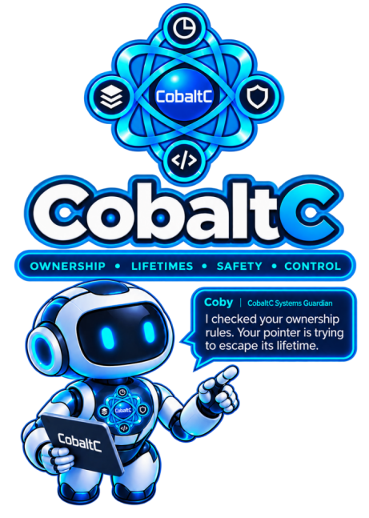

NOTE: Within the narrative and theoretical scope of the book, this appendix serves primarily to demonstrate how a memory-safe, C-successor language ought to define its semantic boundaries, rather than to provide a drop-in replacement for a rigorous ISO-level standard.
In this context, CobaltC can best be described as a thought experiment—a speculative systems language designed to address the safety problems of C while adopting a more robust structural model.
If nothing else, it illustrates the exact pain points and formal guarantees required to make a safe systems programming language actually function.
Publication Status: This edition defines the CobaltC 1.0 language contract.
Implementation technique, representation, and compiler architecture remain implementation choices except where explicitly constrained by normative language guarantees.
Preface
As argued throughout The Wrong Memory essays, attempting to tack a "safe subset" onto an inherently unsafe language usually fails because the core language semantics still allow invariant violations. By embedding ownership and borrowing into the core type system, CobaltC makes safety an intrinsic property of the language rather than an optional discipline imposed upon it.
CobaltC unashamedly draws on the ownership and memory-safety techniques demonstrated by Rust. Although Rust isn't the origin of most of these ideas, its significant contribution was demonstrating how they could be combined into a practical, high-performance systems language. CobaltC adopts that safety architecture without attempting to reproduce Rust's syntax or overall language philosophy. Instead, it applies the broader body of ideas to the problem identified in Appendix II: making semantic invariants such as ownership, lifetime, aliasing, mutability, and bounds properties that the compiler can represent and enforce, rather than obligations the programmer must maintain by convention.
1. Introduction
This specification defines what a conforming implementation MUST do; it does not prescribe a particular implementation technique unless this document explicitly makes an implementation property normative.
CobaltC is a statically typed systems programming language providing explicit ownership, deterministic destruction, compiler-checked borrowing, inferred lifetimes, explicit nullability, bounds-safe operations, structured error handling, safe concurrency, explicit unsafe operations, and explicit foreign-function interfaces.
The language is intended for software requiring predictable resource management, strong memory safety, native execution, and controlled interaction with low-level facilities.
Core Design:
CobaltC is C-like data plus ordinary functions, generics, explicit memory and ownership safety, and modules.
CobaltC provides C-like systems programming, but ownership, lifetime, bounds, nullability, and data-race rules are language semantics rather than programmer convention.
CobaltC provides deterministic resource management through destruction at language-defined ownership and scope boundaries and compiler-enforced borrowing rather than relying on garbage collection or programmer convention.
Managed pointers are the source-language representation of borrow capabilities. A borrow is the semantic relationship between an access capability and a referent; a managed pointer is the value that carries that capability. Managed pointers do not represent ownership unless a language rule explicitly states otherwise.
Visibility is defined at the module boundary through explicit export declarations; CobaltC does not use public, private, or protected declarations.
Unsafe operations and foreign interfaces form explicit boundaries outside the automatic safety guarantees of safe CobaltC.
CobaltC does not provide classes, object-oriented inheritance or dynamic dispatch.
The language rules are designed to ensure that a conforming implementation rejects programs that would violate the following safety properties in safe code:
- Moved values cannot be used through their previous ownership.
- Owned storage cannot be accessed after its lifetime has ended.
- An object cannot have multiple simultaneous owners.
- An object cannot be destroyed more than once through the ownership model.
- Conflicting mutable aliases cannot coexist.
- A mutable borrow cannot coexist with an incompatible shared borrow.
- Storage relocation cannot invalidate a live borrow.
- A borrow or slice cannot outlive the storage to which it refers.
- A local borrow cannot escape the lifetime of its referent.
- Null cannot be dereferenced through a non-nullable managed pointer.
- Safe indexing cannot access an element outside the bounds of its collection.
- Integer overflow cannot silently produce an undersized allocation.
These properties are consequences of the normative ownership, borrowing, lifetime, nullability, bounds, allocation, and destruction rules defined elsewhere in this specification.
This specification rigorously defines the normative syntax, semantics, and language guarantees of CobaltC. It does not prescribe implementation techniques, internal representations, or compiler architecture, except where such choices are necessary to satisfy a normative language guarantee. An implementation is therefore free to choose any implementation strategy that conforms to the requirements of this specification.
Examples in this specification are illustrative of the normative syntax and semantics unless explicitly identified otherwise. An example does not, by itself, introduce a language feature, impose an additional implementation requirement, or establish a guarantee not stated in the normative text.
2. Normative Terminology
The words MUST, MUST NOT, SHOULD, SHOULD NOT, and MAY are normative.
CobaltC 1.0 refers to the language edition. Publication version 1.0.3 refers to this document revision.
Implementation-defined means that an implementation chooses the behavior from the alternatives permitted by this specification and documents that choice.
Unspecified means that this specification permits more than one behavior and does not require an implementation to document which permitted behavior it chooses.
Undefined behavior is behavior for which this specification imposes no requirements. Operations expressible in safe CobaltC without entering an unsafe context MUST NOT have undefined behavior.
Managed pointer value refers to a source-language value that carries a managed access capability. The capability itself is the borrow relationship; the managed pointer value is the representation of that capability in source code.
Owned value refers to a value whose lifetime and destruction are controlled by the owning storage location according to the ownership rules of this specification. A borrowed managed pointer is not an owned value unless a language rule explicitly states otherwise.
Unsafe context is a program region in which operations outside the guarantees of safe CobaltC are permitted. An unsafe operation is an individual operation requiring such a context. Unsafe code is code containing or invoking unsafe operations.
3. Source Files
A CobaltC program consists of one or more source modules.
A translation unit defines exactly one module. The module declaration of a translation unit establishes the module defined by that translation unit. A translation unit MUST contain exactly one module declaration.
Submodules are distinct modules and MUST be defined by separate translation units. A submodule is not part of its parent module merely because it is organized beneath that module in a source-file hierarchy.
An implementation MAY use any source-file, directory, project, or compilation-unit organization internally, provided that the resulting module structure and behavior conform to this specification.
Source text is UTF-8 encoded Unicode. The source representation is interpreted as Unicode scalar values. Unicode normalization is not applied to identifiers; identifier comparison uses the source code-point sequence after lexical classification.
Identifiers are case-sensitive.
Whitespace separates lexical tokens where necessary and otherwise has no semantic meaning. An implementation MAY accept additional source encodings as extensions, but a conforming implementation MUST accept UTF-8.
Module Visibility
Module Visibility: CobaltC deliberately does not require public, private, protected, or equivalent visibility attributes on individual declarations.
Visibility is expressed at the module boundary. Declarations describe the implementation of a module, while the module's export block describes the declarations made available as part of its external interface. In this specification, exported describes declarations intentionally made available by a module, accessible describes whether code may legally reference a declaration, and visible is reserved for ordinary lexical or name-resolution concepts. This terminology distinction applies throughout this specification.
A declaration is externally accessible only when it is exported by its defining module. Nothing is exported implicitly.
A declaration that is not exported remains available only within the access permitted by the ordinary name-resolution and module rules. External code MUST NOT access a non-exported declaration merely because it knows its name or because the declaration appears in a source file belonging to the module.
The export boundary provides an explicit software-engineering boundary: declarations that are not exported MAY be changed without changing the externally visible interface, provided that the specified behavior and requirements of the exported interface remain compatible.
The same principle applies to submodules. A module hierarchy provides organization and namespaces but does not weaken encapsulation. Each module independently controls its external contract, and a parent module does not implicitly export, import, or expose declarations from a submodule.
An implementation MAY provide additional visibility mechanisms as extensions, but such mechanisms MUST be distinguishable from standard CobaltC behavior and MUST NOT silently alter the semantics of a valid CobaltC 1.0.3 program.
Source-File Organization
The language does not prescribe a particular source-file or directory layout. For example, a real CobaltC program might be organized as follows:
src/
main.cb
cli.cb
database/
database.cb
record.cb
index.cb
filesystem/
scanner.cb
path.cb
text/
tokenizer.cb
matcher.cb
This layout is illustrative only. The language defines modules and their relationships through module declarations, imports, and exports, not through directory names or file-system conventions.
4. Comments
CobaltC supports line comments:
// commentA line comment extends to the next line terminator or the end of the source file.
CobaltC also supports block comments:
/*
comment
*/Block comments may be nested:
/* outer comment
/* nested comment */
still inside outer comment
*/Nested block comments are useful for temporarily commenting out blocks of code that already contain block comments.
When lexing a block comment, the nesting depth is initially one. Each
/* encountered within the comment increases the nesting depth
by one, and each */ decreases it by one. The block comment
ends when the nesting depth reaches zero.
An unterminated block comment is a lexical error. Comments have no semantic effect.
5. Keywords and Reserved Names
The following words are reserved keywords:
alias as break const continue defer else enum export extern fn for foreach if import in loop match module move mut return struct unsafe while The following words are reserved literals:
false null true Reserved literals have fixed language-defined meanings and MUST NOT be declared as user-defined identifiers or shadowed by an inner declaration.
The following identifiers are reserved predefined type names:
bool char void i8 i16 i32 i64 i128 u8 u16 u32 u64 u128 isize usize f32 f64 Reserved keywords, reserved literals, and reserved predefined type names are collectively referred to as protected names. Protected names MUST NOT be declared as user-defined identifiers or shadowed by an inner declaration.
The predefined type names identify the primitive types defined by this specification. The name void identifies the type used for functions that do not return a value.
alias introduces a type-alias declaration.
An alias declaration has the form alias Name = ExistingType;. An alias is transparent for type compatibility and does not create a new nominal type.
The word let is not a CobaltC keyword and is not introduced by this edition.
A keyword, reserved literal, or reserved predefined type name is recognized only when the complete lexical token matches the name. A longer identifier remains an identifier; for example, returnValue, trueValue, and i32Value are identifiers.
6. Identifiers
An identifier begins with an IdentifierStart character and is followed by zero or more IdentifierContinue characters, as defined in Appendix B. Identifiers are case-sensitive.
value Value VALUEIdentifier Security and Unicode Restrictions
User-defined identifiers MUST comply with the Unicode identifier and security requirements defined in Appendix B.
In particular, identifiers MUST satisfy the Unicode XID_Start and XID_Continue requirements, including the CobaltC underscore rules, and MUST satisfy the Unicode Technical Standard #39 (UTS #39) Moderately Restrictive security profile.
Identifiers MUST NOT contain prohibited format or directional-control characters. An identifier that violates the requirements of Appendix B is a compile-time error.
Confusable conflicts involving protected names or other identifiers in the applicable lookup scope are diagnosed according to the confusable-identifier rules defined in Appendix B.
7. Literals
CobaltC provides integer, floating-point, character, string, Boolean, and null literals.
Integer literals
Integer literals may be written in decimal, hexadecimal (0x), binary (0b), or octal (0o) form.
Decimal integer literals consist of one or more decimal digits. Hexadecimal integer literals consist of 0x followed by one or more hexadecimal digits. Binary integer literals consist of 0b followed by one or more binary digits. Octal integer literals consist of 0o followed by one or more octal digits.
An underscore may separate digits within an integer literal but MUST NOT appear at the beginning, end, or twice consecutively.
Floating-point literals
A floating-point literal is a decimal number containing a decimal point and/or an exponent.
A decimal point consists of . followed by zero or more decimal digits. The decimal point MUST be preceded by at least one decimal digit.
An exponent consists of e or E, optionally followed by + or -, followed by one or more decimal digits.
A floating-point literal MUST contain either a decimal point or an exponent.
A floating-point literal MUST contain at least one decimal digit before an exponent, and an exponent MUST contain at least one decimal digit.
The following are valid floating-point literals:
123.456123.0.456123e10123E10123e+10123e-10123.456e10123.456E+10123.e-100.456e-10
The following are not floating-point literals:
.456123e123e+123e-
Underscores are not permitted in floating-point literals.
The default floating-point type is f64 when no contextual type is available.
Character literals
A character literal is enclosed in single quotes and denotes exactly one Unicode scalar value. Standard escapes include \n, \r, \t, \0, \\, and \'.
String literals
A string literal is enclosed in double quotes and produces a String value. Standard escapes include \n, \r, \t, \0, \\, and \". The value of a string literal is a sequence of bytes containing valid UTF-8 encoding.
Boolean literals
The Boolean literals are true and false. They denote the two values of the predefined bool type.
Null literal
The null literal is null. Its type and permitted uses are defined by the type system.
Literal typing
Integer literals MAY be typed from context where possible; without a contextual integer type, the implementation uses i32 when the value is representable and MUST otherwise require an explicit type. A literal whose value cannot be represented by its required type is a compile-time error.
8. Modules
A module declaration has the form:
module example;A module establishes a namespace. A translation unit MUST contain exactly one module declaration.
Modules MAY import other modules or selected declarations from other modules. Items are separated by commas:
import std.io;
import std.io { print, println };
import
{
std.io { print, println },
std.vector,
std.anotherModule
}
A declaration of the form import module; imports the specified module. A declaration of the form import module { declaration1, ..., declarationn }; imports only the specified declarations from that module. A declaration of the form import { module1, ..., modulen } imports each specified module.
The braced module-import form is semantically equivalent to a sequence of individual module imports. For example:
import
{
std.io { print, println },
std.vector
}is equivalent to:
import std.io { print, println };
import std.vector;Each declaration imported selectively MUST be externally accessible from the source module. Imports do not implicitly re-export declarations.
Name resolution is lexical and module-aware. An unresolved name is a compile-time error.
Module Contracts
A module's export { ... } block specifies the declarations that are externally accessible from that module.
An export MUST always be specified within an export { ... } block.
Unlike import items, export items are separated by semicolons (not commas).
Unlike import declarations, a standalone export declaration, such as export someType; MUST NOT occur.
Any declaration not listed in the module's export { ... } block is module-local and MUST NOT be externally accessible.
A module's export { ... } block lists declarations externally accessible from that module. Declarations not listed remain module-local. A submodule is a distinct module and is not exported by its parent merely because it exists beneath that parent.
Example:
export
{
Vector;
VectorError;
Vector::new();
Vector::length;
}
For both imports and exports, { ... } is the block form, whose closing } terminates the construct.
A module hierarchy does not implicitly grant access between parent, child, or sibling modules. External code imports the module whose exported declarations it intends to use.
Two translation units MUST NOT define the same module for one program. Circular module dependencies MAY be supported, but name resolution MUST remain well-defined; an unresolved dependency is a compile-time error.
9. Declarations
CobaltC provides:
const
alias
struct
enum
fnDeclarations are introduced into their applicable lexical or module namespace.
Inner declarations MAY shadow outer declarations where permitted.
10. Variables
A variable is declared using:
i32 count = 0;A mutable variable is declared using:
mut i32 count = 0;An uninitialized declaration is permitted:
i32 result;but result MUST be initialized before it is read. A declaration's initializer is evaluated after the binding is introduced but before the binding is considered initialized; referring to the binding during its own initializer is therefore invalid.
11. Constants
Constants use:
const i32 maximum = 100;A constant initializer MUST satisfy the implementation's constant-expression requirements, and an implementation MUST document those requirements.
A constant cannot be mutated or borrowed mutably.
12. Primitive Types
CobaltC defines:
bool
char
void
i8
i16
i32
i64
i128
u8
u16
u32
u64
u128
isize
usize
f32
f64The fixed-width integer types have exactly their specified widths. Signed integers use two's-complement mathematical ranges. isize and usize are pointer-sized signed and unsigned integer types respectively.
char represents one Unicode scalar value. bool has exactly two values, true and false. void is the return type of functions that produce no value.
Integer overflow, division by zero, and invalid shift operations are not silently memory-unsafe. An implementation MUST diagnose statically provable invalid constant operations and MUST otherwise apply the failure semantics specified by Section 27.
The implementation provides predefined integer-limit constants such as usize_max, whose values correspond to the greatest representable value of the named type. These constants are language-provided values and do not imply a particular representation or compiler implementation strategy.
13. Compound Types
CobaltC supports structs, enums, arrays, function types, managed pointers, raw pointers, and generic types. Types such as String, Vector, and Result described later in this specification are specified language-provided abstractions rather than primitive types.
Structs and enums are nominal types. Type aliases do not create new nominal types.
Managed pointer forms are:
T*
mut T*
T*?
mut T*?Array types use T[N]. Function types use the function declaration form described by Section 24.
14. Managed Pointer Types
A managed pointer type specifies the referenced type, whether the pointer is nullable, and the access capability held by the pointer. A managed pointer is a borrow capability rather than an ownership capability unless a language rule explicitly states otherwise.
A pointer type is formed by appending * to the pointee type. For example, String* denotes a pointer to String.
| Type | Meaning |
|---|---|
T* |
Shared, non-null managed pointer to T. |
T*? |
Shared, nullable managed pointer to T. |
mut T* |
Exclusive, mutable, non-null managed pointer to T. |
mut T*? |
Exclusive, mutable, nullable managed pointer to T. |
A shared managed pointer permits read-only access. A mutable managed pointer permits exclusive mutable access for the duration of the applicable borrow.
Taking a shared borrow produces T*; taking a mutable borrow produces mut T*:
The following forms illustrate the two borrow operations:
String* p = &value; // taking a shared borrow
mut String* p = &mut value; // taking a mutable borrowA mutable managed pointer may be reborrowed or converted to a shared managed pointer. The shared reborrow temporarily prevents conflicting use of the original mutable capability while it remains live.
Shared managed pointers are copyable capabilities. Mutable managed pointers are moveable but are not implicitly copyable. Copying a shared managed pointer creates another shared borrow of the same referent; it does not create ownership.
Managed pointers are non-owning references unless a language rule explicitly states otherwise. Destroying or discarding one does not destroy its referent.
15. Raw Pointers
Raw pointers are represented by:
raw T*
A raw pointer is an unmanaged address referring to a value of type
T. Raw pointers do not participate in the ordinary managed
ownership, borrowing, lifetime, or destruction guarantees of CobaltC.
A raw pointer value MAY represent an address that is null, invalid, dangling, or otherwise refer to memory
that is not currently a valid value of type T. The language
does not automatically establish the validity or lifetime of a raw
pointer.
Raw-pointer dereference, conversion between raw pointers and managed pointers, pointer arithmetic, and unrestricted manipulation of raw addresses require an unsafe context unless another language rule explicitly permits the operation.
A raw pointer MUST NOT be used to bypass the ownership or borrowing rules of safe CobaltC code. Code that uses raw pointers to access managed memory is responsible for maintaining the validity, lifetime, alignment, and aliasing requirements of the accessed value.
The compiler MUST NOT infer ownership, borrowing, or lifetime guarantees from the existence of a raw pointer.
An unsafe context is a source region in which unsafe operations are permitted. An unsafe operation is an operation whose correctness is not established by the ordinary guarantees of safe CobaltC. Unsafe code is code containing one or more unsafe contexts or unsafe operations. Entering an unsafe context does not suspend unrelated language guarantees; code remains subject to all applicable rules unless an explicitly unsafe operation permits otherwise.
16. Mutability
The mut qualifier may appear only once in a single binding declaration or type qualification. Repeated application of mut is a compile-time error.
Mutability is a semantic property that determines whether a value may be modified through a particular binding or managed pointer capability. When applied before a declaration, `mut` modifies the mutability of the binding. When applied before a type, `mut` modifies the access capability of that type. Qualifiers immediately preceding a type modify the type; qualifiers immediately preceding a declaration modify the binding.
The mut qualifier may appear only once in a single type or declaration position. Repeated or conflicting mutability qualifiers are invalid.
A mutable binding permits mutation of the value associated with that binding where no ownership or borrowing rule prohibits the operation.
A shared managed pointer of type T* provides read-only access to its referent. A mutable managed pointer of type mut T* provides exclusive mutable access to its referent for the duration of the live mutable borrow.
Binding mutability and managed-pointer mutability are distinct semantic properties. A mutable binding does not by itself create a mutable managed pointer.
For function parameters whose type is a managed pointer, the mutability specified by the managed pointer type determines the access capability of the parameter. A separate binding-level mut is not required to obtain mutable access through a mut T* parameter.
Thus:
fn update(mut String* value) { append(*value, "!"); } declares a parameter of type mut String*. The parameter provides exclusive mutable access to its referent subject to the ordinary borrowing and lifetime rules.
Mutability does not override ownership, aliasing, borrowing, or lifetime rules.
The compiler MUST reject any operation that would mutate a value through a shared managed pointer or otherwise violate the exclusivity requirements of a mutable managed pointer.
17. Type Compatibility
Assignments, function arguments, and return values MUST have compatible types.
For managed pointers, compatibility accounts for referenced type, access capability, and nullability. T* and mut T* are distinct types, and a shared pointer cannot be used where mutable access is required.
A mutable managed pointer MAY be used where a shared managed pointer is required, subject to borrowing and lifetime rules. This represents a shared reborrow and temporarily suspends conflicting mutable use.
Implicit conversions MUST NOT silently remove nullability, create ownership, destroy ownership, increase access capability, invalidate a lifetime guarantee, or perform unsafe reinterpretation.
An explicit conversion MAY be provided, but an explicit conversion MUST NOT be a mechanism for bypassing the ownership, borrowing, lifetime, or safety rules of safe CobaltC.
18. Type Inference
CobaltC permits type inference where the grammar and surrounding context establish a unique type.
Inference MUST preserve ownership, binding mutability, managed-pointer access capability, nullability, borrowing, and lifetime distinctions.
A shared borrow infers T*; a mutable borrow infers mut T*. Inference MUST NOT infer mutable access from shared access alone.
When no unique type can be established, the implementation MUST require an explicit type rather than choose an arbitrary type.
The compiler MAY implement inference using regions, constraints, control-flow analysis, graphs, or another sound technique. Those techniques are not additional source syntax.
19. Generic Types and Functions
Generic types and functions are statically checked. A generic declaration defines one parameterized declaration; supplying type arguments specializes that declaration. The implementation technique used for specialization is not constrained by this specification provided that observable language semantics are preserved.
fn identity<T>(T value) : T
{
return value;
}Generic type arguments MUST satisfy the ordinary type-compatibility and ownership rules applicable to the instantiated declaration. A generic declaration MUST NOT rely on properties of a type argument that are not established by the declaration's constraints or by the ordinary rules of the language.
CobaltC 1.0 does not define a user-facing generic type-constraint syntax. Generic declarations may therefore rely only on properties guaranteed for all possible type arguments and operations explicitly available under the ordinary rules of the language. CobaltC 1.0 intentionally provides unconstrained generics only; user-facing generic constraints are outside this edition. This limitation is a deliberate edition boundary rather than an omission of implementation capability. An operation that requires additional properties is valid only when those properties are universally available or established by the ordinary rules of the instantiated type.
20. Exported Types
Exporting a type makes the type name available to external code but MUST NOT, by itself, make the representation of that type available to external code.
External code MAY name an exported type, use the type in function signatures, and pass or return values or managed pointers to the type, subject to the ordinary rules of the type system.
External code MUST NOT directly inspect, access, or manipulate the representation of an exported type unless that representation is explicitly exposed by a language mechanism defined by this specification. In particular, external code MUST NOT access fields, layout, or other representation details solely because the type is exported.
The defining module controls how an exported type is constructed, accessed, and manipulated through its exported declarations.
An exported type MAY therefore be used as an opaque type by external code while remaining fully defined within its defining module.
21. Structs
A struct defines a nominal aggregate:
struct Point
{
i32 x;
i32 y;
}Struct fields have declared types. A struct value owns its owned fields according to their declared types and the language's ownership rules. A field is owned when its declared type represents an owned value rather than a borrowed capability. Destruction applies only to owned values; borrowed managed pointers do not participate in destruction of their referents.
Struct construction uses the form Type { field = expression, ... }. Field names identify the destination fields, and each field MUST be initialized exactly once.
Point point = Point
{
x = 10,
y = 20
};Structs do not contain function declarations. Operations on a struct may instead be declared as associated functions using the type's qualified name.
Destruction
A type MAY define a language-recognized destruction hook using associated-function syntax of the form:
fn T::destroy(mut T* value) : void { ... }
A destruction hook uses associated-function syntax but is a distinct
language mechanism: it is invoked implicitly by the destruction semantics
of the language when the implementation destroys an owned value of type
T. It is not an ordinary associated function and MUST NOT be
invoked explicitly as part of normal source-language execution.
The hook receives exclusive mutable access to the owned value while destruction
is performed and MAY release resources managed directly by T that
are not represented by owned fields. The hook MUST NOT independently destroy
owned fields that the implementation will subsequently destroy. After the
destruction hook completes, the implementation recursively destroys the
remaining owned fields according to their destruction semantics.
The destruction hook MUST return void and MUST NOT be invoked
explicitly by ordinary program code. It is a destruction hook rather than an
ordinary callable function. The implementation invokes it exactly once for
each owned value whose type defines one.
If a type has no destruction hook, its owned fields are recursively destroyed according to their own destruction semantics.
T.destroy()
│
├── releases resources managed directly by T
│ (but not represented by owned fields)
│
└── compiler destroys owned fields
├── field A → its destruction semantics
├── field B → its destruction semantics
└── ...
Example:
struct File
{
String path;
raw Handle handle;
}
fn File::destroy(mut File* file)
{
unsafe
{
close_handle(file->handle);
}
}
The intended destruction sequence is:
File destroyed
│
├── File::destroy(&mut file)
│ └── closes the OS handle
│
└── compiler destroys owned fields
└── file.path → String destruction
path is an owned CobaltC field, so File::destroy does not destroy it. The compiler does that afterward.
Meanwhile, the handle is a resource managed directly by File; it is represented as a raw Handle and therefore isn't something the ordinary CobaltC field-destruction machinery would recursively release.
A destruction hook is subject to the ordinary ownership and partial-move rules. An owned field moved out by the destruction hook is no longer destroyed by the subsequent automatic field-destruction phase.
22. Enums
An enum defines a finite set of named variants:
enum Status
{
Ready,
Running,
Failed
}Variants MAY contain associated values:
enum Result<T,E>
{
Ok(T),
Err(E)
}Variant names MUST be unique within the enum. Variants are part of the enum's semantic interface and MAY be used to construct and pattern-match values.
An enum MAY have zero variants. Such an enum has no constructible value and therefore can only be used in contexts that do not require producing a value.
A variant constructor is not an ordinary function. It nevertheless participates in type checking as a value constructor.
23. Arrays
Arrays contain a fixed number of elements and use the type form:
T[N]The length N is part of the array type. Array initialization may use an element list:
i32[3] values = [10, 20, 30];The number and types of initializer elements MUST match the array type.
A zero-length array T[0] is permitted. It contains no elements and cannot be indexed, but it may be sliced with ... to produce an empty slice.
Safe indexing MUST remain within the valid range.
24. Functions
A function is declared by specifying its name, parameters, and optionally its return type:
fn add(i32 a, i32 b) : i32
{
return a + b;
}If the return type is omitted, the return type is void:
fn log(String message)
{
print(message);
}An explicit void return type is also permitted. A function parameter has the declared type and access capability specified in its declaration. Ownership, borrowing, mutability, and lifetime semantics apply to parameters and return values according to their types and the ordinary rules of this specification.
A non-void function MUST return a value compatible with its declared return type on every successful control-flow path. A void function MUST NOT return a value.
Function names MUST NOT be overloaded within the same unqualified lookup scope. Associated functions are identified separately by their associated type and function name.
Associated Functions
An associated function is declared using the form Type::function. Association provides type-qualified organization and lookup but does not introduce object-oriented method dispatch, an implicit receiver, or an implicit this or self parameter.
fn Stack::push(mut Stack* stack, i32 value)
{
...
}An associated function is otherwise an ordinary function. All parameters MUST be declared explicitly, and association does not alter the function's parameter list, calling convention, ownership, borrowing, mutability, lifetime, or return-value semantics.
An operation on a type MAY instead be declared as an ordinary function:
fn Stack_push(mut Stack* stack, i32 value)
{
...
}The ordinary and associated forms have the same fundamental function semantics. They are separate functions; association determines how the function is named and discovered.
Function Parameters and Mutable Access
A parameter of an ordinary value type receives an owned value according to the function-call and ownership rules.
A parameter of type T* provides shared, read-only access to a referent. A parameter of type mut T* provides exclusive mutable access to a referent. A mutable parameter therefore MUST be declared with the mut qualifier on the managed-pointer type when the function is intended to modify the referenced value.
fn append_value(mut String* value)
{
append(*value, "!");
}
mut String text = "hello";
append_value(&mut text);The mut qualifier on a managed-pointer type specifies the parameter's access capability. A separate binding-level mut on the parameter is not required.
When an argument of type mut T* is supplied to a parameter of type T*, the argument undergoes a shared reborrow. This conversion does not move the original mutable managed pointer; the original mutable capability is temporarily restricted while the shared reborrow remains live.
Type-Qualified Associated Functions
An associated function MAY be referenced through its associated type using a type-qualified name:
Stack<i32>::new();
Stack<i32>::push(&mut stack, 10);For a generic type, the type arguments form part of the qualification. A type-qualified call does not provide an implicit receiver. The selected function receives only the arguments explicitly supplied by the call.
An associated function is not required to operate on an existing value of its associated type. It MAY create and return a new value:
Stack<i32> stack = Stack<i32>::new();new is not a special constructor mechanism. It is an ordinary associated function whose declared return type determines the value produced by the call.
Value-Qualified Associated Functions
An associated function MAY also be referenced through a value whose statically known type is the associated type:
mut Stack<i32> stack = Stack<i32>::new();
stack::push(&mut stack, 10);
stack::push(&mut stack, 20);
stack::push(&mut stack, 30);A value-qualified call is not method syntax. The qualifying value determines the type used for associated-function lookup but is not implicitly passed to the selected function.
Consequently, when stack has type Stack<i32>, the following calls identify the same associated function:
Stack<i32>::push(&mut stack, 10);
stack::push(&mut stack, 10);In both calls, &mut stack is an explicit argument because the selected function declares a parameter of type mut Stack*.
The :: qualification syntax determines whether associated-function lookup is performed. It does not alter the function's declared parameter list or introduce an implicit receiver. The . operator remains member access and MUST NOT introduce implicit method lookup or invocation.
Associated Function Identity and Name Resolution
An associated function is identified by its associated type and function name. Associated functions with the same name MAY exist for different types and are distinct functions:
fn Stack::push(mut Stack* stack, i32 value) { ... }
fn HashTable::push(mut HashTable* table, i32 value) { ... }An ordinary function and an associated function MAY also have the same unqualified function name:
fn push(i32 value) { ... }
fn Stack::push(mut Stack* stack, i32 value) { ... }These declarations identify distinct functions. An unqualified call performs ordinary-function lookup:
push(10);A type-qualified call performs associated-function lookup for the specified type:
Stack<i32>::push(&mut stack, 10);A value-qualified call performs associated-function lookup using the statically known type of the qualifying value:
stack::push(&mut stack, 10);The existence of an ordinary function with the same unqualified name MUST NOT cause it to be selected by a type-qualified or value-qualified associated-function call. Likewise, the existence of an associated function MUST NOT cause it to be selected by an unqualified call.
Once an associated function has been selected, the number and types of the explicitly supplied arguments MUST satisfy that function's signature. Ordinary function-call rules, including evaluation order, ownership, borrowing, mutability, lifetime, and type compatibility, then apply.
Modules and External Interfaces
Ordinary functions and associated functions MAY be declared within the same module as the types on which they operate. A module MAY export types and functions through its export { ... } block to form its external interface.
Nothing is exported implicitly. A declaration is externally accessible only when it is exported by the defining module.
Function Semantics
Functions do not acquire special semantics merely because they are associated with a type. Functions remain ordinary callable entities whose ownership, parameter, borrowing, mutability, lifetime, and return-value behavior is determined by their declarations and by the general rules of this specification.
This design permits APIs to be organized around associated types while retaining explicit argument passing and C-like function semantics. In particular, an existing value may be used to select an associated function through value-qualified lookup, but the value is passed to that function only when it is explicitly supplied as an argument.
25. Expressions
Expressions produce values or perform operations. Core expression forms include names, literals, calls, construction, member access, indexing, borrowing, unary operators, binary operators, assignment, postfix error propagation, and range/slice expressions.
Member access uses .. Pointer member access uses -> and is shorthand for dereferencing the pointer and then performing member access:
pointer->field
(*pointer).fieldFor raw pointers, the dereference remains an unsafe operation.
Operands are evaluated from left to right. Function arguments are evaluated from left to right before control enters the called function.
26. Operator Precedence
From highest to lowest:
| Level | Operators |
|---|---|
| 1 | call, indexing, member access, postfix ? |
| 2 | !, unary +, unary -, move, borrow |
| 3 | *, /, % |
| 4 | +, - |
| 5 | <<, >> |
| 6 | <, <=, >, >= |
| 7 | ==, != |
| 8 | & |
| 9 | ^ |
| 10 | | |
| 11 | && |
| 12 | || |
| 13 | assignment |
Binary operators are left-associative unless otherwise specified. Assignment is right-associative. :: is name-qualification syntax, not an operator. start..end and start... are slice syntax rather than general binary operators.
&& and || are short-circuiting: the right operand of && is evaluated only when the left operand is true, and the right operand of || is evaluated only when the left operand is false.
27. Arithmetic
Integer and floating-point operations follow the semantics of their respective types.
For integers, an operation whose mathematical result is outside the destination type's range is an arithmetic failure. Such an operation MUST NOT silently wrap, produce an unspecified value, or otherwise produce a value that is treated as a successful result in safe code.
Division by zero is an arithmetic failure. Signed division whose mathematical quotient is not representable by the destination type is also an arithmetic failure.
Shift counts outside the valid range for the left operand's width are arithmetic failures in safe code.
An arithmetic failure that can be determined at compile time MUST be diagnosed as a compile-time error. The implementation MUST NOT generate code that evaluates such an operation as a successful operation.
i32 x = 2147483647;
i32 y = x + 1; // ERROR: integer overflowAn arithmetic failure that cannot be determined at compile time MUST be detected when the operation is evaluated at runtime. A runtime arithmetic failure MUST NOT produce a value, and execution MUST NOT continue past the failed operation as though it had successfully completed.
i32 x = read_i32();
i32 y = x + 1; // May fail at runtime if x is 2147483647The mechanism used to report a runtime arithmetic failure is implementation-defined. An implementation MAY use a checked error, a runtime trap, program termination, or another documented failure mechanism, provided that the mechanism preserves the guarantees of safe code. The implementation MUST document the mechanism it uses.
The implementation-defined reporting mechanism MUST NOT change whether the operation is considered to have failed. Portable programs MUST NOT depend on a particular reporting mechanism, but MAY rely on the guarantees that a failed arithmetic operation produces no value, does not silently succeed, and does not result in undefined memory behavior.
Floating-point operations follow the implementation's documented floating-point model. The model MUST define the behavior of infinities and NaNs if the implementation exposes them.
28. Equality
Equality requires compatible operands. Value equality compares values according to the type's equality semantics.
For floating-point values, equality follows the implementation's documented floating-point model. If NaN values are supported, implementations MUST document whether NaN compares equal to itself; the default CobaltC rule is that NaN is not equal to any value, including itself.
Managed-pointer equality compares pointer identity rather than recursively comparing referents. Pointer identity is the identity of the abstract referent allocation or storage location, not merely a machine address; destruction followed by reuse of an address does not make two different referents identical.
29. Assignment
Assignment requires a valid mutable destination.
The right-hand side of an assignment is evaluated before the previous value of an owned destination is destroyed. If evaluation of the right-hand side fails, the assignment does not replace the destination's existing value.
For an owned destination, a successful assignment replaces the previous owned value. The previous value is destroyed before the new value becomes the destination's owned value, unless the compiler can preserve the same observable destruction behavior through an equivalent implementation technique.
An assignment of a non-copyable value requires an explicit
move. An assignment of a copyable value copies the value unless
move is explicitly used.
String a = "one";
String b = "two";
a = move b;
When the right-hand side contains an explicit move, ownership
transfer occurs as part of evaluating the right-hand side. If the
assignment subsequently completes successfully, the destination receives
the transferred value and the moved-from binding no longer owns that
value.
After a move assignment, the moved-from binding cannot be used as an owner except where the partial-move and reinitialization rules permit.
Assignment MUST preserve the ownership, initialization, lifetime, borrowing, and destruction invariants applicable to both the destination and the resulting value. An assignment MUST NOT create an additional owner, invalidate a live borrow without an applicable invalidation rule, or cause a value to be destroyed more than once.
30. Function Calls
A call is valid only if the function is resolvable, the argument count and types match, and ownership, borrowing, and lifetime requirements are satisfied.
Arguments are evaluated left to right. Borrowing and ownership checks apply to the complete argument list before the callee begins execution.
A by-value parameter receives an owned value. If the argument is used directly as a by-value value, a copyable argument is copied and a non-copyable argument is moved. A permitted managed-pointer capability conversion, such as mut T* to T*, is performed instead as a reborrow and is not subject to this copy/move rule.
Once a non-copyable argument is moved into a parameter, the caller no longer owns it. Borrowed parameters do not transfer ownership. A function that wants to return ownership to its caller MUST return the value explicitly as part of its result.
31. Conditional Execution
CobaltC provides conditional execution using:
if condition
{
...
}
else
{
...
}The condition MUST have type bool. An else if chain is equivalent to nested conditionals.
32. Loops
CobaltC provides for, foreach, while, and loop loops.
Conditional loop forms use parenthesized conditions. Every loop must have a block body enclosed in braces. A semicolon or other statement cannot be used as a loop body.
for (initializer; condition; increment) { ... }
foreach (value in sequence) { ... }
while (condition) { ... }
loop { ... }A for loop consists of an initializer, a condition, and an increment expression. The initializer is evaluated once before the first iteration. Before each iteration, the condition is evaluated. If the condition is false, the loop terminates. After each iteration of the loop body, the increment expression is evaluated before the next condition evaluation.
The initializer, condition, and increment expression are optional. An omitted condition is treated as always true.
for (;;) { ... }A semicolon immediately following a loop header is not a valid loop body and is a syntax error.
for (;;); // invalid
for (;;); { ... } // invalidA foreach loop iterates over the values of a range or other language-defined sequence. The exact iteration mechanism is implementation-defined where this specification does not otherwise constrain it.
foreach (value in sequence) { ... }A loop body is a scope. Deferred blocks registered in an iteration are executed when control leaves that body, including when break or continue leaves the body.
while (condition)
{
Resource resource = acquire();
defer { release(resource); };
if (done) { break; }
} In this example, the deferred block executes when the loop body is exited, including when break leaves the loop.
break exits the innermost applicable loop. continue begins the next iteration of the innermost applicable loop. In a for loop, continue evaluates the increment expression before the next condition evaluation.
A deferred block is associated with the innermost enclosing scope and executes when control leaves that scope, regardless of whether the exit occurs through normal completion, return, break, continue, or another control transfer.
33. Match
match may be used as a statement or expression.
match status {
Ready => use_ready(),
Running => use_running(),
Failed => use_default()
}A match expression may produce a value:
String result = match value {
1 => "one",
2 => "two",
_ => "other"
};Match arms are evaluated in source order and the first matching arm is selected. The _ pattern matches any value not matched by an earlier arm. The compiler MUST reject statically non-exhaustive matches over a finite set of known variants or otherwise exhaustively enumerable cases.
34. Return
return transfers control from the current function.
The return expression is evaluated before deferred blocks and local destruction associated with the exited scopes. The resulting value is then transferred to the caller according to the ownership and borrowing rules.
Returning an owned value transfers ownership to the caller. Returning a managed pointer is permitted only when its lifetime remains valid after the function returns. A managed pointer to an ordinary local variable MUST NOT be returned.
35. Defer
defer registers a block to be executed when the enclosing
lexical scope is exited.
fn process_file(Path path)
{
File file = File::open(path);
defer
{
File::close(file);
};
process(file);
}A deferred block is associated with the scope in which it is registered. When control leaves that scope, its deferred blocks execute before the scope's owned locals are destroyed. Deferred blocks registered in nested scopes are associated with their respective scopes and execute when those scopes are exited.
{
Resource resource = acquire();
defer
{
release(resource);
};
use(resource);
}Deferred blocks execute in reverse registration order within each scope. For nested scopes, deferred blocks in the inner scope execute before deferred blocks in the enclosing scope.
{
defer
{
log("outer");
};
{
defer
{
log("inner");
};
}
}
// Output:
// inner
// outerA deferred block observes the current value of each referenced binding or subobject at the time the deferred block executes. Registering a deferred block therefore creates a future use of each referenced binding or subobject path. The referenced binding or subobject path MUST remain valid until the deferred block has executed and MUST be initialized when the deferred block executes.
The value held by a referenced binding or subobject MAY be replaced, reassigned, or otherwise changed before deferred execution when permitted by the ordinary ownership, initialization, borrowing, lifetime, and destruction rules. Such an operation changes the value observed by the deferred block; it does not remove the deferred reference to the binding or subobject path.
String value = "hello";
defer
{
print(value);
};
value = "goodbye";
// Prints: goodbyeA value instance held by a binding or subobject referenced by a deferred block MUST NOT be moved out of, destroyed, or otherwise invalidated in a manner that leaves the referenced binding or subobject path uninitialized or invalid when the deferred block executes. A move that leaves the referenced path moved-from is therefore prohibited unless that path is reinitialized before deferred execution.
String value = "hello";
defer
{
print(value);
};
String other = move value; // ERROR: value is required by the deferred blockA deferred reference to a binding does not by itself require every subobject of that binding to remain initialized. If a deferred block references only a particular field or subobject, disjoint fields or subobjects MAY be moved or otherwise modified when permitted by the partial-move, borrowing, and lifetime rules. The specifically referenced path MUST remain valid and MUST be initialized when the deferred block executes.
Deferred blocks execute before the destruction of owned locals in their associated scope. Consequently, a deferred block MAY access an owned local that would otherwise be destroyed when the scope is exited.
A deferred block MUST NOT access a binding or subobject whose lifetime ends before the deferred block executes. If such access would occur, the program is ill-formed.
If execution of a deferred block itself transfers ownership, destroys a value, moves a field, or otherwise changes the initialization or ownership state of a referenced path, the resulting state MUST be respected by subsequent deferred blocks and by automatic scope destruction. A value or subobject MUST NOT be destroyed more than once.
36. Definite Initialization
A value MUST be initialized before it is read.
The compiler MUST perform control-flow-sensitive definite-initialization analysis sufficient to establish whether every path reaching a read has initialized the value.
i32 value;
if condition
{
value = 10;
}
print(value);The example is invalid unless the compiler can prove that every path reaching print initializes value.
37. Ownership
Ownership is a fundamental part of CobaltC's type and runtime model. An owned value has exactly one responsible owner, and that owner is responsible for eventual destruction.
Managed pointers are non-owning. Library abstractions MAY implement shared ownership, but such ownership MUST be explicit in the abstraction and is not inferred from an ordinary managed pointer. Shared ownership implemented by a library is an abstraction-level resource-management mechanism, not an additional ordinary ownership state of the language.
Ownership transfer is explicit through moves and through operations whose signatures consume owned values. Passing a copyable value by value copies it; passing a non-copyable value by value moves it.
A value is copyable only when its type's copy contract permits copying. The predefined value types and shared managed pointers are copyable unless otherwise stated. A user-defined aggregate is copyable when all of its owned components are copyable and the type does not define a destruction hook. Types provided by the standard library MAY define their own copy contracts. A mutable managed pointer is not copyable. A copy operation produces an independent value according to the type's copy contract.
38. Move Semantics
A move transfers ownership of an owned value. Moving a managed pointer value transfers its borrow capability rather than ownership of its referent.
File a = open("data.txt")?;
File b = move a;After the move, a remains a binding but no longer owns the transferred value. It MUST NOT be read, moved, or destroyed as though it still owned that value. The moved-from binding may be reassigned with a newly initialized value.
39. Copy Semantics
A type may support copying. Copying is implicit when a copyable value is used in a by-value assignment, initialization, or function argument position and an explicit move is not present.
Copying produces an independent value according to the type's copy contract. Copying is not ownership transfer.
A shared managed pointer is copyable; copying it creates another shared borrow. A mutable managed pointer is not implicitly copyable.
40. Partial Moves
For aggregate values, an individual owned component MAY be moved independently when the resulting ownership state is well-defined according to the language rules.
After a component is moved, that component is considered moved from the containing aggregate. The containing aggregate remains usable through components that remain owned and initialized. A moved component MUST NOT subsequently be accessed through its original ownership path until it is reinitialized.
struct Person
{
String name;
String address;
}
Person person = ...;
String name = move person.name;
print(person.address); // OK
print(person.name); // ERROR: name was movedAn aggregate MUST NOT be used in an operation that requires ownership or initialization of a moved component. In particular, an aggregate with a moved component MUST NOT be moved, copied, returned, or passed by value when doing so would require that component to be available.
Person person = ...;
String name = move person.name;
Person other = move person; // ERROR: person.name has been movedA moved component MUST NOT be destroyed again through the original aggregate ownership path. If the aggregate later reaches destruction, only the components that remain owned and initialized by that aggregate are destroyed.
Person person = ...;
String name = move person.name;
// `person.name` is no longer owned by `person`.
// When `person` is destroyed, only `person.address` is destroyed.A moved component MAY be reinitialized through its original ownership path when the language rules permit assignment to an uninitialized component. Once reinitialized, the component is again owned and initialized by the containing aggregate and participates in its subsequent destruction.
Person person = ...;
String name = move person.name;
person.name = "new name"; // OK: name is reinitialized
// `person` now owns both name and address again.41. Borrowing
A value MUST NOT be destroyed, reassigned, replaced, or otherwise invalidated while a live borrow of that value or overlapping storage would be invalidated by the operation. A borrow provides access to an owned value without transferring ownership. Borrowing does not create a new owner of the borrowed value.
CobaltC supports shared borrows and mutable borrows. A shared borrow provides read-only access to its referent. A mutable borrow provides exclusive mutable access to its referent.
The managed pointer type T* represents a shared, non-null
managed pointer. The managed pointer type mut T* represents an
exclusive, mutable, non-null managed pointer.
The expression &expr creates a shared borrow of type
T*. The expression &mut expr creates a mutable
borrow of type mut T* when the applicable ownership,
mutability, and borrowing rules permit the operation.
The fundamental borrowing rule is:
zero or more compatible shared borrows OR one mutable borrowMultiple compatible shared borrows MAY exist simultaneously. A shared borrow is compatible with another shared borrow when neither borrow provides conflicting access to the same storage.
String value = "hello";
String* pointer = &value;
print(*pointer);
print(value);
The example is valid because both accesses are read-only shared access.
The borrow does not transfer ownership of value. The binding
value remains the owner of the string.
A mutable borrow is incompatible with any other borrow of the same storage that would permit conflicting access. Conflicting borrows MUST be rejected.
mut String value = "hello";
String* shared = &value;
print(*shared);
mut String* mutable = &mut value; // ERROR: conflicting borrowA value MUST NOT be moved while a live borrow of that value would be invalidated by the move.
String value = "hello";
String* pointer = &value;
String moved = move value;
print(*pointer); // ERROR: `value` was moved while borrowedA borrow MUST NOT outlive its referent. A managed pointer MUST NOT be used after the storage required by that pointer has ceased to be valid.
42. Shared Borrows
A shared borrow provides read-only access to its referent. Multiple compatible shared borrows MAY exist simultaneously.
String value = "hello";
String* first = &value;
String* second = &value;
print(*first);
print(*second);Shared borrows MAY alias the same value when they provide only compatible shared access.
String value = "hello";
String* first = &value;
String* second = &value;
String* third = &value;
print(*first);
print(*second);
print(*third);A shared borrow MUST NOT be used to perform mutable access to its referent.
String value = "hello";
String* pointer = &value;
append(*pointer, "!"); // ERROR: shared borrow does not permit mutationA mutable borrow MUST NOT be created while an incompatible shared borrow remains live.
mut String value = "hello";
String* shared = &value;
print(*shared);
mut String* mutable = &mut value; // ERROR: `value` is still borrowed
append(*mutable, "!");The compiler MUST permit multiple compatible shared borrows and MUST reject conflicting mutable access.
43. Mutable Borrows
A mutable borrow provides exclusive mutable access to its referent.
A mutable borrow requires a mutable owner or otherwise mutable storage as defined by the applicable type rules.
mut String value = "hello";
mut String* pointer = &mut value;
append(*pointer, " world");
print(*pointer);While a mutable borrow is live, another mutable borrow of overlapping storage MUST NOT be created.
mut String value = "hello";
mut String* first = &mut value;
mut String* second = &mut value; // ERROR: conflicting mutable borrow
append(*first, "!");
append(*second, "?");A mutable borrow MUST NOT coexist with a conflicting shared borrow.
mut String value = "hello";
String* shared = &value;
mut String* mutable = &mut value; // ERROR: conflicting borrow
print(*shared);
append(*mutable, "!");A mutable managed pointer MAY subsequently be reborrowed or converted to a shared managed pointer when the resulting shared access satisfies the applicable borrowing and lifetime rules.
mut String value = "hello";
mut String* mutable = &mut value;
append(*mutable, "!");
String* shared = mutable;
print(*shared);The resulting shared pointer provides only shared access. The mutable capability MUST NOT be used in a conflicting manner while the shared reborrow remains live.
Mutable access MUST remain exclusive for the duration of the applicable mutable borrow.
44. Borrow Lifetime
A borrow has a lifetime during which its managed pointer remains valid and its borrowing restrictions apply.
A borrow is live at a program point if an execution path from that point may subsequently access the corresponding managed pointer or perform an operation whose validity depends on that borrow.
A borrow MUST NOT outlive its referent. A borrow remains live for at least the period required by all later uses of that borrow. An implementation MAY determine that a borrow is no longer required earlier, provided doing so cannot violate borrowing rules or change observable program behaviour.
String value = "hello";
String* pointer = &value;
print(*pointer);
// `pointer` is no longer used, so the borrow may end here.
doSomethingWith(value); // OKA managed pointer passed as an ordinary by-value argument remains live for the duration of the call.
fn use_value(String* value)
{
print(*value);
}
String value = "hello";
use_value(&value); // borrow remains valid for the duration of the callA function may return a managed pointer derived from an input borrow only when the result explicitly derives from that borrow and its lifetime does not outlive the input borrow.
fn first(String* value) : String*
{
return value;
}
String value = "hello";
String* pointer = first(&value);
print(*pointer); // OK: pointer does not outlive valueA returned managed pointer MUST NOT outlive the borrow from which it was derived.
fn get_value() : String*
{
String value = "hello";
return &value; // ERROR: returned borrow would outlive value
}A borrow MUST NOT outlive its referent.
String* pointer;
{
String value = "hello";
pointer = &value;
}
print(*pointer); // ERROR: referent no longer existsThe implementation MAY use conservative lifetime analysis. It MUST NOT accept a use that would outlive the referent.
45. Function Parameters and Returned Borrows
A function may accept a managed pointer without taking ownership of the referent. A parameter of type T* provides shared access; mut T* provides exclusive mutable access.
When an argument of type mut T* is supplied where T* is required, the language performs a shared reborrow. This conversion does not move the original mutable capability; the original capability is temporarily restricted while the reborrow remains live.
fn length(String* value) : usize
{
return length_of(*value);
}A function MAY return a managed pointer when the returned pointer remains valid after the function returns. A returned borrow derived from an input borrow MUST NOT outlive that input borrow.
fn identity_borrow(String* value) : String*
{
return value;
}A compiler MUST reject a returned borrow when it cannot establish the required lifetime relationship. A managed pointer to an ordinary local variable MUST NOT be returned.
46. Reborrowing
A managed pointer MAY be used to create another borrow of the storage it refers to. Such an operation is a reborrow.
A reborrow creates a new borrow whose access capability is derived from the existing managed pointer. Reborrowing MUST preserve the ownership, lifetime, and aliasing guarantees of the original borrow.
A reborrow operates on the storage referred to by the managed pointer; it does not move or transfer ownership of the managed pointer itself.
A shared managed pointer MAY be reborrowed as another shared managed pointer. Such a reborrow creates another shared borrow of the same storage.
A mutable managed pointer MAY be reborrowed as a mutable managed pointer, provided no conflicting borrow of the same storage is live.
fn append_exclamation(mut String* value)
{
append(*value, "!");
}
mut String value = "hello";
mut String* pointer = &mut value;
// Reborrow the referent mutably for the duration of the call.
// &mut *pointer does not move pointer. The original mutable capability
// may be used again after the reborrow is no longer live.
// The temporary mutable reborrow ends when the call returns.
append_exclamation(&mut *pointer);
append(*pointer, "?");A mutable managed pointer MAY also be reborrowed as a shared managed pointer when the resulting shared borrow satisfies the applicable lifetime and aliasing rules. Such a reborrow does not move or consume the original mutable capability.
mut String value = "hello";
mut String* pointer = &mut value;
// *pointer means "dereference the pointer and access the referent".
// The operation below borrows the referent, not the pointer variable.
// Taking a borrow of the dereferenced value is a valid reborrow:
String* shared = & *pointer;
print(*shared);
// `pointer` MUST NOT be used for conflicting mutable access while
// the shared reborrow remains live.A reborrow creates a new managed pointer capability to the same referent. It does not create ownership, transfer ownership of the underlying value, or change destruction responsibility.
mut String value = "hello";
mut String* pointer = &mut value;
// Taking a mutable borrow of the dereferenced value creates a mutable reborrow:
mut String* reborrow = &mut *pointer;
append(*pointer, "!"); // ERROR: conflicts with live mutable reborrow
append(*reborrow, "?");A shared reborrow derived from a mutable borrow temporarily restricts the originating mutable capability. While the shared reborrow is live, the originating mutable capability MUST NOT be used for conflicting access.
Once the reborrow is no longer live, the originating mutable capability MAY be used again, subject to the ordinary borrowing rules.
47. Field and Partial Borrows
A field of a structure MAY be borrowed independently of another disjoint field.
struct Pair
{
String first;
String second;
}
mut Pair pair = Pair { first = "one", second = "two" };
mut String* first = &mut pair.first;
mut String* second = &mut pair.second;
append(*first, "!");
append(*second, "?");A borrow of one field does not, by itself, prevent access to a disjoint field.
mut Pair pair = Pair { first = "one", second = "two" };
mut String* first = &mut pair.first;
append(pair.second, "!");
append(*first, "?");Two field paths are disjoint when they identify distinct, non-overlapping storage within the same aggregate value.
The compiler MUST permit simultaneous borrows of fields that are established to be disjoint.
The compiler MUST reject simultaneous mutable borrows when the borrowed field paths may refer to overlapping storage.
mut Pair pair = Pair { first = "one", second = "two" };
mut Pair* whole = &mut pair;
mut String* first = &mut pair.first;
use(*whole); // ERROR: conflicting borrowA borrow of an entire aggregate conflicts with a mutable borrow of any overlapping part of that aggregate.
Partial borrowing MUST preserve the same aliasing, lifetime, and exclusivity guarantees as borrowing an entire value.
48. Aliasing
Aliasing occurs when more than one managed pointer provides access to the same underlying storage.
Multiple compatible shared managed pointers MAY alias the same storage.
String value = "hello";
String* first = &value;
String* second = &value;
print(*first);
print(*second);A mutable managed pointer is exclusive. A mutable managed pointer MUST NOT coexist with another managed pointer that permits conflicting access to the same storage.
mut String value = "hello";
mut String* first = &mut value;
mut String* second = &mut value; // ERROR: mutable aliases are prohibited
append(*first, "!");
append(*second, "?");For any storage location accessible through managed pointers, CobaltC MUST enforce the following invariant:
multiple compatible shared managed pointers OR one mutable managed pointerA mutable managed pointer MUST NOT coexist with a conflicting shared managed pointer. Two mutable managed pointers MUST NOT provide conflicting access to the same storage.
The following is therefore permitted when all managed pointers provide compatible shared access:
shared shared sharedThe following are prohibited when the managed pointers provide conflicting access to the same storage:
mutable mutableshared mutableThese aliasing requirements apply to direct managed pointers, reborrows, field borrows, function parameters, returned borrows, and collection element borrows.
Safe CobaltC operations MUST NOT provide a means to bypass these aliasing requirements.
49. Collection Borrowing
Elements of a collection MAY be borrowed when the collection operation and element type permit the corresponding access.
Vector<i32> values = [10, 20, 30];
i32* first = &values[0];
i32* second = &values[1];A mutable element may be borrowed when the collection and element permit mutable access.
mut Vector<i32> values = [10, 20, 30];
mut i32* first = &mut values[0];
*first = *first + 1;A collection operation that requires mutable access or may relocate storage MUST NOT occur while a conflicting element or collection borrow remains live, unless the compiler can establish that the referenced storage is unaffected.
For dynamic indexes, the implementation MAY conservatively treat potentially overlapping accesses as conflicting. It MUST NOT assume disjointness merely because different runtime indexes are expected.
50. Borrow Invalidation
A managed pointer is valid only while its referent remains valid and the pointer satisfies the applicable borrowing rules.
An operation that conflicts with a live borrow MUST be rejected. A conflicting operation does not by itself make an otherwise valid managed pointer safe to use; the operation is prohibited while the conflicting borrow remains live.
A managed pointer MUST NOT be used after its referent has ceased to exist or after storage required by that pointer has ceased to be valid.
String* pointer;
{
String value = "hello";
pointer = &value;
}
print(*pointer); // ERROR: referent has been destroyedA value MUST NOT be moved while a live borrow of that value would be invalidated by the move.
String value = "hello";
String* pointer = &value;
String moved = move value;
print(*pointer); // ERROR: `value` was moved while borrowedA borrow MAY cease to restrict a value once the corresponding managed pointer is no longer used and the borrow is therefore no longer live.
mut String value = "hello";
{
String* pointer = &value;
print(*pointer);
}
append(value, " world");
print(value);A collection operation that could invalidate an active element borrow MUST be rejected while that borrow remains live.
mut Vector<String> values = ["hello"];
String* pointer = &values[0];
values::push(&mut values, "world"); // ERROR: active element borrow
print(*pointer);The compiler MUST reject a program when it can establish that a managed pointer would be used after its referent becomes invalid, or when an operation would violate the shared-borrow, mutable-borrow, lifetime, move, aliasing, or collection-borrowing rules.
Collection Invalidation and Conservative Analysis
An operation that may reallocate, resize, relocate, or otherwise invalidate storage MUST NOT be performed while a live managed pointer or slice depends on that storage, unless the compiler can establish that the particular reference is unaffected.
An implementation MAY use static or runtime techniques to prove that a particular operation cannot invalidate a particular reference. Safe behavior MUST be preserved regardless of whether the implementation uses compile-time or runtime analysis.
51. Destruction
Owned values are destroyed deterministically according to Section 21. An ownership responsibility is destroyed exactly once. Moved-from ownership does not cause a second destruction.
When an owned value is destroyed, the implementation MUST perform the
destruction semantics defined by this specification and MUST consume the
ownership responsibility for that value. The implementation MAY use an
internal operation, conventionally referred to as drop, to
perform this destruction. drop is not a source-language
operation and has no independent source-level semantics.
If the value's type defines a destroy hook, the implementation
invokes that hook according to Section 21. After the destruction hook
completes, the implementation recursively destroys the value's remaining
owned fields according to their destruction semantics.
52. Scope Destruction
For ordinary scope exit:
- deferred blocks execute;
- owned locals are destroyed in reverse declaration order;
- control proceeds to the enclosing scope.
An implementation MUST preserve the observable consequences of this ordering.
53. Unwinding
If the implementation supports unwinding, scopes exited by supported unwinding MUST perform their specified destruction.
Unwinding Boundary
CobaltC does not define panic or exception unwinding as a source-language mechanism. An implementation MAY use internal unwinding or another mechanism for its own purposes, provided that it does not introduce source-language semantics or observable behavior beyond those already specified by this document.
54. Abort
An abort terminates execution immediately.
Normal destruction is not guaranteed after an abort.
55. Nullability
Nullable managed pointers are explicitly represented by nullable pointer types.
null cannot inhabit a non-nullable managed pointer type.
Before dereferencing a nullable managed pointer, non-nullness MUST have been established by a test or equivalent language rule. Flow-sensitive refinement is permitted:
String*? value = find();
if (value != null)
{
print(*value);
}A refinement remains valid until the refined binding is assigned or another operation can change the condition on which the refinement depends. Passing the pointer by ordinary value does not itself invalidate the refinement.
56. Bounds Safety
Safe indexing MUST remain within valid bounds.
The compiler MAY eliminate runtime bounds checks when validity has been proven statically.
Unchecked indexing belongs to unsafe facilities.
The compiler MAY eliminate a runtime bounds check when it can prove statically that the index is valid. The optimization MUST preserve the observable semantics required by safe indexing. Unchecked indexing remains an unsafe facility.
57. Result<T,E>
For terminology consistency, CobaltC distinguishes between an error value represented by a program-visible type such as Result<T,E>, a runtime failure in which an operation cannot successfully produce its specified result, and abnormal termination mechanisms such as abort or unwinding. These mechanisms are distinct and are governed by their respective sections.
The canonical recoverable-error type is:
enum Result<T,E>
{
Ok(T),
Err(E)
}Expected operational failures SHOULD be represented using Result. The variants Ok and Err are ordinary enum variants and may be constructed and matched like other variants.
58. Error Propagation
The postfix ? operator propagates a compatible error from the current operation to the enclosing function.
fn load() : Result<String, IoError>
{
String text = read_file("data.txt")?;
return Ok(text);
}The operator evaluates its operand. If the operand is a successful Result, the contained value continues the expression. If it is an Err, that error is returned from the current function.
The operand of ? MUST have an error-propagation form defined by this section, and the propagated error MUST be compatible with the enclosing function result. ? is not an exception mechanism and does not implicitly unwind scopes other than the ordinary control-flow consequences of returning.
59. Strings
String is an owned text type that owns its UTF-8 storage.
A valid text value MUST contain valid UTF-8. Arbitrary byte sequences are not text values and require byte-oriented types or APIs.
A string literal has type String. A String MAY be borrowed through the ordinary shared-borrow rules, producing a shared managed pointer to the string.
String message = "hello, CobaltC";
String* view = &message;
print(*view);In this example, message remains the owner of the string storage and view provides borrowed read-only access to that storage. The borrow MUST remain valid for the entire period in which view is used.
60. Vector<T>
Vector<T> owns dynamically allocated contiguous
storage.
Its capacity MAY exceed its current length.
Operations that change storage in ways that could invalidate active references are governed by the borrowing rules.
A Vector<T> owns its elements according to the ownership
semantics of T. Borrowed access to vector elements does not
transfer ownership of the elements or the underlying storage.
Storage Invalidation
Because a Vector may relocate its contiguous storage, any operation capable of changing storage in a way that would invalidate an active element reference is subject to the borrow-invalidation rules of Section 50. An implementation MAY avoid relocation in a particular case, but it MUST NOT allow an active managed pointer to become invalid while remaining usable.
61. Slices
A slice provides borrowed access to a contiguous range of elements in another value. A slice does not own the elements, the storage containing those elements, or the source value from which the slice was created.
A slice is therefore a borrowed view of existing storage. Creating, copying, assigning, passing, or returning a slice does not transfer ownership of the referenced elements or storage.
61.1 Slice Types
A slice type is written Slice[T], where T is the element type.
A Slice[T] provides shared read-only access to its elements. A mut Slice[T] provides mutable access to its elements. Binding mutability is therefore part of the slice access model and determines whether the elements referenced through that slice may be modified.
A slice may be created from any source value that provides contiguous storage for elements compatible with T. In particular, slices may be created from arrays and vectors.
Slice[i32] from_array = array[0..3];
Slice[i32] from_vector = vector[0..3];A slice created from an array or vector borrows the corresponding region of that source's storage. The slice does not acquire ownership of the source, its storage, or its elements.
This is a language-defined exception to the general distinction between binding mutability and managed-pointer capability described in Section 16. The mutability of a slice does not transfer ownership of its elements and does not create an independent capability to the underlying storage.
Slice[i32] view = values[0..3];
mut Slice[i32] view = values[0..3];A mutable slice may be created only when the corresponding source access is permitted to provide exclusive mutable access under the borrowing and aliasing rules.
The element type T of Slice[T] does not itself encode slice mutability. Mutability is determined by the slice access type Slice[T] or mut Slice[T].
61.2 Slice Ranges
CobaltC slice ranges use inclusive endpoints. Both the starting and ending indices identify elements included in the resulting slice.
values[0..3]
values[0...]
values[...] The range 0..3 includes indices 0, 1, 2, and 3.
The range 0... begins at index 0 and continues through the final valid element of the source storage.
The complete-range form ... selects the entire source storage.
For a source containing n elements, an explicit inclusive range start..end is valid only when:
0 <= start <= end < nIf either explicit endpoint does not identify a valid element, the operation is a bounds error.
If start > end, the range is invalid. It does not implicitly produce an empty slice.
The complete-range form ... is valid for a source of any length, including an empty source, and produces an empty slice when the source contains no elements.
The form start... is valid only when start identifies a valid element of the source. If the source is empty, no value of start is valid and therefore start... is a bounds error.
Slice range syntax does not itself create or initialize elements. It identifies an existing region of the source storage and produces a borrowed view of that region.
61.3 Slice Length
For a non-empty inclusive range start..end, the resulting slice contains exactly:
end - start + 1elements.
Consequently, the following expressions produce slices of the indicated lengths:
values[0..0] // length 1
values[0..3] // length 4
values[2..5] // length 4
values[...] // length equal to the source length An empty source produces a slice of length zero when selected with ....
61.4 Slice Element Access
Elements of a slice are accessed relative to the beginning of the slice. The first element of a non-empty slice therefore has slice index 0, regardless of the index at which the corresponding element occurs in the source.
Slice[i32] view = values[4..7];
view[0] // refers to values[4]
view[3] // refers to values[7]Slice indexing is subject to the bounds rules of Section 56. An index is valid only when it identifies an element within the slice.
Indexing an empty slice is a bounds error.
A slice does not preserve or expose the original source indices as part of its indexing operation.
61.5 Borrowing and Lifetime
A slice is a borrowed value. Its lifetime begins when the slice is created and cannot extend beyond the lifetime of the storage to which it refers.
Creating a slice therefore creates a borrow of the corresponding source region. The borrow remains subject to the ownership, borrowing, lifetime, aliasing, and mutability rules defined elsewhere in this specification.
A slice does not extend the lifetime of its source value, its source storage, or any element contained within that storage.
If the source value is destroyed, moved in a manner that invalidates the referenced storage, or otherwise ceases to provide valid storage for the referenced region, the slice may no longer be used.
The compiler MUST reject any statically detectable use of a slice after the lifetime required for that slice has ended.
61.6 Aliasing and Mutable Slices
A shared slice and a mutable slice are subject to the same aliasing rules as the corresponding shared and exclusive borrows of the underlying storage.
Multiple shared slices may refer to overlapping or identical ranges when permitted by the borrowing rules.
A mutable slice provides exclusive mutable access to its referenced range. While that mutable access is active, another access that conflicts with the mutable borrow MUST NOT be permitted.
In particular, the existence of a mutable slice does not permit the creation of a shared slice or another mutable slice referring to an overlapping region unless the borrowing rules explicitly permit that operation.
Disjoint slices may coexist when their underlying ranges do not overlap and all other ownership, borrowing, and lifetime requirements are satisfied.
mut Slice[i32] left = values[0..2];
mut Slice[i32] right = values[3..5];The preceding slices refer to disjoint regions and may therefore coexist when the source and surrounding program satisfy the applicable borrowing rules.
61.7 Slice Assignment and Copying
Assigning or copying a slice copies the slice view, not the elements or storage to which the slice refers.
A shared slice Slice[T] MAY be copied when permitted by the borrowing rules. Each resulting slice is a shared view of the same referenced storage and remains subject to the lifetime and borrowing restrictions of the underlying borrowed access.
A mutable slice mut Slice[T] is an exclusive slice capability and is not implicitly copyable. Assignment of a mutable slice transfers that exclusive slice capability by move. After such an assignment, the source mutable slice is moved-from and MUST NOT be used except as permitted by the general move and reinitialization rules.
A mutable slice MUST NOT be copied to create independent mutable access to the same storage. An explicit reborrow MAY create a derived mutable or shared slice capability when permitted by the borrowing and lifetime rules; such a reborrow does not create an independent ownership of the referenced elements or storage.
Slice assignment MUST NOT be interpreted as an ownership transfer of the referenced elements or storage. Assignment of Slice[T] copies the shared slice view, while assignment of mut Slice[T] transfers the exclusive slice capability by move.
61.8 Passing and Returning Slices
Passing a slice to a function passes borrowed access, not ownership of the referenced elements or storage.
A function parameter of type Slice[T] therefore receives shared access, while a parameter of type mut Slice[T] receives mutable access subject to the borrowing rules.
A function MAY return a slice only when the lifetime of the returned slice is valid for the lifetime of the referenced storage. A returned slice MUST NOT outlive the storage to which it refers.
In particular, a function MUST NOT return a slice referring to storage owned exclusively by a local value when that local value is destroyed upon return.
61.9 Slice Invalidation
A slice remains valid only while the referenced storage remains valid and while no operation invalidates the referenced range according to the borrowing and storage rules.
An operation that relocates, replaces, destroys, or otherwise invalidates the underlying storage MUST also invalidate any slice whose referenced range depends on that storage, unless the language rule for that operation explicitly guarantees that the slice remains valid.
This requirement applies in particular to vectors. An operation on a vector that relocates its underlying storage invalidates slices referring to the relocated storage, unless the operation is explicitly specified to preserve that storage.
Implementations MUST NOT preserve slice validity merely because the element values remain logically unchanged. Slice validity is determined by the validity of the referenced storage and the applicable borrowing rules.
A collection operation that may relocate its elements therefore cannot be performed while an active slice would be invalidated, unless the operation is otherwise specified to preserve the referenced storage.
61.10 Nested Slices
A slice may be created from another slice when the resulting borrow satisfies the lifetime and borrowing rules.
A slice created from another slice refers to the same underlying storage and does not create a second independent storage allocation.
Slice[i32] outer = values[0..7];
Slice[i32] inner = outer[2..4]; The lifetime of inner MUST NOT exceed the lifetime of the storage accessible through outer, and all applicable borrowing restrictions remain in force.
61.11 Mutation Through Slices
Mutation through a mut Slice[T] modifies the corresponding elements in the underlying source storage.
The mutation does not replace the ownership of those elements or transfer ownership of the source storage to the slice.
mut Slice[i32] view = values[1..3];
view[0] = 10;
view[1] = 20; After these assignments, the corresponding elements of values have been modified.
A Slice[T] does not permit mutation of its elements through the slice.
61.12 Relationship to Ownership
A slice does not own the elements it references. Destroying a slice therefore does not destroy, release, or otherwise dispose of the referenced elements or source storage.
When the lifetime of a slice ends, only the borrowed view ceases to exist. Ownership of the source value remains with its owner and continues to be governed by the ordinary ownership and destruction rules.
A slice MUST NOT be used as a mechanism for extending ownership, bypassing destruction, escaping a borrow, or creating an additional owner of the underlying storage.
61.13 Safety Requirements
Slice operations MUST preserve the same safety invariants that apply to other borrowed access to storage.
In particular, a conforming implementation MUST ensure that a valid slice cannot be used to:
- access an element outside the slice's referenced range;
- access storage after the storage lifetime has ended;
- create an ownership alias to the referenced elements;
- create an unauthorized mutable alias;
- circumvent the borrowing rules;
- observe storage after an operation has invalidated the slice;
- extend the lifetime of the source storage; or
- cause an out-of-bounds element access through valid slice indexing.
Slice safety is therefore a consequence of the ordinary ownership, borrowing, lifetime, initialization, bounds, aliasing, and storage-validity rules of this specification. The slice abstraction does not weaken or replace those rules.
62. Threads
CobaltC permits implementations to provide concurrent execution through threads. Thread creation and management are provided by the runtime or standard library rather than being fully defined by the core language.
Values and managed pointers transferred to another thread MUST satisfy all applicable ownership, borrowing, lifetime, and concurrency requirements. A thread boundary MUST NOT implicitly transfer ownership, extend a borrow, or extend the lifetime of a local value.
An ordinary borrow of a local value MUST NOT be transferred to another thread when the referent may cease to exist before all uses of the transferred borrow have ended.
A thread entry operation receives an owned value or other explicitly specified argument capabilities. The mechanism used to transfer those arguments and the capabilities permitted across a thread boundary are implementation-defined, subject to the ownership, borrowing, and lifetime guarantees of this specification.
The core language does not define a particular thread, synchronization, or atomic-operation API. The memory-ordering and concurrency semantics applicable when such facilities are provided are defined by Section 66 and Appendix E.
63. Synchronization
Implementations that provide shared mutable state or concurrent access to shared values MUST provide synchronization mechanisms appropriate to their documented concurrency semantics.
Programs that access shared mutable state concurrently MUST use synchronization or atomic operations as required by the applicable concurrency semantics. Concurrent access MUST NOT violate the ownership, borrowing, lifetime, or concurrency requirements of this specification.
A synchronization mechanism MUST NOT implicitly transfer ownership, permit an otherwise invalid borrow to cross a thread boundary, extend a borrow, or extend the lifetime of a value.
Synchronization does not alter the destruction rules of a value. In particular, preventing concurrent access to a value does not by itself keep that value alive or make a borrow valid after the value would otherwise cease to exist.
The ordering, visibility, atomicity, and other concurrency guarantees provided by synchronization mechanisms are defined by the language or standard library where specified, and otherwise MUST be documented by the implementation providing those mechanisms.
64. Mutex
A mutex provides mutual exclusion for access protected by the mutex. Concurrent access to protected shared state MUST conform to the concurrency semantics specified for the mutex by the language or standard library.
A lock guard represents an acquired mutex. While a guard is live, the guard is responsible for retaining the lock. Destroying the guard releases the lock.
Lock acquisition blocks until the mutex can be acquired unless the standard-library API explicitly provides a non-blocking operation. A mutex MUST NOT be destroyed while a live guard refers to or otherwise depends on that mutex.
A lock guard is moveable but not copyable. Moving a guard transfers responsibility for releasing the lock to the destination guard.
A mutex or lock guard does not by itself transfer ownership, extend a borrow, extend the lifetime of a value, or alter the destruction rules of protected state.
65. Data Races
Safe CobaltC code MUST NOT contain an ordinary unsynchronized data race.
An ordinary data race occurs when two or more execution contexts access the same mutable memory concurrently, at least one access is a write, and the accesses are not ordered by a synchronization mechanism defined by this specification or a conforming standard-library synchronization facility.
Concurrent access to immutable data does not constitute a data race provided the data remains immutable for the duration of those accesses. Accesses to distinct memory locations do not constitute a data race.
The language does not guarantee freedom from deadlocks, livelocks, starvation, or logical errors in otherwise synchronized programs.
66. Memory Model
The CobaltC memory model defines the observable ordering, visibility, atomicity, and synchronization guarantees for evaluations that access memory. It establishes the ordering relationships that implementations MUST preserve and defines when concurrent memory accesses constitute a data race.
66.1 Memory Locations
A memory location is a distinct region of storage that may be accessed by an evaluation. An object, subobject, array element, or other storage region MAY constitute a memory location according to its type and representation.
Two evaluations that access distinct memory locations do not conflict merely because their storage is adjacent or because they are contained within the same enclosing object.
The implementation MUST preserve the observable distinction between memory locations required by the language's type, aliasing, and ownership rules.
66.2 Sequenced-Before
Within a single execution context, evaluations are sequenced in program order unless a language rule explicitly specifies otherwise.
If evaluation A is sequenced before evaluation B, the
observable effects required to occur before B MUST NOT be observed as
though they occurred after B.
Sequenced-before is a local ordering relationship. It does not, by itself, establish an ordering relationship with evaluations performed by another execution context.
66.3 Conflicting Accesses
Two evaluations conflict when they access the same memory location and at least one of those accesses modifies the location.
Conflicting accesses MAY occur in different execution contexts only when the applicable memory model permits them.
Ownership and capability rules described elsewhere in this specification determine whether an execution context is permitted to perform a particular access. The memory model determines the ordering and visibility requirements when permitted accesses occur concurrently.
66.4 Data Races
A data race occurs when two conflicting non-atomic accesses to the same memory location are performed by different execution contexts and neither access is ordered before the other by the applicable happens-before relationship.
Safe CobaltC code MUST NOT contain a data race.
An implementation MUST reject statically detectable data races in safe code where the ownership, capability, lifetime, or concurrency rules require compile-time rejection.
A data race that cannot be established statically MUST NOT be interpreted as granting additional guarantees to the program.
66.5 Synchronizes-With
Certain synchronization operations establish a synchronizes-with relationship between evaluations in different execution contexts.
A synchronizes-with relationship establishes an inter-context ordering edge and participates in the construction of the happens-before relation.
A successful unlock of a Mutex synchronizes with a subsequent successful
lock of the same Mutex.
Thread start and successful thread join establish the synchronization required by their respective runtime operations.
Other synchronization operations, including applicable atomic operations, channels, condition variables, or runtime primitives, establish synchronizes-with relationships only where their respective semantics explicitly require them to do so.
66.6 Happens-Before
The happens-before relation is the transitive ordering relation formed from the applicable sequenced-before and synchronizes-with relationships.
If:
A is sequenced before B
B synchronizes with C
C is sequenced before D
then A happens before D.
An implementation MUST preserve the observable consequences of happens-before relationships.
Happens-before is a semantic ordering relation and MUST NOT be interpreted as a requirement that the implementation emit a corresponding machine-level memory fence for every relationship.
66.7 Mutex Synchronization
A successful unlock of a Mutex synchronizes with a subsequent successful
lock of the same Mutex.
Effects on memory locations that are sequenced before the unlock therefore happen before evaluations sequenced after the corresponding successful lock.
Thread A
value = 42;
unlock(mutex);Thread B
lock(mutex);
result = value;
The read of value is ordered after the write of value when
the lock in Thread B successfully acquires the same mutex after the unlock in
Thread A.
The synchronization guarantee applies to the memory effects covered by the happens-before relationship. It does not make unrelated accesses atomic.
66.8 Thread Start and Join
Starting a thread establishes the synchronization required to make the thread's initial execution consistent with the thread-start operation.
A successful join establishes the required ordering between evaluations performed by the completed thread and evaluations sequenced after the successful join.
Consequently, memory effects performed by a thread before its successful completion and join MUST be observable according to the happens-before relationship established by the join.
66.9 Atomic Accesses
An atomic access is an access performed through a type or operation explicitly designated as atomic by the language or applicable standard library.
Atomic accesses are indivisible with respect to the atomic object according to the guarantees of the applicable atomic operation.
Atomicity does not, by itself, establish that unrelated non-atomic memory accesses are synchronized.
Where CobaltC provides multiple atomic memory-ordering modes, each mode MUST specify the synchronization and ordering guarantees it establishes.
An implementation MUST NOT provide stronger observable ordering than required when doing so would change behavior that the language explicitly permits, nor may it provide weaker ordering than required by the selected atomic operation.
66.10 Visibility
A memory effect is visible to an evaluation when the applicable ordering relationships require that evaluation to observe that effect, subject to the value and access rules of the language.
Visibility MUST be determined by the memory model rather than by assumptions about processor cache behavior, compiler implementation, or the physical location of memory.
A program MUST NOT rely on an unsynchronized ordinary write becoming visible to another execution context merely because sufficient wall-clock time has elapsed.
66.11 Ownership and Memory Ordering
Ownership determines which execution context has authority to access an object. Ownership transfer does not, by itself, establish a cross-context happens-before relationship unless the transfer operation is explicitly specified to synchronize.
For example, transferring ownership of a value to another thread establishes the receiving thread's authority to access that value, but the mechanism used to perform the transfer MUST also provide the synchronization required to make prior memory effects observable when such visibility is required.
This distinction is fundamental:
Ownership
|
+-- determines access authority
Synchronization
|
+-- determines ordering and visibilityAn implementation MUST NOT infer synchronization solely from the existence of an ownership relationship.
66.12 Borrowing and Concurrent Access
A borrowed reference or capability does not acquire additional concurrency guarantees merely because its referent remains alive.
A shared borrow MAY permit concurrent read access where the ownership and capability rules allow such access.
An exclusive mutable borrow MUST prevent conflicting access for the duration required by the applicable lifetime and capability rules.
When an object is accessed concurrently, both the ownership model and the memory model apply. Satisfying one does not automatically satisfy the other.
66.13 Compiler Reordering
The implementation MAY reorder, combine, eliminate, or otherwise transform evaluations provided that the transformation preserves all observable behavior required by the CobaltC memory model.
In particular, an implementation MUST NOT transform a program in a manner that violates a required happens-before relationship, changes the result of a required atomic operation, or introduces a data race into otherwise conforming safe code.
The presence of a source-level ordering relationship does not require a corresponding machine instruction when the required observable semantics are otherwise preserved.
66.14 Object Lifetime
A memory location may be accessed only while the lifetime of the object or storage governing that location permits the access.
Synchronization does not extend object lifetime.
Similarly, an object remaining allocated does not necessarily imply that an access is valid. Ownership, capability, lifetime, and initialization requirements MUST all be satisfied before an access is valid.
An access that occurs after the lifetime of its referent has ended is invalid even if the underlying storage address remains unchanged.
66.15 Synchronization Does Not Repair Invalid Access
Synchronization cannot make an otherwise invalid memory access valid.
For example, acquiring a mutex does not make a dangling pointer valid, and joining a thread does not extend the lifetime of an object that was destroyed before the join.
Synchronization orders valid evaluations; it does not create ownership, initialization, or object lifetime where none exists.
66.16 Relationship to Concurrency Semantics
This section defines the fundamental memory-ordering model. Appendix E specifies the higher-level semantics of concurrent execution and synchronization primitives.
Where Appendix E defines a synchronization primitive as establishing an ordering relationship, that relationship participates in the happens-before relation defined here.
The resulting model is:
Program order
|
v
sequenced-before
|
+-------------------+
| |
v v
synchronizes-with local ordering
|
v
happens-before
|
v
visibility / ordering
|
v
observable execution66.17 Required Guarantees
A conforming implementation MUST:
- preserve the observable consequences of sequenced-before relationships;
- implement all required synchronizes-with relationships;
- preserve the transitive happens-before relation;
- provide the atomicity and ordering guarantees required by atomic operations;
- preserve the required visibility of memory effects;
- respect object lifetime during all memory accesses; and
- preserve the ownership and capability restrictions imposed by the language.
The implementation MAY use any internal representation, optimization, instruction selection, cache strategy, or synchronization mechanism that satisfies these requirements.
66.18 Summary
The CobaltC memory model can therefore be summarized by the following relationships:
Ownership
|
+-- access authority
Lifetime
|
+-- validity duration
Capabilities
|
+-- permitted access mode
Sequenced-before
|
+-- intra-context ordering
Synchronizes-with
|
+-- inter-context ordering edge
Happens-before
|
+-- transitive ordering
Atomicity
|
+-- indivisible atomic access
Visibility
|
+-- observable memory effectsThese properties are complementary. No single property substitutes for the others. A conforming CobaltC program must satisfy the applicable ownership, capability, lifetime, concurrency, and memory-ordering requirements simultaneously.
67. Unsafe Code and Functions
Unsafe code provides an explicit boundary at which the programmer assumes responsibility for invariants that the CobaltC compiler cannot establish automatically. Unsafe code is intended for low-level operations, foreign interfaces, hardware access, manually managed resources, and other operations that require guarantees beyond those that can be verified statically.
Unsafe code does not constitute a separate execution model. Unless an operation is explicitly permitted to bypass a particular safety rule, the ordinary CobaltC semantics continue to apply.
67.1 Unsafe Context
Unsafe operations require an explicit unsafe context, established either through an unsafe block or an unsafe function declaration:
unsafe
{
...
}
unsafe fn some_function()
{
...
}An unsafe context permits operations for which the programmer is responsible for maintaining additional invariants.
Entering an unsafe context MUST be explicit in the source program.
67.2 Unsafe Operations
An operation is unsafe when correct use requires an invariant that cannot be established automatically by the language's ordinary safety rules.
Depending on the facilities provided by the implementation, unsafe operations MAY include:
- dereferencing raw pointers;
- performing unchecked pointer arithmetic;
- accessing manually managed storage;
- calling an unsafe function;
- performing operations with externally supplied validity requirements;
- accessing hardware or memory-mapped resources; and
- performing FFI operations whose safety cannot be established by a safe wrapper.
The complete set of unsafe operations is determined by the language and standard library definitions. An implementation MUST NOT classify an operation as safe merely because its machine representation is low-level or because it happens to be supported by the target platform.
67.3 Unsafe Does Not Mean Unrestricted
Unsafe permits operations requiring programmer-supplied invariants. It does not make an invalid operation intrinsically correct.
In particular, entering an unsafe context MUST NOT silently change the semantics of safe operations surrounding it.
Unless explicitly specified otherwise, unsafe code remains subject to:
- type correctness;
- object lifetime requirements;
- initialization requirements;
- applicable ownership semantics;
- applicable capability rules;
- ABI requirements; and
- the requirements of the applicable memory and concurrency models.
67.4 Unsafe Context Boundary
An unsafe context permits operations for which the programmer is responsible for maintaining additional invariants. It does not alter the meaning of safe CobaltC elsewhere in the program.
Unsafe code MUST NOT be used to cause safe code to silently lose its ownership, lifetime, nullability, bounds, initialization, or concurrency guarantees.
An unsafe block therefore acts as a local responsibility boundary:
safe code
|
v
unsafe
{
operation requiring
programmer-supplied invariant
}
|
v
safe codeAny invariant required for subsequent safe execution MUST be re-established before control leaves the unsafe boundary when the safe interface depends upon that invariant.
67.5 Unsafe Functions
An unsafe function is a function whose correct invocation requires caller-supplied invariants that cannot be established automatically by the type system or ordinary safe semantics.
unsafe fn read_raw(raw u8* address) : u8
{
...
}Calling an unsafe function requires an enclosing unsafe context:
unsafe
{
value = read_raw(address);
}Alternatively, the caller MAY itself be an unsafe function.
The unsafe designation is therefore part of the function's interface contract and MUST NOT be treated merely as an implementation detail.
67.6 Caller Responsibility
A caller of an unsafe function is responsible for satisfying the preconditions documented by that function.
Such preconditions MAY include:
- pointer validity;
- alignment;
- object lifetime;
- initialization;
- required buffer size;
- exclusive or shared access requirements;
- foreign API requirements;
- required synchronization; and
- other externally established invariants.
The compiler MAY diagnose violations that remain statically detectable, but entering an unsafe context does not require the compiler to prove programmer-supplied invariants.
67.7 Unsafe Does Not Transfer Ownership Automatically
Entering an unsafe context does not itself transfer, duplicate, release, or otherwise modify ownership.
Ownership changes only through operations whose semantics explicitly perform an ownership transition.
unsafe
{
use(resource);
}
// resource remains subject to its normal ownership state.An unsafe operation that consumes ownership MUST explicitly establish that transfer. An operation that merely exposes a pointer MUST NOT be assumed to transfer ownership.
67.8 Raw Pointers
A raw pointer represents an address or externally supplied pointer value without carrying the complete safety guarantees of a managed CobaltC reference.
Raw pointer operations are unsafe unless the applicable operation is explicitly specified as safe.
unsafe
{
value = *raw_pointer;
}Before dereferencing a raw pointer, the programmer is responsible for establishing the invariants required by the operation, including validity, alignment, initialization, and lifetime.
A raw pointer MUST NOT be assumed to remain valid merely because its numerical address has not changed.
67.9 Bounds and Pointer Arithmetic
An unsafe operation MAY permit pointer arithmetic or access patterns that cannot be verified statically.
The programmer remains responsible for ensuring that the resulting address refers to storage within the permitted bounds and that the resulting access satisfies the applicable type, alignment, lifetime, and initialization requirements.
Unsafe pointer arithmetic MUST NOT be interpreted as extending the lifetime or size of the referenced storage.
67.10 Unsafe and Lifetime
Unsafe code does not extend object lifetime.
For example, the following remains invalid:
unsafe
{
Resource value = acquire();
raw Resource* pointer = &value;
destroy(value);
use(*pointer);
}The unsafe context permits the programmer to perform the raw access, but it does not make the destroyed object live again.
Where the language permits such an operation syntactically, its correctness remains the responsibility of the unsafe code.
67.11 Unsafe and Concurrency
Unsafe code does not disable the memory model or concurrency semantics.
A programmer using unsafe code is responsible for establishing synchronization whenever the operation requires it.
An unsafe access to shared memory does not become race-free merely because it occurs within an unsafe block.
Similarly, an unsafe operation MUST NOT be used to claim that two conflicting accesses are ordered when no applicable happens-before relationship exists.
67.12 Unsafe and FFI
Foreign interfaces MAY require unsafe operations when their safety properties cannot be established automatically.
An unsafe FFI call transfers responsibility for satisfying the foreign function's documented preconditions to the CobaltC programmer.
The programmer remains responsible for applicable ABI, ownership, lifetime, nullability, representation, and synchronization requirements defined by Appendix F.
An unsafe FFI call MUST NOT be assumed to establish ownership or lifetime guarantees that are absent from the foreign interface contract.
67.13 Safe Wrappers
Unsafe operations MAY be encapsulated by a safe abstraction.
A safe wrapper is responsible for establishing all invariants promised by its safe interface.
struct Buffer
{
raw u8* data;
usize length;
}
fn read(Buffer buffer, usize index) : u8
{
// The wrapper establishes that index is in bounds.
unsafe
{
return buffer.data[index];
}
}The unsafe operation inside the wrapper does not make the public function unsafe when the wrapper itself establishes the required invariant.
A safe wrapper MUST NOT expose an invalid state that depends on the caller trusting the wrapper's internal unsafe operations.
67.14 Unsafe Abstraction Boundary
The principal purpose of unsafe code is therefore to allow a programmer to establish invariants that can subsequently be exposed through a safe abstraction.
unsafe implementation
|
| establishes invariants
v
safe abstraction
|
| exposes verified interface
v
safe CobaltC codeThe safety of the abstraction depends on the correctness of the unsafe implementation. Once an invariant is promised by a safe interface, callers MUST be able to rely on that invariant without entering an unsafe context themselves.
67.15 Unsafe Does Not Suppress Diagnostics
An unsafe context does not suppress diagnostics for errors that remain prohibited by the language.
In particular, an implementation MUST continue to diagnose syntactic errors, malformed types, invalid declarations, and other mandatory language violations inside unsafe code.
Where a safety rule is explicitly defined as requiring an unsafe context, the presence of that context satisfies the contextual requirement but does not establish the underlying invariant.
67.16 Unsafe Contracts
An unsafe function SHOULD document the invariants required for correct invocation.
The contract SHOULD identify, where applicable:
- required pointer validity;
- required object lifetime;
- required initialization state;
- required alignment;
- required bounds;
- ownership requirements;
- borrowing requirements;
- required synchronization;
- foreign API requirements; and
- conditions under which the operation transfers or releases ownership.
An unsafe function MUST NOT rely on undocumented caller obligations when those obligations are necessary to preserve the function's semantic contract.
67.17 Relationship to Safe Code
Safe code is entitled to rely on the guarantees established by the CobaltC language and by the safe interfaces it invokes.
Unsafe code is responsible for preserving those guarantees when it provides an abstraction that is subsequently callable from safe code.
Consequently, the boundary is:
Safe code
|
| guaranteed invariants
v
Unsafe boundary
|
| programmer responsibility
v
Unsafe implementation
|
| re-establish required invariants
v
Safe interface67.18 Conformance Requirements
A conforming implementation MUST:
- require an explicit unsafe context for operations designated unsafe;
- require unsafe context when calling a function designated unsafe;
- preserve ordinary language semantics within unsafe contexts except where a rule explicitly permits otherwise;
- preserve ownership, lifetime, and concurrency semantics that are not explicitly delegated to programmer responsibility;
- prevent unsafe context from silently making safe interfaces less sound; and
- preserve the ABI and FFI requirements applicable to unsafe foreign operations.
67.19 Summary
Unsafe code is an explicit assumption of responsibility, not an assertion that an operation is correct.
The fundamental rule is:
unsafepermits the programmer to perform operations whose correctness depends on additional invariants; it does not create those invariants.
Safe abstractions MAY contain unsafe implementation details, but they MUST re-establish every invariant promised to their callers before exposing those operations through a safe interface.
68. Raw Memory
Raw memory facilities provide explicit access to storage without the complete safety guarantees of ordinary CobaltC objects and references. Raw-pointer dereference, unchecked memory manipulation, and manual allocation or deallocation are unsafe facilities.
Raw memory is intended for low-level implementations, allocators, operating-system interfaces, device access, serialization, foreign interfaces, and other facilities that require direct control over storage.
68.1 Raw Storage
Raw storage is a region of memory that has not, by itself, established the existence of a valid CobaltC object at any particular location.
An implementation MUST NOT treat arbitrary raw memory as automatically satisfying CobaltC's type, initialization, lifetime, alignment, ownership, or capability requirements.
Obtaining an address does not by itself establish that a valid object exists at that address.
68.2 Raw Pointers
A raw pointer represents an address or storage reference without necessarily carrying the validity, lifetime, ownership, or borrowing guarantees associated with a safe CobaltC reference.
Dereferencing a raw pointer is unsafe unless the applicable operation is explicitly defined as safe.
unsafe
{
value = *pointer;
}Before dereferencing a raw pointer, the programmer is responsible for establishing that:
- the pointer refers to a valid storage location;
- the referenced object has an appropriate lifetime;
- the referenced storage is suitably aligned;
- the object has been initialized as required;
- the access is permitted by the applicable type and capability rules; and
- the access satisfies any required bounds and synchronization conditions.
68.3 Raw Bytes
Raw byte access MAY inspect or modify the representation of storage where explicitly permitted by the language.
Access to the byte representation of an object MUST NOT automatically be interpreted as establishing a valid object of another type at the same storage location.
Reinterpreting storage as another type requires the alignment, representation, initialization, lifetime, and aliasing conditions required by the target type.
68.4 Manual Allocation
Manual allocation obtains storage without necessarily constructing a CobaltC object within that storage.
Allocation and object construction are therefore distinct operations.
unsafe
{
raw u8* storage = allocate(size);
// storage does not automatically contain a valid typed object.
}Before typed access is performed, the programmer MUST establish any construction, alignment, initialization, and lifetime requirements applicable to the intended object.
68.5 Manual Deallocation
Manually allocated storage MUST be released only according to the contract of the allocator that produced it.
Deallocating storage while a live CobaltC object, reference, borrow, or other capability still depends on that storage is invalid.
Deallocating storage does not merely invalidate the address. It ends the lifetime of any object whose lifetime is governed by that storage when the applicable allocation contract so specifies.
A subsequent access through a pointer to released storage is invalid even if the allocator later returns the same numerical address for another allocation.
68.6 Double Deallocation
A storage region MUST NOT be deallocated more than once through the ownership mechanism governing that allocation.
An implementation MAY provide allocator-specific operations that make repeated release detectable, but detection is not required to make an invalid double deallocation valid.
68.7 Pointer Arithmetic
Pointer arithmetic is subject to the bounds and representation requirements of the object or storage region to which the pointer refers.
Computing an address outside the permitted range does not create additional storage and does not extend the lifetime of the referenced object.
A pointer MUST NOT be dereferenced merely because its computed numerical address is representable.
68.8 Lifetime and Raw Memory
Raw memory does not have an implicit object lifetime merely because storage has been allocated.
An object lifetime begins and ends according to the applicable construction, initialization, destruction, allocation, and deallocation semantics.
A raw pointer does not extend the lifetime of the object to which it points.
Consequently:
unsafe
{
Resource value = acquire();
Resource* pointer = &value;
destroy(value);
use(*pointer);
}
remains invalid. The pointer does not preserve the lifetime of value.
68.9 Ownership and Raw Memory
Raw storage does not automatically possess an owner in the CobaltC ownership model.
Where manually allocated storage is represented by an owning abstraction, that abstraction is responsible for establishing the ownership and destruction contract.
Converting between raw pointers and owning values MUST NOT implicitly duplicate or transfer ownership unless the operation explicitly specifies that behavior.
68.10 Concurrency
Raw memory access is subject to the CobaltC memory model.
Unsafe raw access does not make conflicting concurrent accesses valid, atomic, or synchronized.
Where multiple execution contexts access shared raw storage, the programmer is responsible for satisfying the applicable ownership, capability, atomicity, and synchronization requirements.
68.11 FFI and External Storage
Raw pointers MAY refer to storage owned by foreign code, operating-system facilities, hardware, or another external allocation mechanism.
Such storage MUST be governed by the ownership, lifetime, representation, alignment, and deallocation contract established by the external interface.
CobaltC MUST NOT assume that foreign storage may be released using the CobaltC allocator unless the applicable ABI or FFI contract explicitly permits it.
68.12 Raw Memory and Safe Abstractions
Raw memory operations MAY be encapsulated within safe abstractions.
A safe abstraction built over raw memory MUST establish the invariants required by its public interface, including applicable bounds, initialization, lifetime, ownership, and synchronization guarantees.
A raw pointer MUST NOT be exposed through a safe interface in a manner that allows callers to violate an invariant that the interface promises to maintain.
68.13 Conformance Requirements
A conforming implementation MUST:
- require an unsafe context for raw-memory operations designated unsafe;
- distinguish raw storage from initialized CobaltC objects;
- preserve the applicable object lifetime rules;
- preserve the applicable ownership and capability rules;
- preserve the applicable alignment and bounds requirements;
- preserve the memory-ordering and synchronization requirements of Section 66; and
- respect the allocation and deallocation contracts applicable to manually managed storage and foreign memory.
68.14 Summary
Raw memory provides access to storage, not automatic validity.
The fundamental distinction is:
Raw storage
|
+-- allocation
|
+-- address
|
+-- representation
|
v
CobaltC object
|
+-- type
+-- initialization
+-- lifetime
+-- ownership
+-- capabilities
+-- valid accessAn unsafe context permits the programmer to establish these properties manually where necessary. It does not cause them to exist automatically.
69. Safe Abstractions over Unsafe Code
Unsafe implementation code MAY be encapsulated by a safe API. Such an API is valid only if its implementation maintains all invariants promised by its safe interface.
Unsafe implementation techniques MAY therefore be used to construct data structures, resource managers, allocators, synchronization primitives, foreign interfaces, and other facilities that expose a safe interface to their callers.
69.1 Safety Boundary
A safe abstraction establishes a boundary between programmer-supplied unsafe invariants and guarantees that may be relied upon by safe callers.
Unsafe implementation
|
| establishes and maintains invariants
v
Safe abstraction boundary
|
| guarantees documented by the interface
v
Safe callerInternal unsafe mechanisms do not automatically become part of the safe-language semantics. A safe caller MUST be able to use the documented interface without reproducing the internal unsafe invariants.
69.2 Interface Invariants
A safe abstraction MUST maintain every invariant required by its documented types and operations.
Such invariants MAY include:
- object initialization;
- ownership;
- borrowing and capability restrictions;
- object lifetime;
- pointer validity;
- bounds;
- alignment;
- nullability;
- resource validity;
- thread-safety; and
- synchronization requirements.
If a safe operation promises that an invariant holds, internal unsafe code MUST preserve that invariant for every permitted execution of the operation.
69.3 Safe Callers
A safe caller is entitled to rely on the guarantees expressed by a safe interface.
A safe caller MUST NOT be required to understand or reproduce undocumented invariants of the abstraction's internal unsafe implementation.
If correct use of an operation requires the caller to establish an additional programmer-supplied invariant, the operation MUST be designated unsafe or otherwise explicitly expose that requirement through its interface.
69.4 Ownership Preservation
A safe abstraction MUST preserve the ownership semantics exposed by its interface.
Internal raw pointers, manual allocation, reference counting, handles, or other implementation techniques MUST NOT cause ownership to be duplicated, lost, or released prematurely.
If a safe operation transfers ownership, the transfer MUST occur according to the ownership semantics specified for that operation.
69.5 Lifetime Preservation
A safe abstraction MUST ensure that objects remain alive for every access permitted by its safe interface.
Internal pointers or references MUST NOT outlive the objects to which they refer.
An abstraction MUST NOT expose a safe reference, borrow, iterator, view, or equivalent capability whose validity depends on an internal lifetime that the abstraction can end while the exposed capability remains valid.
69.6 Representation Hiding
A safe interface MAY hide an unsafe or platform-specific representation.
The representation chosen internally does not alter the semantic guarantees of the safe interface.
For example, a safe container MAY internally use raw storage:
struct Buffer
{
raw u8* data;
usize length;
usize capacity;
}provided that the safe operations of the container maintain the required bounds, initialization, ownership, lifetime, and destruction invariants.
69.7 Destruction and Resource Management
A safe abstraction that owns an external or manually managed resource MUST ensure that the resource is released according to the resource's ownership contract.
Internal unsafe destruction MUST NOT result in double release, premature release, resource leakage where the safe interface promises deterministic release, or use after release.
If resource release can fail or requires an explicit programmer action, the safe interface MUST expose the applicable semantics rather than silently assuming that release succeeded.
69.8 Concurrency Invariants
A safe abstraction that permits concurrent use MUST establish the synchronization and access guarantees promised by its interface.
Internal unsafe access to shared memory does not exempt the abstraction from the requirements of the CobaltC memory model.
A safe abstraction MUST NOT expose an interface that permits a data race, invalid concurrent access, or violation of a documented capability restriction when used according to its documented contract.
69.9 Foreign Resources
A safe abstraction MAY encapsulate a foreign resource or foreign API.
The abstraction is responsible for translating the foreign interface's ownership, lifetime, representation, error, and synchronization requirements into a safe CobaltC contract.
A foreign operation that cannot be safely encapsulated MUST remain exposed as unsafe.
69.10 Safe Constructors
A safe constructor MUST establish the invariants required by every safe operation that may subsequently be performed on the constructed value.
A constructor MUST NOT return a value through a safe interface if that value can immediately violate an invariant promised by its type.
69.11 Safe Methods
A safe method MUST preserve the invariants of its receiver and all values it manipulates through the safe interface.
If a method temporarily violates an internal representation invariant while performing an operation, the invariant MUST be restored before the method returns control to safe code.
fn push(Buffer buffer, u8 value)
{
// Internal representation MAY temporarily change.
// The safe representation invariant MUST hold on return.
}69.12 Failure and Partial Operations
If an unsafe implementation operation fails part way through a safe operation, the abstraction MUST either restore the invariants required by the safe interface or transition the object into a state explicitly permitted by that interface.
A failure MUST NOT leave a safe value in an undocumented state that permits subsequent safe operations to violate the language's safety guarantees.
69.13 Encapsulation Does Not Erase Unsafety
Encapsulation does not make an unsafe operation universally safe.
An unsafe operation becomes part of a safe abstraction only when the abstraction establishes the additional invariants required for every safe use it permits.
An implementation MUST NOT classify an operation as safe solely because its implementation happens to be hidden from the caller.
69.14 Safe Abstraction Contract
The semantic contract of a safe abstraction can be summarized as:
Input satisfies safe preconditions
|
v
Unsafe implementation MAY execute
|
v
Required invariants maintained
|
v
Safe postconditions established
|
v
Safe caller may continueThe unsafe implementation is responsible for establishing the postconditions promised by the safe interface.
69.15 Conformance Requirements
A conforming implementation MUST:
- permit unsafe implementation techniques where the language permits them;
- preserve the semantic guarantees of safe interfaces independently of their internal representation;
- preserve ownership and lifetime guarantees exposed by safe interfaces;
- preserve applicable bounds, initialization, alignment, and validity guarantees;
- preserve applicable concurrency and synchronization guarantees; and
- require an unsafe boundary when correct use of an operation depends on caller- supplied invariants that the safe interface does not establish.
69.16 Summary
A safe abstraction is not safe because its implementation contains no unsafe code. It is safe because its interface establishes guarantees that remain valid regardless of the internal unsafe techniques used to implement it.
The fundamental rule is:
Unsafe code MAY implement a safe abstraction, but it MUST NOT export an invariant that the safe interface cannot guarantee.
This permits CobaltC to provide low-level control without requiring every safe caller to reason about raw memory, manual allocation, foreign resources, or other implementation-specific mechanisms.
70. Foreign Functions
Foreign functions provide an explicit interface between CobaltC and functions implemented outside the CobaltC execution environment. Foreign functions require explicit declarations and are governed by both the applicable foreign ABI and the semantic contract expressed by their CobaltC declaration.
The baseline foreign ABI is the platform's C ABI as described by the applicable ABI profile.
Foreign functions are not assumed to obey CobaltC ownership, lifetime, borrowing, capability, or safety rules unless those properties are explicitly established by the foreign interface contract.
70.1 Foreign Declarations
A foreign function MUST be declared explicitly before it is called from CobaltC. The declaration MUST identify the information required to perform the foreign call, including the function's name, parameter types, return type, and applicable calling convention.
extern fn puts(raw u8* text) : i32;
An extern declaration describes an externally implemented function. It
does not cause the function to acquire CobaltC ownership or lifetime semantics that
are not expressed by the declaration.
70.2 Foreign ABI Baseline
The baseline foreign ABI is the platform's C ABI as described by the applicable ABI profile.
An extern declaration and its foreign-call behavior MUST conform to the
applicable ABI profile.
ABI compatibility determines representation and calling behavior. It does not, by itself, determine CobaltC ownership, lifetime, borrowing, nullability, or safety semantics.
Detailed ABI requirements are specified by Appendix F.
70.3 Foreign Safety Boundary
A foreign function is unsafe when correct invocation depends on invariants that cannot be established by the CobaltC type system or by the declared interface.
Such a function MUST require an unsafe context unless the language or a safe wrapper establishes all required invariants.
unsafe
{
result = foreign_function(argument);
}Calling a foreign function does not make an otherwise invalid CobaltC value valid. The caller remains responsible for satisfying the foreign function's documented preconditions.
70.4 Ownership at the Foreign Boundary
Ownership transfer across a foreign-function boundary MUST be expressed by the declared interface contract.
Calling a foreign function does not implicitly:
- transfer ownership;
- duplicate ownership;
- release ownership;
- extend an object's lifetime; or
- create a managed borrow.
If a foreign function consumes an owned value, the declaration MUST express the applicable ownership transfer.
If a foreign function merely observes a value without taking ownership, the declaration MUST express the corresponding borrowed or non-owning contract where such a distinction is required.
70.5 Returned Values
Values returned from foreign functions have only the ownership, lifetime, validity, and initialization guarantees explicitly established by the declaration or applicable foreign-interface rules.
A foreign function returning a pointer does not thereby return an owned CobaltC object.
extern fn get_buffer() : raw u8*;The lifetime and ownership of the returned storage MUST be established by the foreign interface contract.
A caller MUST NOT assume that foreign storage is managed by the CobaltC allocator or automatically released by CobaltC.
70.6 Borrowed Foreign Values
A foreign function MAY expose a value as borrowed or non-owning.
Such a declaration MUST specify the lifetime relationship required for the borrowed value to remain valid.
A foreign borrow MUST NOT be treated as a CobaltC-managed borrow unless the declared interface establishes the corresponding CobaltC lifetime and access guarantees.
70.7 Foreign-Owned Resources
A foreign resource MAY be represented by a CobaltC handle, pointer, or opaque value.
The declaration or associated interface contract MUST identify how ownership and destruction are handled when those properties are not governed by ordinary CobaltC object lifetime.
extern fn resource_create() : raw ResourceHandle*;
extern fn resource_destroy(raw ResourceHandle* handle);If the foreign API requires an explicit destruction function, a CobaltC abstraction that exposes the resource as safely owned MUST ensure that the destruction function is invoked according to the resource's ownership contract.
70.8 Nullability
A foreign pointer MAY represent a null value where permitted by the foreign ABI.
A foreign declaration MUST NOT cause a nullable foreign pointer to be treated as a non-null safe CobaltC reference without an explicit validity check or an interface contract that establishes non-nullability.
Conversely, a declaration MUST NOT require a foreign function to accept a null value when the foreign interface does not permit it.
70.9 Representation Compatibility
A CobaltC type MAY be used in a foreign declaration only when its representation is compatible with the applicable foreign ABI.
Semantic type compatibility and ABI representation compatibility are separate requirements. A type that is semantically suitable for an operation MUST NOT be passed across the boundary if its representation is incompatible with the foreign ABI.
Appendix F defines the detailed representation and layout requirements applicable to supported foreign interfaces.
70.10 Callbacks
A CobaltC function MAY be exposed to foreign code as a callback where the applicable ABI and runtime support callbacks.
The callback declaration MUST specify the applicable calling convention and parameter and return representations.
If foreign code may retain and invoke the callback after the originating CobaltC operation has returned, the callback's lifetime MUST be sufficient for every permitted foreign invocation.
A callback MUST NOT retain a borrowed CobaltC value beyond the lifetime permitted by its declaration.
70.11 Foreign Calls and Lifetime
A foreign call does not automatically extend the lifetime of any CobaltC object passed to it.
If the foreign function retains a pointer or other reference beyond the duration of the call, the interface contract MUST explicitly establish how that retained reference remains valid.
A CobaltC program MUST NOT permit a foreign function to retain a pointer beyond the lifetime guaranteed by the interface contract.
70.12 Foreign Calls and Concurrency
Foreign functions participate in the CobaltC memory model only to the extent that their interface contract establishes the applicable synchronization semantics.
A foreign function call does not automatically establish a happens-before relationship merely because execution crosses the language boundary.
If the foreign API provides synchronization, the corresponding CobaltC interface SHOULD explicitly describe the synchronization relationship required by that API.
70.13 Foreign Errors and Control Flow
A foreign function's error and control-flow behavior MUST be compatible with the declared CobaltC interface.
A foreign function MUST NOT transfer control across the CobaltC boundary in a manner prohibited by the applicable ABI or runtime contract.
If the foreign interface uses explicit error values, the CobaltC declaration SHOULD represent those values through the applicable CobaltC result or error mechanism.
Foreign exceptions, unwinding, or other non-local control transfers require an explicitly supported ABI and runtime contract.
70.14 Safe Foreign Wrappers
An unsafe foreign function MAY be encapsulated by a safe CobaltC abstraction.
The wrapper is responsible for validating or establishing every invariant required by its safe interface.
fn buffer_length(raw u8* buffer) : usize
{
// The safe interface MUST establish whatever
// validity requirements the foreign operation needs.
unsafe
{
return foreign_buffer_length(buffer);
}
}A safe wrapper MUST NOT expose foreign pointers, resources, or callbacks in a manner that allows safe callers to violate the foreign interface's required invariants.
70.15 Foreign ABI Does Not Define CobaltC Semantics
The C ABI defines how values and calls cross the binary boundary. It does not define the meaning of CobaltC ownership, borrowing, lifetime, capability, or safety.
Therefore:
ABI contract
|
+-- representation
+-- calling convention
+-- layout
+-- symbol interface
CobaltC semantic contract
|
+-- ownership
+-- lifetime
+-- borrowing
+-- validity
+-- safety
+-- synchronizationBoth contracts MUST be satisfied for a foreign interface to be correctly usable from CobaltC.
70.16 Conformance Requirements
A conforming implementation MUST:
- require explicit declarations for foreign functions;
- conform foreign calls to the applicable ABI profile;
- preserve the ownership and lifetime semantics explicitly expressed by the foreign interface contract;
- require an unsafe context where a foreign operation requires programmer-supplied safety invariants;
- preserve the applicable nullability, representation, and alignment requirements;
- preserve applicable synchronization and lifetime requirements; and
- avoid inferring ownership, lifetime extension, borrowing, or synchronization solely from ABI compatibility.
70.17 Relationship to Appendix F
This section defines the language-level model for foreign functions. Appendix F defines the detailed semantic and ABI contracts required for interoperability.
The distinction is intentional:
Section 70
How CobaltC declares and reasons about foreign functions
|
v
Appendix F
How those declarations map to foreign semantic and ABI contracts70.18 Summary
A foreign function boundary is an explicit semantic and binary boundary. ABI compatibility establishes how a call is represented; the foreign interface contract establishes what the call means.
Ownership transfer across a foreign boundary MUST be explicit. Foreign pointers do not automatically become managed references, foreign resources do not automatically become CobaltC-owned objects, and foreign calls do not automatically establish synchronization or lifetime extension.
The fundamental rule is:
A foreign boundary provides only the guarantees explicitly established by its ABI and semantic contract.
71. FFI Ownership
Ownership crossing an FFI boundary MUST be defined by the foreign interface contract. The ABI alone does not determine ownership.
A foreign function call MUST NOT implicitly transfer, duplicate, release, or extend ownership of a CobaltC value or resource unless the applicable interface contract explicitly specifies that behavior.
71.1 Ownership Contracts
An FFI interface MAY define ownership using one or more of the following contracts:
- Borrowed for call duration — the foreign function MAY access the value during the call but MUST NOT retain ownership or use the value after the permitted borrowing period.
- Caller transfers ownership — ownership passes from the CobaltC caller to the foreign interface.
- Callee transfers ownership — the foreign interface transfers ownership of a value or resource to the CobaltC caller.
- Caller retains ownership — the foreign function receives a non-owning reference and MUST NOT destroy or retain it beyond the permitted contract.
- Foreign runtime owns value — ownership remains with the foreign runtime and CobaltC receives only the access or handle explicitly specified by the interface.
71.2 Borrowed Values
A value passed to a foreign function as borrowed remains owned by its CobaltC owner unless the interface contract explicitly specifies otherwise.
The foreign function MUST NOT retain a borrowed value beyond the lifetime specified by the interface contract.
A CobaltC caller MUST ensure that the value remains valid for the entire period during which the foreign interface is permitted to access it.
71.3 Ownership Transfer to Foreign Code
When the caller transfers ownership to a foreign function, the caller MUST NOT subsequently perform operations that require ownership unless ownership is explicitly returned or otherwise re-established.
extern fn foreign_take(Resource resource);
fn consume(Resource resource)
{
unsafe
{
foreign_take(resource);
}
// resource is no longer owned here.
}A foreign function that consumes an owned resource MUST provide a contract describing whether the resource is destroyed, retained, transferred to another foreign owner, or returned to CobaltC.
71.4 Ownership Transfer from Foreign Code
When a foreign function transfers ownership to CobaltC, the returned value MUST be accompanied by the ownership and lifetime guarantees required by the declared interface.
The CobaltC caller becomes responsible for the resource only to the extent specified by that contract.
A returned pointer MUST NOT be treated as an owned CobaltC value merely because the foreign function returned it.
71.5 Foreign-Owned Values
A foreign runtime MAY retain ownership of a value while exposing a CobaltC handle, pointer, or opaque representation.
Such a representation MUST NOT be interpreted as transferring ownership to CobaltC unless the interface explicitly specifies that transfer.
If the foreign runtime controls destruction, CobaltC MUST NOT deallocate or destroy the resource using ordinary CobaltC destruction mechanisms unless the foreign contract explicitly permits it.
71.6 Destruction Responsibility
Every owning FFI contract MUST establish which side is responsible for destruction or release of the owned resource.
Ownership MUST NOT be transferred without also defining the corresponding destruction responsibility.
In particular, CobaltC MUST NOT assume that memory allocated by a foreign runtime can be released using the CobaltC allocator.
71.7 Lifetime
Ownership and lifetime are related but distinct properties.
A foreign interface MAY permit access to a value without transferring ownership, but it MUST still establish the lifetime during which that access is valid.
Ownership transfer MUST NOT be interpreted as extending the lifetime of unrelated objects or resources unless the interface contract explicitly establishes that relationship.
71.8 Callbacks and Retained Values
If foreign code retains a CobaltC value, pointer, callback, or handle beyond the duration of the original call, the interface contract MUST specify the mechanism by which that value remains valid.
A borrowed value MUST NOT be retained beyond its permitted lifetime.
A callback MUST NOT capture or expose a borrowed value beyond the lifetime established for that callback.
71.9 Ownership and Safe Wrappers
An unsafe FFI ownership contract MAY be encapsulated by a safe CobaltC abstraction.
The safe abstraction is responsible for ensuring that ownership is transferred, retained, and released exactly according to the foreign contract.
A safe wrapper MUST NOT expose a resource as CobaltC-owned unless it can satisfy the destruction, lifetime, and validity guarantees required by the safe interface.
71.10 Ownership Is Not Determined by Representation
The representation of a value does not determine its ownership.
raw ResourceHandle* handlemay represent:
- a borrowed resource;
- a CobaltC-owned resource;
- a foreign-owned resource; or
- a resource whose ownership is transferred by an explicit operation.
The applicable interface contract determines which interpretation is valid.
71.11 ABI Independence
ABI compatibility establishes how a value crosses the binary boundary. It does not establish who owns the value before or after the call.
Therefore:
ABI
|
+-- representation
+-- calling convention
+-- layout
|
v
FFI ownership contract
|
+-- who owns the resource
+-- who may access it
+-- how long it remains valid
+-- who destroys it71.12 Conformance Requirements
A conforming implementation MUST:
- preserve ownership semantics explicitly defined by an FFI declaration or contract;
- require explicit ownership semantics where a foreign operation transfers or retains a resource;
- prevent implicit ownership transfer from being inferred solely from ABI representation;
- preserve the applicable lifetime requirements for borrowed and retained values;
- respect the destruction responsibility established by the foreign contract; and
- preserve the distinction between CobaltC-owned and foreign-owned resources.
71.13 Summary
FFI ownership is a semantic contract layered over the foreign ABI.
The fundamental rule is:
The ABI determines how a value crosses the boundary; the FFI contract determines who owns it, how long it remains valid, and who is responsible for its release.
72. ABI Profiles
An ABI profile defines the target-specific binary interface used by a CobaltC implementation. It specifies the representation and calling conventions required for interoperability with compiled code and foreign interfaces.
An ABI profile does not, by itself, define CobaltC ownership, lifetime, borrowing, capability, type-system, or safety semantics.
72.1 Profile Requirements
A target ABI profile MUST specify, at minimum:
- target architecture;
- operating system or execution environment;
- pointer width;
- endianness;
- fundamental type representation;
- alignment requirements;
- calling conventions;
- return-value conventions;
- aggregate and structure layout rules;
- C ABI mapping;
- concurrency and atomic capabilities of the target platform; and
- runtime model.
An ABI profile MAY specify additional target properties where required for binary interoperability.
72.2 Profile Identity
An ABI profile MUST be uniquely identifiable.
A compiler, linker, runtime, or binary artifact claiming compatibility with a particular profile MUST implement the properties required by that profile.
Two implementations MUST NOT be considered ABI-compatible merely because they target the same architecture or operating system. All ABI properties relevant to the binary interface MUST be compatible.
72.3 Architecture and Data Model
The ABI profile determines target-specific properties such as pointer width, fundamental integer widths, alignment, and representation where those properties participate in the binary interface.
CobaltC source code MUST NOT assume a particular target representation unless the applicable language rule or ABI profile guarantees that representation.
Code that requires a specific representation SHOULD express that requirement through an explicit ABI or representation contract.
72.4 Endianness
The ABI profile specifies the byte ordering used for multi-byte values where that ordering is observable at the binary or foreign interface.
Internal CobaltC operations MUST preserve their language-level semantics regardless of target endianness.
Code that directly interprets byte representations MUST account for the endianness specified by the applicable ABI profile.
72.5 Alignment
The ABI profile specifies alignment requirements for types and aggregate members where those requirements are externally observable.
A foreign declaration MUST NOT assume an alignment that is incompatible with the applicable ABI profile.
Unsafe code remains responsible for satisfying alignment requirements when manually constructing or accessing raw storage.
72.6 Calling Conventions
The ABI profile specifies the calling conventions available to CobaltC code and foreign functions.
A foreign function declaration MUST use a calling convention compatible with the target function.
Calling convention compatibility includes, where applicable:
- argument passing;
- return-value passing;
- register and stack usage;
- stack alignment;
- caller and callee responsibilities; and
- variadic calling behavior.
72.7 Aggregate Layout
Where aggregate layout is externally observable, such as at an FFI boundary, it is determined by the applicable ABI profile.
The profile MUST define the layout rules required to establish compatibility, including applicable member ordering, alignment, padding, and size requirements.
An implementation MUST document implementation-defined layout properties where the selected profile requires them.
Internal aggregate representation remains an implementation choice unless this specification or an ABI profile makes a property observable.
72.8 Representation and Semantic Independence
ABI representation and CobaltC semantic type are separate concepts.
Two values MAY have ABI-compatible representations without having identical CobaltC ownership, lifetime, capability, or safety semantics.
Conversely, two CobaltC types MAY have equivalent language-level semantics while requiring different representations under different ABI profiles.
72.9 Managed References
Managed-reference representation remains an implementation choice so long as all language-level reference, ownership, lifetime, nullability, and capability semantics are preserved.
A managed reference MUST NOT be exposed through a foreign ABI merely because its internal representation happens to resemble a native pointer.
A representation becomes part of the ABI only when the applicable ABI or foreign interface explicitly makes that representation observable.
72.10 C ABI Mapping
The baseline foreign ABI for CobaltC is the platform's applicable C ABI.
The ABI profile MUST specify how CobaltC foreign declarations map to the target C ABI, including applicable primitive types, pointers, aggregates, calling conventions, alignment, and return-value conventions.
C ABI compatibility does not imply semantic compatibility with CobaltC ownership, lifetime, or safety rules.
72.11 Atomic and Concurrency Capabilities
An ABI profile MUST identify the atomic and concurrency capabilities relied upon by the CobaltC runtime and generated code.
The profile MAY specify target-specific limitations concerning atomic widths, lock-free operations, memory-ordering instructions, or other concurrency primitives.
Such target limitations MUST NOT weaken language-level guarantees. Where a required operation cannot be implemented directly by the target hardware, the implementation MAY use an appropriate runtime or software mechanism.
72.12 Runtime Model
The ABI profile identifies the runtime assumptions required by compiled CobaltC code, including any required runtime services for allocation, threading, synchronization, exception or error handling, and program startup or termination.
Runtime requirements that are part of the binary interface MUST be compatible between linked components.
72.13 Binary Compatibility
Binary compatibility is guaranteed only where compatible ABI profiles are used and all additional binary-interface requirements are satisfied.
Source-level compatibility does not imply binary compatibility.
Binary compatibility also does not imply semantic compatibility where two components disagree about ownership, lifetime, resource management, or other interface contracts.
72.14 ABI Versioning
An ABI profile MAY have multiple versions.
A change to an ABI property that can alter binary interoperability MUST result in a distinct profile version or otherwise be explicitly identified as an incompatible ABI change.
An implementation MUST NOT claim binary compatibility between incompatible profile versions.
72.15 Cross-Compilation
When compiling for a target different from the host environment, the selected ABI profile MUST describe the target rather than the host.
Generated code, data layout, foreign declarations, and runtime assumptions MUST conform to the selected target profile.
72.16 ABI and FFI Contracts
ABI profiles define the binary properties required to cross an interface. FFI contracts define the semantic obligations associated with that interface.
ABI Profile
|
+-- representation
+-- layout
+-- alignment
+-- calling convention
+-- binary compatibility
|
v
FFI Contract
|
+-- ownership
+-- lifetime
+-- validity
+-- resource management
+-- synchronizationBoth layers MUST be satisfied for a foreign interface to be correctly interoperable.
72.17 Conformance Requirements
A conforming implementation MUST:
- identify the ABI profile used for each target;
- implement the representation and calling conventions required by that profile;
- apply the profile's externally observable layout and alignment requirements;
- conform foreign declarations to the applicable C ABI mapping;
- preserve the language-level semantics independently of internal representation;
- document implementation-defined ABI properties where required by the profile; and
- avoid claiming binary compatibility where applicable ABI requirements differ.
72.18 Summary
An ABI profile defines the target-specific binary contract of CobaltC. It determines how values are represented, laid out, passed, and returned at externally observable boundaries.
It does not determine who owns a value, how long that value remains valid, or whether an operation is safe. Those properties remain part of the CobaltC and FFI semantic contracts.
An ABI profile defines how CobaltC interacts with a binary environment; it does not redefine what CobaltC values mean.
73. Runtime
The CobaltC runtime provides the execution services required by the language and standard library. The runtime MAY be implemented as a library, executable support environment, operating-system integration layer, compiler-generated mechanism, or combination of these.
The internal runtime architecture is implementation-defined. Observable behavior required by the language MUST NOT depend on the particular internal architecture selected by an implementation.
73.1 Hosted Execution
A hosted CobaltC program begins through an entry point named main,
according to the applicable runtime and ABI conventions.
The language does not otherwise prescribe the operating-system startup mechanism, process image, loader behavior, or platform-specific process integration.
The runtime MUST establish the execution environment required for the program before
main begins according to the applicable target runtime contract.
73.2 Entry Point
The signature and return semantics of main are determined by the
applicable hosted runtime and ABI profile.
A conforming implementation MUST document the supported forms of main
and the mapping between program termination and the host process.
73.3 Runtime Services
The runtime provides the facilities required by the language and standard library, including:
- allocation and storage management;
- object destruction and resource release;
- process integration;
- input and output;
- thread and task execution;
- synchronization and atomic support;
- time and scheduling facilities where provided by the standard library;
- platform integration; and
- other services explicitly required by the language or standard library.
A runtime service MUST provide the semantic guarantees required by the language even when its implementation delegates to operating-system or platform facilities.
73.4 Allocation
Runtime allocation provides storage according to the allocation semantics defined by CobaltC.
Allocation MUST respect the applicable size, alignment, lifetime, ownership, and failure requirements.
The allocator's internal implementation, including pooling, arenas, operating-system allocation, garbage collection, or other mechanisms, is implementation-defined unless externally observable behavior is specified by the language.
73.5 Destruction and Resource Release
The runtime participates in object destruction and resource management according to the lifetime and ownership semantics of the language.
Runtime-managed destruction MUST NOT occur before the end of an object's required lifetime.
The runtime MAY use implementation-specific mechanisms to perform destruction, provided that the observable destruction semantics required by the language are preserved.
73.6 Concurrency Runtime
Where CobaltC provides concurrency, the runtime supplies the mechanisms required to create, schedule, synchronize, and terminate concurrent execution contexts.
Runtime scheduling is implementation-defined unless the language or standard library explicitly specifies an observable scheduling guarantee.
Runtime scheduling MUST NOT invalidate the ownership, lifetime, synchronization, or memory-model guarantees of the language.
73.7 Synchronization
Runtime synchronization primitives MUST implement the ordering and visibility guarantees specified by the CobaltC memory model.
A runtime implementation MAY use operating-system primitives, hardware instructions, lock-free algorithms, or software mechanisms to provide those guarantees.
The mechanism used is not itself part of the language semantics unless explicitly exposed through an ABI or platform contract.
73.8 I/O
The runtime MAY provide access to standard input, standard output, standard error, files, devices, sockets, and other platform I/O facilities.
I/O behavior that is part of the standard library is specified by the corresponding library interface. The runtime is responsible for providing the underlying services required to implement those interfaces.
Platform-specific I/O behavior that is not specified by the language or standard library is implementation-defined.
73.9 Process Integration
A hosted runtime integrates a CobaltC program with the host process environment.
This MAY include:
- program startup;
- environment access;
- standard streams;
- process termination;
- exit status;
- signal or platform-event integration; and
- operating-system resource management.
Platform-specific process behavior is implementation-defined unless explicitly specified by the applicable runtime or ABI contract.
73.10 Program Termination
Normal program termination occurs when the program's entry-point execution completes according to the hosted runtime convention or when an applicable termination operation is invoked.
The implementation MUST define how the program's termination status is communicated to the host environment.
Where the language guarantees destruction of live runtime-managed objects during normal termination, the runtime MUST perform that destruction according to the applicable lifetime semantics.
Abnormal termination MAY bypass ordinary destruction and cleanup where required by the platform or termination mechanism.
73.11 Initialization
Runtime initialization required by the language MUST occur before an operation that depends upon that initialization becomes observable to the program.
Initialization order for implementation-defined runtime facilities MUST be documented where the order can be observed by CobaltC code.
The runtime MUST NOT expose an uninitialized runtime facility through a safe interface.
73.12 Runtime Failures
Runtime operations MAY fail due to resource exhaustion, operating-system errors, unavailable platform facilities, or other environmental conditions.
The standard library interface determines how such failures are reported where the operation is part of the standard library.
Runtime failures MUST NOT silently violate language safety guarantees. In particular, resource exhaustion MUST NOT be treated as permission to return invalid objects, violate ownership, or access storage outside its lifetime.
73.13 Runtime and Unsafe Code
Runtime implementation code MAY use unsafe operations internally.
Where runtime functionality is exposed through a safe language interface, the runtime MUST establish the invariants promised by that interface.
Internal runtime use of raw memory, platform APIs, foreign functions, or other unsafe facilities does not weaken the guarantees of safe CobaltC code.
73.14 Runtime and ABI
The runtime operates according to the selected ABI profile.
Runtime interfaces that are externally observable MUST conform to the applicable ABI requirements.
The ABI determines binary representation and calling behavior; the runtime contract determines the execution services and semantic guarantees provided by those interfaces.
73.15 Platform Integration
Platform integration MAY expose operating-system or hardware-specific functionality through implementation-defined or standard-library interfaces.
Platform-specific functionality MUST NOT be represented as portable CobaltC behavior unless the language or standard library explicitly defines it as such.
A program that depends on a platform-specific runtime facility SHOULD identify the required target or runtime profile.
73.16 Freestanding Environments
A CobaltC implementation MAY provide a freestanding environment in which the complete hosted runtime is unavailable.
A freestanding implementation MUST document which runtime and standard-library facilities are unavailable or replaced by target-specific mechanisms.
Where a freestanding environment supports CobaltC language features that require runtime services, it MUST still provide the semantic guarantees required by those features.
73.17 Runtime Implementation Independence
The internal runtime architecture is implementation-defined.
An implementation MAY use:
- operating-system services;
- compiler-generated runtime calls;
- static runtime libraries;
- dynamic runtime libraries;
- embedded runtime components;
- hardware-assisted mechanisms; or
- other implementation techniques.
These implementation choices MUST preserve the observable semantics required by the language and applicable runtime contracts.
73.18 Conformance Requirements
A conforming hosted implementation MUST:
- provide the runtime services required by the language and supported standard library;
- provide the documented hosted entry-point mechanism;
- preserve allocation, lifetime, ownership, and destruction semantics;
- preserve the synchronization and memory-model guarantees of concurrent execution;
- conform externally observable runtime interfaces to the applicable ABI profile;
- document implementation-defined platform and runtime behavior; and
- ensure that internal runtime implementation choices do not weaken language-level guarantees.
73.19 Summary
The CobaltC runtime supplies the execution services required to turn the abstract language model into a running program. Its internal architecture is implementation- defined, but its observable behavior is constrained by the language, standard library, runtime contract, and applicable ABI profile.
The fundamental rule is:
The runtime may implement the language however it chooses, but it MUST preserve every language-level guarantee that is observable by the program.
74. Allocation
Managed allocation provides storage for CobaltC objects and other language facilities that require runtime-managed storage.
A successful managed allocation MUST produce storage satisfying the size, alignment, ownership, and lifetime requirements of the requested allocation.
Allocation failure MUST NOT expose an invalid managed object or otherwise violate the language's memory-safety guarantees.
74.1 Allocation Success
A successful allocation MUST provide storage of at least the requested size and with alignment sufficient for the type or storage contract associated with the allocation.
The allocated storage becomes subject to the ownership and lifetime rules applicable to the operation that requested the allocation.
Allocation alone does not necessarily constitute object construction. Where the language distinguishes storage from object initialization, an object MUST NOT be treated as initialized until the applicable construction or initialization semantics have completed.
74.2 Allocation Ownership
Managed allocation establishes an owner according to the operation's type and ownership semantics.
Ownership MUST NOT be duplicated merely because multiple references to allocated storage exist.
A borrowed reference to allocated storage does not transfer ownership of that storage.
The owner remains responsible for ensuring that the allocation remains valid for the duration required by all permitted accesses.
74.3 Initialization
Allocated storage MUST NOT be exposed through a safe interface as an initialized object until its required initialization has been completed.
An implementation MUST NOT manufacture a valid managed object from uninitialized storage merely because the allocation itself succeeded.
Where an allocation operation specifies initialization as part of the operation, successful return MUST establish the initialization guarantees specified by that operation.
74.4 Allocation Failure
A managed allocation either produces a valid allocation or produces the specified allocation failure.
Expected allocation failure SHOULD be represented through the applicable
Result-style API.
An allocation failure MUST NOT return a value that can be mistaken for a valid initialized allocation.
An implementation MAY impose documented resource limits. Such limits do not permit creation of invalid managed objects.
74.5 Allocation Size
The requested allocation size MUST be represented without unintended truncation or wraparound.
If the requested size cannot be represented or cannot be satisfied by the selected runtime, the allocation MUST fail according to the applicable allocation-failure semantics.
Arithmetic used to calculate an allocation size MUST NOT silently produce an allocation smaller than the storage required by the operation.
74.6 Alignment
Managed allocation MUST satisfy the alignment requirements of the allocated object or storage type.
An implementation MAY provide stronger alignment than required.
Unsafe code that manually constructs or manipulates storage remains responsible for satisfying any additional alignment requirements imposed by the operation.
74.7 Zero-Size Allocation
The behavior of an allocation request for zero bytes MUST be defined by the applicable allocation API.
If the API permits zero-size allocations, the resulting value MUST conform to the ownership, validity, and deallocation rules specified for that API.
A zero-size allocation MUST NOT provide access to storage outside the bounds established by the allocation.
74.8 Deallocation
Managed storage MUST be released according to the ownership and lifetime rules of the allocation operation.
Deallocation MUST occur only when permitted by the allocation's ownership contract.
After deallocation, the released storage MUST NOT be accessed through a reference, pointer, capability, or other value whose validity depended upon that storage.
A conforming implementation MUST prevent or otherwise correctly handle attempts to violate the language's lifetime and ownership rules through safe interfaces.
74.9 Allocation and Destruction
Where an allocated object has destruction semantics, destruction MUST occur according to the object's lifetime rules before its storage is released.
Storage release MUST NOT substitute for required object destruction.
Conversely, object destruction MUST NOT imply that unrelated storage or resources are released unless the ownership contract establishes that relationship.
74.10 Allocation and Raw Memory
Managed allocation and raw-memory allocation are distinct facilities.
Raw storage obtained through an unsafe allocation facility does not automatically become a managed CobaltC allocation.
Likewise, managed storage MUST NOT be treated as arbitrary raw storage in a manner that violates its type, initialization, ownership, alignment, or lifetime requirements.
74.11 Allocation and Concurrency
A conforming runtime MAY permit allocation and deallocation from multiple concurrent execution contexts.
If concurrent allocation is supported, the runtime MUST preserve the ownership, lifetime, validity, and synchronization guarantees required by the applicable allocation API.
Allocator implementation details, including locking, thread-local allocation, arenas, pooling, or other strategies, are implementation-defined.
74.12 Resource Limits
An implementation MAY impose documented limits on allocation size, total managed storage, alignment, allocation count, or other runtime resources.
Resource limits MUST be reported through the applicable failure semantics and MUST NOT cause an allocation to succeed with less storage or weaker guarantees than specified by the allocation operation.
74.13 Allocation and Unsafe Code
Unsafe allocation MAY provide lower-level control over storage than managed allocation.
Unsafe allocation does not remove the programmer's responsibility for initialization, alignment, bounds, ownership, lifetime, or deallocation.
A safe abstraction MAY encapsulate unsafe allocation when it establishes all invariants required by its safe interface.
74.14 Allocator Independence
The implementation of the managed allocator is implementation-defined unless an allocation property is made observable by the language, standard library, ABI profile, or explicit runtime contract.
An implementation MAY use a system allocator, custom allocator, garbage-collected storage, arenas, pools, virtual-memory facilities, or other mechanisms, provided that the observable allocation semantics remain conformant.
74.15 Conformance Requirements
A conforming implementation MUST:
- return only valid allocations on successful managed allocation;
- satisfy the applicable size and alignment requirements;
- preserve the ownership and lifetime semantics associated with allocated storage;
- distinguish allocated storage from initialized objects where the language requires that distinction;
- report allocation failure without exposing an invalid managed object;
- perform required destruction before releasing storage;
- preserve the applicable concurrency guarantees; and
- document implementation-defined allocation limits and behavior where required.
74.16 Summary
Managed allocation establishes valid storage subject to the language's ownership, lifetime, alignment, and initialization rules. The implementation may choose any allocation strategy, but successful allocation MUST satisfy the contract exposed to the program.
Allocation may fail, but it MUST NOT succeed by producing an object that the language cannot safely treat as valid.
75. Standard I/O
Standard I/O provides the basic facilities by which a CobaltC program communicates with text streams, files, and other externally managed I/O resources.
Examples in this specification MAY use representative standard-library operations to illustrate language semantics. Unless an operation is explicitly specified by a section of this document, its complete declaration and API contract are part of the applicable standard-library profile.
75.1 Standard I/O Facilities
The Standard-conforming library provides basic text and resource I/O operations,
including print, println, open,
read, write, and close.
The concrete stream, file, buffer, handle, and error types are defined by the selected standard-library profile.
The operation names and error-reporting model described by this section are normative for Standard Conformance.
75.2 Standard Streams
A hosted runtime provides the standard input, standard output, and standard error streams according to the applicable runtime and standard-library profile.
The implementation MAY map these streams to operating-system descriptors, handles, files, terminals, pipes, or other platform facilities.
The internal representation of a standard stream is implementation-defined unless made observable by the standard-library profile.
75.3 Text Output
print writes its argument to the applicable standard output stream.
println performs the corresponding output operation followed by the
line-termination behavior specified by the selected standard-library profile.
The representation and encoding of textual values at an external I/O boundary are determined by the applicable standard-library and platform profile.
The language does not require a particular terminal encoding, character device, or operating-system text representation unless explicitly specified by the selected profile.
75.4 Opening Resources
open obtains access to an external resource according to the requested
path, mode, and applicable resource contract.
A successful open operation MUST return a valid resource representation
whose ownership and lifetime semantics are defined by the applicable library contract.
A failed open operation MUST NOT return an object that can be mistaken
for a successfully opened resource.
75.5 Reading
read obtains data from an I/O resource according to the resource's
contract.
A read operation MAY produce fewer bytes or elements than requested where the underlying resource, buffering model, or end-of-input condition permits such a result.
The standard-library profile MUST distinguish successful partial input, end of input, and I/O failure where those conditions are distinguishable by the underlying resource.
A read operation MUST NOT expose data outside the destination's permitted bounds.
75.6 Writing
write writes data to an I/O resource according to the resource's
contract.
A write operation MAY write fewer bytes or elements than requested where permitted by the applicable resource contract.
The result of a write operation MUST identify the amount successfully written or otherwise report the applicable result according to the standard-library profile.
A successful write does not necessarily imply that the data has reached its ultimate physical destination. Buffering and persistence semantics are defined by the applicable I/O and platform contract.
75.7 I/O Failure
Expected I/O failures are represented using Result-style APIs.
An expected I/O failure MUST NOT produce an invalid resource object or otherwise violate ownership, lifetime, or memory-safety guarantees.
The concrete error types and error values are part of the selected standard-library profile.
75.8 End of Input
End of input is a normal condition distinct from an I/O failure.
Where an operation can encounter end of input, the applicable standard-library interface MUST provide a way to distinguish end of input from an error.
75.9 Resource Ownership
A resource-owning I/O object owns its external resource according to the applicable library contract.
Ownership of an I/O resource MUST NOT be implicitly duplicated merely because the resource is copied, referenced, or passed to an operation unless the type's ownership semantics explicitly permit that behavior.
A borrowed I/O reference does not transfer ownership of the underlying resource.
75.10 Deterministic Release
A resource-owning I/O object releases its resources deterministically according to the normal destruction rules.
An explicit resource-release operation MUST leave the owning object in a valid state such that subsequent destruction does not release the same external resource again.
An implementation MUST NOT permit ordinary safe use of an I/O object after its underlying resource has been released unless the type's contract explicitly defines such use.
75.11 Close
close explicitly releases the resource associated with an owning I/O
object according to the applicable resource contract.
If close succeeds, the resource MUST no longer be owned by the closed
object.
If close fails, the standard-library profile MUST specify whether the
resource remains open, becomes closed, or enters another documented state.
The failure behavior of close MUST NOT result in an undocumented ownership
state.
75.12 Buffering
Buffering MAY be performed by the runtime or standard library.
Buffering strategy is implementation-defined unless the selected standard-library profile makes buffering behavior observable.
Where the library provides an explicit flush operation, its contract determines when buffered output is required to be submitted to the underlying resource.
75.13 I/O and Concurrency
Concurrent access to an I/O resource is governed by the resource's standard-library contract.
A resource MUST NOT be assumed to be safely shareable between concurrent execution contexts merely because it can be represented by a CobaltC value.
Where an I/O type permits concurrent use, the applicable library contract MUST specify the synchronization and ordering guarantees provided.
75.14 I/O and Unsafe Code
Platform-specific I/O MAY require unsafe operations internally or at the public interface.
Unsafe I/O interfaces remain subject to the ownership, lifetime, validity, and representation requirements of the applicable platform and FFI contracts.
Unsafe implementation techniques MAY be encapsulated behind safe I/O abstractions when the abstraction maintains all invariants promised by its interface.
75.15 Platform Independence
The standard I/O model provides portable semantics for the operations defined by Standard Conformance.
Platform-specific properties such as device types, filesystem semantics, path syntax, permissions, terminal behavior, buffering strategy, and persistence guarantees are defined by the applicable standard-library or platform profile unless explicitly standardized by this specification.
75.16 Standard-Library Profile
The exact concrete error, stream, resource, path, encoding, and handle types are part of the selected standard-library profile.
A standard-library profile MUST document any platform-dependent behavior that can be observed by a conforming program.
This section defines the language-level I/O model and does not require a particular internal stream or filesystem implementation.
75.17 Conformance Requirements
A Standard-conforming implementation MUST:
- provide the standard I/O operations required by the selected standard-library profile;
-
represent expected I/O failures through the applicable
Result-style mechanism; - distinguish end of input from I/O failure where the underlying resource permits that distinction;
- preserve destination bounds during read operations;
- preserve ownership and lifetime guarantees for resource-owning I/O objects;
- prevent explicit resource release from causing a subsequent destruction operation to release the same resource again;
- document observable platform-dependent I/O behavior; and
- preserve the language's safety and memory guarantees regardless of the underlying I/O implementation.
75.18 Summary
Standard I/O defines the portable semantic contract for basic input, output, and resource management while leaving concrete stream and platform mechanisms to the standard-library and runtime profiles.
Standard I/O defines what an I/O operation guarantees; the platform determines how that operation is ultimately performed.
76. Security and Safety Boundary
CobaltC's safety guarantees apply to conforming safe code executed according to the language, runtime, standard-library, and applicable interface contracts.
These guarantees establish the properties explicitly defined by this specification. They do not constitute a general guarantee of program correctness, security, availability, or resistance to malicious behavior.
76.1 Safety Guarantees
Subject to the limits defined by this specification, conforming safe CobaltC code MUST preserve the language's applicable guarantees concerning:
- type validity;
- ownership;
- lifetime;
- bounds;
- nullability;
- capability validity;
- defined memory access; and
- the memory-ordering and synchronization guarantees specified by the language.
These guarantees apply only to operations and interfaces for which the applicable contracts are satisfied.
76.2 Safety Is Not Correctness
CobaltC safety does not guarantee that a program computes the result intended by its author.
In particular, the language does not guarantee:
- algorithmic correctness;
- correct business or application logic;
- absence of incorrect input validation;
- absence of logic errors;
- absence of infinite loops; or
- that program output is appropriate for its intended purpose.
76.3 Concurrency Limitations
The language's concurrency and memory-model guarantees do not constitute a guarantee that a concurrent program is free from all synchronization or scheduling defects.
CobaltC does not guarantee:
- absence of deadlocks;
- absence of livelocks;
- absence of starvation;
- fair scheduling;
- absence of contention; or
- application-level correctness of concurrent algorithms.
Where the language explicitly defines a synchronization guarantee, an implementation MUST preserve that guarantee even though higher-level concurrency correctness remains the responsibility of the program.
76.4 Resource and Availability Limitations
CobaltC does not guarantee unlimited computational, memory, storage, network, or operating-system resources.
Programs MAY encounter:
- allocation failure;
- resource exhaustion;
- timeouts;
- operating-system resource limits;
- external service failure; or
- denial-of-service conditions.
Resource exhaustion or external failure MUST NOT cause the implementation to violate a language-level safety guarantee merely because the requested operation cannot be completed.
76.5 Unsafe Code Boundary
Unsafe operations are outside the guarantees that safe CobaltC code can establish automatically.
CobaltC does not guarantee correctness of unsafe code merely because that code is compiled, linked, or invoked by a conforming implementation.
Unsafe code remains responsible for satisfying the additional invariants required by the operations it performs, including applicable requirements concerning:
- memory validity;
- alignment;
- bounds;
- initialization;
- ownership;
- lifetime;
- aliasing; and
- platform or ABI requirements.
76.6 Foreign-Code Boundary
Foreign functions are not assumed to obey CobaltC ownership, lifetime, type, or safety rules unless the applicable FFI contract explicitly establishes those properties.
CobaltC does not guarantee correctness of foreign code, foreign runtimes, operating system services, device interfaces, or other external components merely because they are accessible through an FFI declaration.
An FFI boundary MUST therefore define the ownership, lifetime, validity, representation, and error semantics required by the interface.
76.7 API Preconditions
An API MAY impose preconditions that cannot be established automatically by the language.
The behavior of an operation whose documented preconditions are violated is not guaranteed unless the applicable API contract explicitly defines behavior for that violation.
A conforming implementation MUST NOT be interpreted as validating arbitrary application-level preconditions merely because the operation is expressed in safe CobaltC syntax.
76.8 Cryptographic and Security Properties
Language safety does not imply cryptographic security or resistance to application- level attacks.
Unless explicitly specified by a standard-library or platform contract, CobaltC does not guarantee:
- cryptographic strength;
- secure protocol design;
- confidentiality of application data;
- authorization correctness;
- authentication correctness;
- resistance to side-channel attacks; or
- resistance to denial-of-service attacks.
Security-sensitive facilities provided by the standard library or runtime MUST define their own security contracts where security properties are intended to be guaranteed.
76.9 External Environment
The behavior of external systems is outside the direct semantic guarantees of the language.
External systems MAY include:
- operating systems;
- hardware;
- networks;
- filesystems;
- foreign libraries;
- devices;
- processes; and
- other execution environments.
CobaltC defines the guarantees it provides when interacting with those systems; it does not guarantee that the external systems themselves behave correctly.
76.10 Safe Abstractions
Unsafe or foreign implementation mechanisms MAY be encapsulated behind a safe abstraction.
Such an abstraction is entitled to the guarantees of its safe interface only if its implementation maintains every invariant required by that interface.
The presence of unsafe or foreign mechanisms inside an implementation does not by itself invalidate a safe interface.
76.11 Boundary Principle
Safety guarantees apply across an operation only to the extent that each component participating in that operation satisfies the applicable contract.
Safe CobaltC
|
v
Language guarantees
|
+---- Unsafe boundary ----+
| |
| programmer invariants
| |
+---- FFI boundary -------+
|
foreign contract
|
external systemCrossing a boundary does not automatically preserve guarantees that the boundary's contract does not establish.
76.12 Conformance Requirements
A conforming implementation MUST:
- preserve the safety guarantees explicitly established by this specification;
- preserve those guarantees when runtime resource limits or ordinary failures occur;
- distinguish language safety from application correctness;
- distinguish language safety from general security and availability guarantees;
- preserve the defined behavior of safe code independently of the correctness of unrelated unsafe or foreign code, except where the safe code explicitly depends upon a violated external contract;
- document security properties that are claimed by runtime or standard-library facilities; and
- avoid representing guarantees outside the scope of the language as intrinsic guarantees of safe CobaltC code.
76.13 Summary
CobaltC safety establishes specific language-level guarantees; it is not a guarantee that every program is correct, secure, available, or free from external failure.
The language guarantees what it defines and delegates other properties to the programmer, API contracts, runtime, ABI, foreign interfaces, and external systems as appropriate.
Safe CobaltC guarantees defined safety properties; it does not guarantee that an otherwise valid program is correct, secure, available, or well-designed.
77. Diagnostics
A conforming compiler MUST diagnose violations of normative static rules and MUST reject a program when the violation makes the program non-conforming and cannot be resolved by a permitted implementation-defined or implementation-dependent choice.
Diagnostics are an interface between the compiler and the programmer. Their exact wording, formatting, presentation, and ordering are implementation-defined unless otherwise specified by this document.
77.1 Diagnostic Categories
Diagnostic categories include, but are not limited to:
syntax error
name-resolution error
type error
initialization error
ownership error
use-after-move
borrow conflict
lifetime violation
nullability violation
bounds violation
non-exhaustive match
invalid assignmentAn implementation MAY provide additional diagnostic categories.
Multiple underlying violations MAY be reported as a single diagnostic when doing so does not obscure the reason the program is rejected.
77.2 Required Diagnostics
A compiler MUST issue at least one diagnostic for a program that violates a normative static rule requiring rejection.
The compiler MUST NOT silently accept such a program as a conforming translation.
A diagnostic MAY be emitted during parsing, name resolution, type checking, ownership analysis, lifetime analysis, control-flow analysis, or another compilation phase appropriate to the violated rule.
77.3 Source Location
Implementations SHOULD identify the relevant source location for a diagnostic.
Where a violation depends upon a relationship between multiple source locations, such as ownership or lifetime analysis, the implementation SHOULD identify the relevant locations where practical.
A diagnostic location does not necessarily identify the sole cause of a violation. Implementations MAY identify the operation that exposes a violation rather than the operation that originally established the invalid state.
77.4 Ownership and Lifetime Diagnostics
Diagnostics concerning ownership, borrowing, and lifetime SHOULD explain the relationship between the relevant values when practical.
For example, an implementation MAY identify:
- the operation that moved a value;
- the later operation that attempted to use it;
- the operation that created a conflicting borrow;
- the scope in which a borrowed value becomes invalid; or
- the operation responsible for ending a required lifetime.
Such explanatory information is diagnostic quality guidance and is not itself part of the program's language semantics.
77.5 Multiple Diagnostics
A compiler MAY continue parsing or analyzing a program after detecting an error in order to report additional diagnostics.
Implementations SHOULD avoid producing large numbers of secondary diagnostics that arise solely from a single earlier error.
A compiler MAY suppress diagnostics that depend upon an earlier unresolved error when reporting them would be misleading.
Error recovery MUST NOT cause the compiler to accept a program that violates a normative syntax or semantic rule.
77.6 Error Recovery
A compiler MAY use error-recovery techniques to continue parsing after a syntax error.
Recovery boundaries such as ;, }, or declaration keywords
MAY be used to resume parsing.
Such recovery mechanisms are compiler implementation techniques and do not themselves introduce additional language keywords, declarations, expressions, or syntax.
Recovered syntax MUST NOT be treated as valid source syntax merely because it permits compilation to continue.
77.7 Errors and Warnings
An implementation MAY issue warnings for suspicious, discouraged, inefficient, or implementation-defined constructs.
A warning MUST NOT be required for conformance unless this specification explicitly identifies the corresponding condition as requiring a diagnostic.
Implementations MAY provide warning levels, warning categories, and mechanisms for enabling or disabling warnings.
A compiler MUST NOT classify a normative violation as a suppressible warning when the language requires the program to be rejected.
77.8 Valid Programs
A conforming implementation MUST accept every program that satisfies the applicable normative language rules, subject to explicitly permitted implementation-defined, implementation-dependent, resource, or target restrictions.
An implementation MAY reject a program for documented implementation limits or unsupported target facilities where this specification permits such rejection.
Such rejection MUST NOT be represented as evidence that the source program violates a language rule unless it actually does so.
77.9 Implementation-Defined and Implementation-Dependent Behavior
Where this specification permits an implementation-defined choice, a compiler MUST diagnose a program only if the selected implementation behavior makes the program invalid or otherwise violates a normative requirement.
An implementation MAY warn when source code relies upon implementation-defined behavior.
Implementation-defined choices that are required to be documented MUST be documented by the implementation.
77.10 Diagnostic Ordering
The ordering of multiple diagnostics is implementation-defined unless a language rule requires a particular ordering.
An implementation SHOULD report diagnostics in source order where doing so produces a useful and comprehensible result.
77.11 Diagnostic Stability
Exact diagnostic wording is not normative.
An implementation MAY change diagnostic wording, formatting, identifiers, or presentation between releases.
Diagnostic category names and machine-readable diagnostic identifiers, if provided, MAY be implementation-specific unless standardized by the applicable tooling or conformance profile.
77.12 Machine-Readable Diagnostics
An implementation MAY provide machine-readable diagnostics for use by editors, build systems, language servers, or other development tools.
The format and transport mechanism of machine-readable diagnostics are implementation- defined unless specified by a separate tooling standard.
77.13 Diagnostics and Unsafe Code
The compiler MUST enforce static rules that apply to unsafe contexts.
Entering an unsafe context does not suppress diagnostics for ordinary language errors.
Where a safety invariant is explicitly delegated to the programmer by an unsafe operation, failure to prove that invariant is not necessarily a compiler error. The applicable unsafe contract determines the programmer's responsibility.
77.14 Diagnostics and Foreign Interfaces
A compiler MUST diagnose violations of statically checkable FFI declarations and ABI requirements.
Properties that cannot be established statically, including the behavior of foreign code or external resources, are governed by the applicable FFI and runtime contracts.
77.15 Diagnostics and Conformance
Diagnostics themselves are not generally part of program semantics.
Conformance requires that a compiler correctly distinguish programs that may be translated from programs that MUST be rejected under the normative rules of this specification.
An implementation MUST NOT claim successful conforming translation of a program that violates a rule requiring rejection.
77.16 Compiler Recovery Does Not Alter Semantics
Error recovery is not a semantic extension of CobaltC.
A compiler MAY construct internal recovery nodes, placeholder types, synthetic declarations, or other representations while analyzing an invalid program.
Such representations MUST NOT be interpreted as additional valid CobaltC constructs or as evidence that the corresponding source syntax is permitted.
77.17 Conformance Requirements
A conforming compiler MUST:
- diagnose programs that violate normative static rules requiring diagnostics;
- reject programs that violate normative rules requiring rejection;
- avoid accepting invalid programs as conforming merely because of error recovery;
- preserve the distinction between errors and optional warnings;
- respect documented implementation-defined and implementation-dependent behavior;
- preserve the semantic distinction between safe and unsafe operations; and
- preserve the distinction between statically diagnosable violations and properties that can only be established at runtime or through external contracts.
77.18 Summary
Diagnostics communicate violations of the CobaltC language rules without themselves changing those rules. Exact diagnostic presentation is implementation-defined, but a conforming compiler MUST correctly reject programs that violate normative rules requiring rejection.
Diagnostic presentation is implementation-defined; correct identification of non-conforming programs is not.
78. Implementation-Defined Behavior
An implementation-defined property is a property for which this specification explicitly permits an implementation to select among one or more defined alternatives.
Any implementation-defined language property MUST be documented as part of the implementation's conformance declaration, target profile, ABI profile, runtime profile, or applicable standard-library profile.
Documentation of an implementation-defined property MUST identify the choice actually made by the implementation rather than merely stating that the property is implementation-defined.
78.1 Permitted Implementation Choices
Implementation-defined choices MAY include:
- object and value representations;
- representation details not exposed by the language;
- implementation limits;
- supported numeric and floating-point facilities;
- target-specific alignment properties;
- platform integration;
- runtime mechanisms;
- ABI-specific properties; and
- other properties explicitly identified as implementation-defined by this specification or an applicable profile.
An implementation MUST NOT classify a property as implementation-defined unless this specification or an applicable normative profile permits the implementation to make that choice.
78.2 Implementation-Defined Does Not Mean Unrestricted
An implementation-defined choice MUST remain within the alternatives and constraints permitted by the applicable language rule.
Implementation-defined behavior MUST NOT be used to weaken or remove a normative language guarantee.
In particular, an implementation-defined representation MUST preserve all language- level type, ownership, lifetime, validity, bounds, nullability, and capability guarantees that are observable through conforming programs.
78.3 Implementation-Defined Values
Where this specification permits an implementation to select a value, such as an implementation limit or target-specific property, the selected value MUST be documented.
A program MAY depend upon a documented implementation-defined value when targeting that implementation or profile.
Such dependence MAY reduce portability but does not by itself make the program non-conforming.
78.4 Implementation Limits
An implementation MAY impose documented limits on program size, nesting depth, allocation size, number of declarations, generic instantiations, concurrent execution contexts, or other implementation resources where this specification permits such limits.
An implementation limit MUST NOT be used to justify behavior that violates a language guarantee for programs within the documented supported limits.
Where a program exceeds a documented implementation limit, the implementation MAY reject the program or report the applicable runtime or resource failure according to the relevant language rule.
78.5 Implementation-Defined Versus Implementation-Dependent
Implementation-defined behavior is behavior for which the implementation is required to select and document a permitted choice.
Implementation-dependent behavior is behavior whose result may depend upon the implementation, target, environment, or profile but for which this specification does not require a particular documented choice unless an applicable rule says otherwise.
Where this specification requires documentation of implementation-dependent behavior, the implementation MUST provide that documentation.
78.6 Implementation-Defined Versus Unspecified Behavior
Unspecified behavior is behavior for which this specification permits more than one valid outcome without requiring the implementation to select and document a single outcome.
An implementation MUST NOT convert unspecified behavior into a language guarantee merely because one particular outcome is consistently observed in a particular implementation.
Conversely, an implementation-defined choice MUST NOT be treated as unspecified when this specification requires the choice to be documented.
78.7 Implementation Techniques
An implementation MAY use any internal technique that preserves the observable semantics required by this specification.
Such techniques MAY include:
- region inference;
- constraint solving;
- borrow analysis;
- lifetime inference;
- monomorphization;
- type erasure;
- pointer-based representations;
- compiler-generated destruction;
- compiler-generated synchronization;
- runtime allocation strategies; and
- other equivalent implementation mechanisms.
An implementation technique is not itself a language semantic merely because an implementation uses it.
Two implementations MAY use substantially different internal mechanisms while remaining conforming, provided that their observable behavior satisfies the same normative language requirements.
78.8 Representation Independence
Internal representation is implementation-defined unless this specification or an applicable ABI or FFI profile makes the representation externally observable.
An implementation MAY represent managed references, capabilities, objects, closures, aggregates, strings, or other language values using any internal representation that preserves their specified semantics.
A representation MUST NOT be exposed as part of the language contract merely because it is convenient for a particular implementation.
78.9 Optimization Independence
An implementation MAY transform, reorder, eliminate, specialize, or otherwise optimize operations provided that the transformation preserves all observable behavior required by the language.
Optimization MUST NOT be used to justify an observable violation of ownership, lifetime, initialization, bounds, synchronization, or other normative guarantees.
An optimization strategy is not a language rule unless explicitly incorporated into the normative semantics.
78.10 Target and Profile Dependence
An implementation MAY provide different implementation-defined choices for different target architectures, operating systems, ABI profiles, runtime profiles, or standard- library profiles.
The selected profile MUST identify the choices applicable to the resulting program.
A program compiled under one target or profile MUST NOT be assumed to have identical implementation-defined properties under another target or profile.
78.11 Foreign and Platform Interfaces
Platform and foreign interfaces MAY expose properties that are implementation-defined or profile-defined.
Such properties are governed by the applicable ABI, FFI, runtime, and platform contracts.
The existence of an implementation-defined foreign interface does not alter the language-level semantics of unrelated safe CobaltC code.
78.12 Conformance Documentation
A conforming implementation MUST provide sufficient documentation for a programmer to determine the implementation-defined properties relevant to a supported target.
The documentation SHOULD identify:
- the applicable target;
- the applicable ABI profile;
- the applicable runtime profile;
- the applicable standard-library profile;
- implementation limits;
- target-specific representation properties; and
- other implementation-defined choices required by this specification.
78.13 Diagnostics
A compiler MAY warn when source code relies upon implementation-defined or implementation-dependent behavior, provided that the warning does not misrepresent valid implementation-defined behavior as a language error.
A compiler MUST diagnose a violation when the selected implementation-defined choice makes the program invalid under an applicable normative rule.
78.14 Conformance Requirements
A conforming implementation MUST:
- implement every permitted implementation-defined choice consistently with the applicable language rule;
- document implementation-defined choices;
- document implementation limits where required;
- preserve normative language guarantees regardless of internal representation or implementation technique;
- distinguish implementation-defined behavior from unspecified behavior;
- distinguish implementation-defined behavior from implementation techniques; and
- identify target- or profile-specific choices where those choices are relevant to program behavior.
78.15 Summary
CobaltC permits implementation freedom where explicitly stated, but implementation freedom is bounded by the normative language contract. An implementation may choose how the language is represented and implemented; it may not choose which language guarantees apply.
Implementation-defined behavior permits implementation choice within the language contract; it does not permit implementation choice of the language contract itself.
79. Extensions
An implementation MAY provide extensions. Extensions MUST be distinguishable from standard CobaltC behavior by an explicit opt-in mechanism such as a compiler option, module, namespace, or extension-specific syntax.
An extension MUST NOT silently change the semantics of a valid CobaltC 1.0.3 program.
CobaltC 1.0.3 does not define a general-purpose macro-expansion system. Preprocessing, code generation, templates, and source transformation MAY be provided as extensions subject to the same rule.
80. Conformance Levels
CobaltC defines conformance levels to distinguish the requirements of a language implementation from those of the standard library, runtime, and target platform.
Conformance is cumulative. An implementation claiming a higher conformance level MUST satisfy the requirements of every lower level included by that level.
80.1 Core Conformance
Core Conformance requires implementation of the normative language facilities that constitute the CobaltC core language.
A Core-conforming implementation MUST provide:
- the required language syntax;
- name resolution;
- the type system;
- static semantics;
- initialization rules;
- ownership semantics;
- borrowing and capability rules;
- lifetime semantics;
- nullability rules;
- bounds and memory-safety guarantees;
- the core memory model; and
- the other normative language facilities designated as Core by this specification.
Core Conformance does not require the complete standard library, hosted runtime, or platform ABI unless those facilities are explicitly designated as Core language requirements.
80.2 Standard Conformance
Standard Conformance requires Core Conformance plus conformance to the mandatory standard-library baseline defined by this specification.
The mandatory standard-library baseline includes, at minimum:
Result;String;Vector;Slice;Mutex, where the implementation is concurrency-capable; and- Standard I/O.
An implementation claiming Standard Conformance MUST provide the source-visible facilities specified by the applicable standard-library sections and MUST satisfy their normative requirements.
An implementation MAY provide additional standard-library facilities without affecting its claimed conformance level.
80.3 Platform Conformance
Platform Conformance requires Standard Conformance plus a complete declared runtime and ABI profile for the target platform.
A Platform-conforming implementation MUST identify the target platform and declare the applicable:
- architecture;
- operating system or execution environment;
- ABI profile;
- runtime profile;
- standard-library profile; and
- implementation-defined properties required by those profiles.
Platform Conformance does not imply that a program is portable to another platform. Platform-specific behavior remains subject to the declared target and profile.
80.4 Conformance Is Cumulative
The conformance levels form the following progression:
Core
|
+-- Standard
|
+-- PlatformAn implementation claiming Standard Conformance MUST also satisfy Core Conformance. An implementation claiming Platform Conformance MUST also satisfy Standard and Core Conformance.
An implementation MUST NOT claim a higher level while intentionally omitting a mandatory facility of a lower level.
80.5 Declaring Conformance
An implementation claiming conformance MUST state its conformance level.
The conformance declaration MUST identify:
- the claimed conformance level;
- the implementation version or release;
- the applicable target where required;
- the applicable ABI, runtime, and standard-library profiles; and
- any implementation-defined choices required to interpret the implementation's behavior.
A conformance declaration MUST NOT claim support for a facility that is not implemented according to its normative contract.
80.6 Optional Facilities
An implementation MAY provide facilities beyond those required by its declared conformance level.
Optional facilities MUST NOT alter the semantics of programs that use only facilities required by the claimed conformance level.
An implementation MAY identify additional facilities through implementation-specific extensions, provided that those extensions are distinguishable from normative CobaltC facilities where necessary.
80.7 Extensions
An implementation MAY provide language, library, runtime, or platform extensions.
Extensions MUST NOT be represented as standard CobaltC behavior unless they conform to the applicable normative specification.
An implementation SHOULD provide a mechanism for disabling extensions when a strictly conforming compilation mode is required.
80.8 Implementation-Defined Behavior
Each conformance level inherits the implementation-defined behavior permitted by the sections and profiles applicable to that level.
Such choices MUST be documented according to Section 78.
Implementation-defined behavior does not permit an implementation to omit a normative requirement of the claimed conformance level.
80.9 FFI and ABI Conformance
Where a claimed conformance level exposes foreign functions or externally visible ABI interfaces, those interfaces MUST conform to the applicable ABI and FFI contracts.
Platform Conformance requires the implementation to identify the ABI profile used by the target.
ABI compatibility alone does not establish CobaltC ownership, lifetime, capability, or safety semantics. Those properties remain governed by the applicable interface contract.
80.10 Runtime Conformance
Platform Conformance requires the runtime to provide the services required by the declared runtime profile.
Runtime implementation techniques remain implementation-defined provided that the observable behavior satisfies the requirements of the language and applicable profiles.
80.11 Conformance Testing
Conformance MAY be evaluated using the test requirements defined by Appendix G.
A test suite does not replace the normative requirements of this specification. Where a test and the normative specification appear to disagree, the normative specification determines conformance.
An implementation claiming a conformance level SHOULD maintain sufficient test coverage to demonstrate the required facilities and guarantees of that level.
80.12 Partial Implementations
An implementation that does not satisfy all requirements of a conformance level MUST NOT claim that level.
An implementation MAY describe itself as partially implementing CobaltC, provided that such a description does not imply conformance to a level whose requirements it does not satisfy.
80.13 Conformance and Program Validity
A program MAY be valid according to the Core language while requiring facilities not provided by a particular implementation or target.
Failure to provide an optional or higher-level facility does not make the underlying language program invalid.
Conversely, an implementation limitation permitted by its declared profile does not redefine the language semantics of programs outside that limitation.
80.14 Conformance Requirements
An implementation claiming conformance MUST:
- state the conformance level being claimed;
- satisfy all normative requirements of that level and every lower level;
- document required implementation-defined choices;
- identify applicable ABI, runtime, and standard-library profiles where required;
- distinguish optional extensions from standard facilities; and
- not claim conformance to a level whose mandatory requirements it does not satisfy.
80.15 Summary
CobaltC conformance levels provide a clear boundary between the core language, standard library, and target-specific execution environment.
Conformance is cumulative: Core defines the language, Standard adds the required library, and Platform adds the declared target runtime and ABI.
81. Conformance Testing
Conformance testing evaluates whether an implementation satisfies the normative requirements applicable to its declared CobaltC conformance level and target profile.
A conformance suite SHOULD contain both positive and negative tests and SHOULD cover every normative language facility applicable to the claimed conformance level.
81.1 Test Categories
A conformance suite SHOULD include tests covering, where applicable:
- lexing;
- parsing;
- name resolution;
- typing;
- initialization;
- ownership;
- moves;
- copying;
- borrowing;
- lifetimes;
- destruction;
- nullability;
- bounds;
- patterns and exhaustiveness;
- generics;
Resultand error propagation;- collections;
- strings;
- concurrency;
- memory ordering and synchronization;
- unsafe boundaries;
- raw memory facilities;
- runtime behavior;
- allocation;
- standard I/O;
- FFI;
- ABI behavior;
- diagnostics;
- implementation-defined behavior; and
- previously identified conformance regressions.
81.2 Positive Tests
A positive test passes when the implementation accepts a program that conforms to the applicable edition, conformance level, and target profile and produces behavior consistent with the specification.
A positive test MUST NOT depend upon behavior that the specification identifies as unspecified or upon undocumented implementation-defined behavior.
Where multiple outcomes are permitted, the test MUST accept every outcome permitted by the applicable normative rule.
81.3 Negative Tests
A negative test passes when the implementation rejects a program that violates a normative rule requiring rejection.
A negative test SHOULD identify the normative rule whose violation is being tested.
A compiler MAY emit additional diagnostics when rejecting a negative test, provided that the required violation is correctly diagnosed.
Exact diagnostic wording is not required unless explicitly standardized by the applicable conformance or tooling profile.
81.4 Static and Dynamic Tests
Static tests verify properties that the implementation is required to establish during compilation, including syntax, name resolution, typing, ownership, borrowing, lifetime, initialization, and other normative static rules.
Dynamic tests verify observable behavior that cannot be established solely through static analysis, including runtime behavior, synchronization, I/O, allocation failure handling, and applicable platform behavior.
A dynamic test MUST NOT be used to establish conformance to a rule that explicitly requires static rejection.
Likewise, successful static analysis MUST NOT be treated as proof of runtime behavior that the specification leaves to the runtime or external environment.
81.5 Ownership and Lifetime Testing
Conformance tests SHOULD exercise ownership and lifetime rules independently and in combination.
Tests SHOULD include, where applicable:
- valid ownership transfer;
- use after move;
- valid copying;
- invalid copying;
- compatible borrowing;
- conflicting borrows;
- borrow expiration;
- escaping borrows;
- destruction ordering; and
- attempts to access values beyond their permitted lifetime.
81.6 Safety Testing
Tests SHOULD verify that safe programs cannot obtain behavior prohibited by the language's safety guarantees through ordinary language facilities.
Tests SHOULD include boundary cases involving:
- nullability;
- bounds;
- initialization;
- invalid ownership states;
- invalid lifetime states; and
- concurrent access prohibited by the memory or ownership model.
Tests of unsafe operations MUST distinguish compiler obligations from programmer obligations established by the unsafe contract.
81.7 Concurrency Testing
Conformance tests involving concurrency MUST account for all executions permitted by the language memory model.
A test MUST NOT require a particular thread schedule unless that schedule is a normative requirement.
Where the specification guarantees an ordering or visibility relationship, the test MUST verify that the required relationship is preserved.
Tests SHOULD be designed to expose synchronization violations without relying upon timing assumptions that are not part of the language contract.
81.8 FFI and ABI Testing
Implementations claiming a conformance level that includes FFI or ABI requirements SHOULD include tests for:
- calling conventions;
- parameter representation;
- return-value representation;
- aggregate layout where externally specified;
- alignment;
- foreign ownership contracts;
- lifetime contracts;
- error and status conventions; and
- ABI-specific platform requirements.
ABI compatibility MUST NOT be treated as evidence that an FFI ownership or lifetime contract has been correctly implemented.
81.9 Diagnostic Testing
Diagnostic tests SHOULD verify that programs violating normative static rules are rejected.
Where a diagnostic category is specified, the implementation SHOULD identify the applicable category or equivalent diagnostic condition.
Tests MUST NOT require exact diagnostic wording unless the applicable specification explicitly makes that wording normative.
81.10 Implementation-Defined Behavior
Tests involving implementation-defined behavior MUST identify the implementation choice against which the test is evaluated.
A test MUST NOT declare an implementation non-conforming merely because it selects a different choice from another conforming implementation when both choices are permitted by the specification.
Where an implementation-defined choice is required to be documented, the test suite MAY verify the implementation's conformance declaration or target profile.
81.11 Resource Limits
Compilation failure due solely to an implementation limit, resource exhaustion, environmental failure, or unavailable target facility does not by itself establish successful conformance testing.
A test intended to establish a language rule SHOULD remain within documented implementation limits unless the purpose of the test is specifically to verify those limits.
A conforming implementation MAY reject a test that exceeds a permitted and documented implementation limit.
81.12 Undefined and Unspecified Behavior
A conformance test MUST NOT require an outcome for behavior that the specification leaves unspecified.
A test MUST NOT rely upon behavior outside the defined language contract unless the test specifically verifies that the implementation correctly rejects or diagnoses the corresponding invalid program.
81.13 Cross-Implementation Testing
A conformance suite SHOULD distinguish failures caused by an implementation from differences permitted by target, ABI, runtime, standard-library, or implementation- defined profiles.
The same source test MAY therefore have different expected results on different targets when the specification explicitly permits target-dependent behavior.
81.14 Regression Tests
Implementations SHOULD preserve tests for previously identified conformance failures.
A regression suite SHOULD cover defects involving both individual language rules and interactions between rules.
In particular, regression tests SHOULD include interactions between ownership, lifetime, generics, concurrency, unsafe code, FFI, and destruction where applicable.
81.15 Test Isolation
A conformance test SHOULD isolate the normative property it is intended to verify.
A failure SHOULD NOT depend upon unrelated implementation behavior when the tested language rule can be evaluated independently.
Tests that require external resources MUST identify those requirements as part of the applicable target or platform profile.
81.16 Test Suite Limitations
Passing a conformance suite does not by itself constitute a mathematical proof that an implementation conforms to every possible program.
A test suite provides evidence of conformance by exercising representative and required cases. The normative requirements of this specification remain authoritative regardless of the number or coverage of tests.
Conversely, a failing conformance test does not by itself establish non-conformance until the failure has been shown to arise from a violation of a normative requirement applicable to the implementation's claimed conformance level and profile.
81.17 Appendix G
Appendix G defines the detailed requirements and recommended methodology for constructing and evaluating CobaltC conformance suites.
This section establishes the normative relationship between the language specification and those tests; Appendix G provides the corresponding testing framework.
81.18 Conformance Requirements
A conformance evaluation MUST:
- identify the implementation's claimed conformance level;
- identify the applicable target and profiles where required;
- distinguish positive and negative tests;
- account for permitted unspecified and implementation-defined behavior;
- distinguish language violations from implementation limits and environmental failures; and
- evaluate results against the normative requirements applicable to the implementation.
81.19 Summary
Conformance testing provides evidence that an implementation satisfies the normative requirements of CobaltC. Tests must evaluate the language contract rather than accidental properties of a particular implementation.
A conformance test verifies what the specification requires, not what one compiler happens to do.
82. Compatibility
A CobaltC 1.0.3 program has stable language-level meaning under conforming implementations, subject only to behavior explicitly identified by this specification as implementation-defined, unspecified, target-dependent, or otherwise outside the language-level contract.
Compatibility is evaluated separately at the source, semantic, binary, and platform levels. Compatibility at one level does not by itself establish compatibility at another level.
82.1 Source Compatibility
A conforming implementation MUST accept valid CobaltC 1.0.3 source according to the applicable conformance level, edition, and target restrictions.
Source compatibility means that the same source text can be parsed, analyzed, and translated according to the same language rules. Source compatibility does not guarantee identical binary output, runtime performance, or platform behavior.
82.2 Semantic Compatibility
A conforming implementation MUST preserve the observable semantics specified for a valid CobaltC program.
In particular, optimization MUST NOT change specified observable behavior or weaken guarantees concerning:
- evaluation results;
- ownership;
- lifetime;
- initialization;
- nullability;
- bounds;
- destruction;
- observable I/O;
- defined concurrency behavior; or
- other behavior made observable by this specification.
An implementation MAY transform or reorder operations internally when the resulting behavior remains consistent with the language's specified semantics and memory model.
82.3 Binary Compatibility
Binary compatibility is separate from source and semantic compatibility.
Binary compatibility depends upon the applicable ABI profile, including externally observable calling conventions, type representations, alignment, aggregate layout, symbol conventions, and other ABI-defined properties.
Two conforming implementations MAY produce binaries that are not mutually compatible even when they accept identical source programs and provide equivalent language-level semantics.
82.4 ABI Compatibility
Binary interoperability between CobaltC components is guaranteed only where the components use compatible ABI profiles and satisfy the applicable FFI and ABI contracts.
Matching source-level types does not by itself establish binary compatibility.
ABI compatibility does not by itself establish compatibility of ownership, lifetime, capability, or other CobaltC semantic contracts across an interface.
82.5 Platform Compatibility
A program MAY depend upon target-specific facilities, implementation-defined choices, runtime behavior, or standard-library facilities associated with a particular profile.
Such dependencies MAY prevent the program from being portable to another target even when the program remains valid CobaltC.
Portability therefore requires that a program restrict itself to facilities and behaviors supported consistently by the intended target profiles.
82.6 Implementation-Defined Behavior
Compatibility does not require different implementations to make identical choices where this specification explicitly permits implementation-defined behavior.
An implementation MUST, however, apply its documented implementation-defined choices consistently within the applicable target and profile.
82.7 Unspecified Behavior
A program MUST NOT rely upon a particular outcome where this specification explicitly leaves behavior unspecified.
Differences in unspecified behavior between executions or implementations do not by themselves constitute a conformance violation.
82.8 Version Compatibility
Conformance to CobaltC 1.0.3 does not imply source, semantic, or binary compatibility with later or earlier language editions unless the applicable edition explicitly defines such compatibility.
A later language edition MAY introduce changes that affect source compatibility while preserving compatibility for programs that use only facilities whose semantics remain unchanged.
Implementations SHOULD identify the language edition used when compiling a program where more than one edition is supported.
82.9 Standard-Library Compatibility
Standard-library compatibility is governed by the applicable standard-library profile.
Two implementations MAY provide equivalent language semantics while differing in standard-library, runtime, or platform facilities where those facilities are not required by their claimed conformance level.
82.10 Optimization
Optimization is permitted provided that all observable semantics required by this specification remain unchanged.
An implementation MUST NOT use optimization as justification for:
- violating a defined evaluation result;
- invalidating a required ownership or lifetime guarantee;
- removing required synchronization;
- changing required observable I/O;
- introducing an otherwise prohibited memory access; or
- otherwise producing behavior inconsistent with the normative language semantics.
82.11 Compatibility Boundaries
Compatibility guarantees apply only to behavior within the applicable language, library, runtime, ABI, and platform contracts.
Unsafe operations, foreign functions, external resources, and implementation-specific extensions MAY introduce compatibility requirements beyond those established by the core language.
82.12 Conformance Requirements
A conforming implementation MUST:
- preserve specified observable semantics;
- distinguish source compatibility from binary compatibility;
- respect the applicable ABI profile for externally observable binary interfaces;
- apply documented implementation-defined choices consistently;
- preserve the language semantics across valid optimization transformations; and
- identify target, runtime, library, or ABI dependencies where they affect compatibility.
82.13 Summary
CobaltC defines stable language semantics independently of implementation strategy, while allowing explicit variation through implementation-defined behavior and target profiles. Source compatibility, semantic compatibility, and binary compatibility are related but distinct properties.
The language defines what a program means; the ABI defines how compatible binaries interact; the target profile defines where those guarantees apply.
83. Versioning
CobaltC 1.0 is a frozen language edition. Its normative syntax, semantics, safety guarantees, and implementation requirements are fixed.
CobaltC 1.0.3 is a corrected publication of the CobaltC 1.0 language edition. The publication number identifies the specification publication and does not constitute a new language edition.
83.1 Frozen Language Edition
A conforming implementation targeting CobaltC 1.0 MUST implement the language defined by the CobaltC 1.0 edition.
Publication changes MUST NOT silently alter the normative meaning of programs defined by the frozen language edition.
83.2 Corrections
A corrected publication MAY:
- clarify ambiguous wording;
- repair typographical or editorial errors;
- correct cross-reference errors;
- resolve inconsistent terminology; or
- repair other publication defects.
A correction MUST NOT introduce a new language feature or intentionally alter the normative behavior of CobaltC 1.0.
Where a correction affects the interpretation of an existing rule, the correction MUST restore or clarify the intended CobaltC 1.0 semantics rather than establish a new semantic rule.
83.3 Language Editions
New language features belong to a subsequent language edition unless this specification explicitly identifies them as corrections to an existing edition.
New features MAY include:
- new keywords;
- new declaration or expression forms;
- new type categories;
- new ownership or borrowing mechanisms;
- new lifetime syntax;
- new concurrency primitives;
- new module or visibility syntax;
- new macro facilities;
- new dynamic-dispatch facilities; or
- other changes that alter the normative language model.
83.4 Extensions
Implementations MAY provide extensions, optimizations, implementation-specific facilities, or experimental language features.
Such additions are not part of conforming CobaltC 1.0 unless explicitly incorporated into the applicable language edition or normative profile.
An implementation SHOULD provide a mechanism for compiling in a mode that excludes non-standard language extensions when strict CobaltC 1.0 conformance is required.
83.5 Version Selection
Where an implementation supports multiple CobaltC language editions, the selected edition MUST be identifiable for each compilation.
A program conforming to CobaltC 1.0 MUST NOT be interpreted according to the semantics of a later language edition merely because that edition is also supported by the implementation.
83.6 Version and Compatibility
A later language edition MAY preserve compatibility with programs written for an earlier edition, but such compatibility is not implied unless explicitly specified by the later edition.
Conformance to CobaltC 1.0.3 therefore means conformance to the CobaltC 1.0 language edition as corrected by that publication; it does not imply conformance to or compatibility with any subsequent language edition.
83.7 Conformance Requirements
A conforming implementation MUST:
- identify the language edition being implemented;
- implement the normative requirements of that edition;
- distinguish publication corrections from language changes;
- not present implementation extensions as standard CobaltC 1.0 behavior; and
- apply the selected language edition consistently throughout compilation.
83.8 Summary
CobaltC 1.0 is a frozen language edition. CobaltC 1.0.3 corrects the publication without creating a new language. New normative language features belong to later editions.
A publication may correct the specification; a language edition changes the language.
84. Safety Theorem
A conforming implementation executing a conforming safe CobaltC program MUST NOT produce an execution that violates the ownership, initialization, borrowing, lifetime, nullability, bounds, or synchronization requirements defined by this specification.
This theorem applies to the guarantees established by the CobaltC language model for safe code. It does not establish algorithmic correctness, deadlock freedom, resource availability, absence of external failures, or correctness of operations outside the safe language model.
In particular, safe CobaltC MUST NOT permit an execution that relies upon:
- use-before-initialization;
- use-after-move;
- simultaneous invalid ownership;
- an invalid borrow lifetime;
- conflicting mutable aliasing prohibited by the borrowing rules;
- unchecked nullable dereference;
- unchecked safe out-of-bounds access; or
- an ordinary data race prohibited by the memory model.
Synchronization guarantees are limited to the ordering and visibility relationships explicitly established by the CobaltC memory model and the applicable synchronization primitive. The safety theorem does not imply fairness, deadlock freedom, scheduling guarantees, or higher-level coordination.
Unsafe and foreign code lie outside the automatic safety guarantees of safe CobaltC. Crossing an unsafe or foreign boundary does not weaken the guarantees that remain applicable to safe operations outside that boundary.
A safe abstraction over unsafe or foreign operations is safe only to the extent that its implementation maintains every invariant promised by its safe interface.
An implementation MAY reject a program conservatively where this specification permits conservative analysis. Such conservatism does not permit an implementation to accept a program whose defined execution would violate a normative safety requirement.
84.1 Scope of the Safety Theorem
The safety theorem is a consequence of the normative language rules. It does not replace those rules, and an implementation's conformance is determined by the individual normative requirements of this specification rather than by testing the theorem in isolation.
Appendix D provides the formal semantic foundations for reasoning about ownership, capabilities, and lifetimes. Appendix H defines how safety guarantees compose across language subsystems.
84.2 Safety Boundary
The theorem guarantees the safety properties explicitly defined by CobaltC; it does not guarantee that every safe program is correct, terminates, makes progress, avoids resource exhaustion, or produces the result intended by its author.
A program MAY therefore be safe while still containing logical errors, infinite computation, deadlock, livelock, excessive resource consumption, or incorrect interaction with external systems.
85. Reference Model
The following diagrams provide a conceptual summary of the CobaltC value and safety model. They are informative and do not replace the normative requirements defined elsewhere in this specification.
85.1 Value and Ownership Model
85.2 Safety Model
CobaltC safety is established by interacting language requirements rather than by a prescribed sequence of compiler checks.
85.3 Safety Boundaries
85.4 Interpretation
The reference model is conceptual. It does not prescribe compiler architecture, analysis order, runtime representation, or implementation technique.
An implementation MAY establish the required properties using any combination of static analysis, constraint solving, lifetime inference, borrow checking, generated cleanup, runtime checks, or other techniques, provided that the resulting behavior conforms to this specification.
The diagrams MUST NOT be interpreted as establishing additional language rules or guarantees beyond those defined by the normative sections of this specification.
86. Status
CobaltC Programming Language Specification 1.0.3
Status: Normative
CobaltC 1.0 is a frozen language edition. Version 1.0.3 is the current consolidated normative publication of that edition and serves as the authoritative baseline for conforming implementations.
Editorial corrections may be made before final publication, provided they do not introduce or alter normative language behavior. New language features or changes to established language semantics require a subsequent language edition.
Limitations of this Specification
This specification defines the normative requirements of the CobaltC language. It does not prescribe implementation techniques, internal representations, compiler architecture, optimization strategies, or other implementation details except where necessary to satisfy a normative language guarantee.
This specification defines language-level safety requirements but does not constitute a formal, machine-checked proof of implementation correctness. Conformance requires an implementation to satisfy the normative requirements defined by this specification.
87. Illustrative Program
This section provides a small, non-normative CobaltC program illustrating the general syntax and style of the language. The program is intentionally simple and does not attempt to demonstrate a complete application or depend on facilities beyond those already described by this specification.
The example demonstrates module declaration, selective imports, constants, enumerations, structs, associated functions, mutable bindings, borrowing, assignment, conditional expression syntax, loops, function calls, and the main entry point.
module example;
import io { print, println };
const i32 limit = 3;
enum State
{
Ready,
Running,
Finished
}
struct Counter
{
i32 value;
}
fn Counter::increment(mut Counter* counter)
{
counter->value = counter->value + 1;
}
fn describe(State state) : String
{
return match state
{
Ready => "ready",
Running => "running",
Finished => "finished"
};
}
fn main()
{
mut Counter counter = Counter
{
value = 0
};
println(describe(Ready)); // ready
while (counter.value < limit)
{
// Temporary mutable borrow of counter for the duration of the call.
Counter::increment(&mut counter);
print("count = ");
println(counter.value);
}
println(describe(Finished)); // finished
}Expected output:
ready
count = 1
count = 2
count = 3
finished
The example is intended to show the syntactic character of CobaltC rather than prescribe a particular programming style. In particular, the explicit parameter to Counter::increment demonstrates that associated functions do not acquire an implicit receiver. The expression &mut counter explicitly supplies the mutable borrow required by the function parameter.
The example also illustrates that owned values and borrowed access are distinct. counter remains the owner of its value while the mutable managed pointer is used to provide temporary exclusive access to it.
The match expression demonstrates expression-oriented selection, while the while statement demonstrates ordinary iterative control flow. The program deliberately avoids introducing language features that are not otherwise necessary to demonstrate the basic syntax.
Appendix A
Owned Raw Storage and Runtime-Managed Values
This addendum defines the interaction between raw memory facilities, ownership semantics, borrowing and lifetime rules, deterministic destruction, and generic container implementations.
The core language defines raw pointers, unsafe memory operations, ownership, borrowing, lifetime, and compiler-controlled destruction independently. This addendum defines how those existing language rules apply when an implementation stores dynamically managed values in manually allocated memory whose initialization state changes at runtime.
In plain English: a container may allocate memory large enough to hold many values without all of those values existing yet. Values may subsequently be constructed into that memory, moved out of it, relocated to another allocation, or destroyed individually. The implementation MUST preserve the same ownership, borrowing, lifetime, initialization, and destruction guarantees that apply to ordinary CobaltC values.
This addendum does not introduce a second ownership or destruction system. It defines how the existing CobaltC model extends to dynamically allocated storage.
A.1 Motivation
Raw pointers represent unmanaged addresses. A raw pointer does not, by itself, participate in CobaltC ownership, borrowing, lifetime, initialization, or destruction semantics.
This is necessary for low-level programming, but generic containers require more information than an address alone can provide.
For example, a vector may allocate capacity for one hundred values while currently containing only ten. The remaining ninety positions are allocated memory, but they do not contain CobaltC values.
Initialized positions:
[ T ][ T ][ T ][ T ][ T ][ T ][ T ][ T ][ T ][ T ]
Uninitialized positions:
[ -- ][ -- ][ -- ][ -- ][ -- ][ -- ][ -- ][ -- ][ -- ][ -- ]
Likewise, a container may remove a value, move a value to another storage location during reallocation, or maintain independently occupied positions as a hash table does.
The implementation therefore needs a semantic distinction between:
- allocated storage that contains no initialized value;
- allocated storage containing an initialized owned value;
- a value whose ownership has been transferred elsewhere; and
- a storage position that has become uninitialized after extraction or destruction.
Owned storage provides that distinction.
A.2 Owned Storage
Owned storage is a specification-level semantic model for describing allocated storage that can contain zero or more initialized owned values of type T. It need not correspond to a distinct source-language type, runtime object, or implementation abstraction.
Owned storage is not required to be exposed as a source-language type named Storage<T>. An implementation MAY represent it using raw pointers, metadata, compiler-generated state, library types, or any combination of these techniques, provided that the observable semantics conform to this addendum.
Owned storage maintains a distinction between:
- allocated but uninitialized storage, which contains no owned value; and
- an initialized position, which contains exactly one initialized owned value of type
T.
Only initialized positions represent owned values and participate in the ordinary CobaltC destruction model.
The backing allocation and the initialized values contained within that allocation are distinct destruction responsibilities. Discharging the backing allocation responsibility does not substitute for destroying the initialized values contained within it.
For example:
Position: 0 1 2 3
Storage: [ T ] [ T ] [ -- ] [ -- ]
Positions 0 and 1: initialized
Positions 2 and 3: uninitialized
Positions 0 and 1 contain initialized owned values. Positions 2 and 3 contain allocated storage only. They MUST NOT be read, borrowed, moved, or destroyed as values of type T.
A.3 Initialization State
Owned storage MUST maintain, or otherwise preserve, sufficient semantic information to determine whether each storage position is initialized.
For every position index satisfying:
0 <= index < capacityexactly one of the following states MUST apply:
- Initialized: the position contains exactly one initialized owned value of type
T. - Uninitialized: the position contains allocated storage but no value of type
T.
An uninitialized position MUST NOT be:
- read as a value of type
T; - borrowed as a value of type
T; - moved from; or
- destroyed as a value of type
T.
An initialized position MUST NOT be treated as uninitialized while it still contains its owned value.
The implementation MAY represent initialization state using any sound mechanism, including a count, bitmap, occupancy array, compiler-generated metadata, or an equivalent representation.
A.3.1 Contiguous Initialization
Storage used by containers such as Vector<T> commonly maintains a contiguous initialized prefix.
Where storage uses such a contiguous initialized prefix, the following invariant MUST hold:
0 <= initialized_count <= capacityEvery position satisfying:
0 <= index < initialized_count
contains exactly one initialized owned value of type T. Every position satisfying:
initialized_count <= index < capacityis uninitialized.
For example:
capacity = 8
initialized_count = 3
[ T ][ T ][ T ][ -- ][ -- ][ -- ][ -- ][ -- ]
0 1 2 3 4 5 6 7
In this representation, initialized_count is sufficient to describe initialization state because initialized positions form one contiguous prefix. The notation initialized_count does not require an implementation to maintain an actual variable with that name.
A.3.2 Non-Contiguous Initialization
Storage that permits positions to become initialized and uninitialized independently MUST maintain initialization state capable of representing those positions.
For example:
Position: 0 1 2 3 4
Initialization: T -- T -- T
Storage: [ T ] [ -- ] [ T ] [ -- ] [ T ]
A single initialized_count cannot represent this state correctly.
An implementation MAY instead use equivalent metadata such as:
initialized = [ 1, 0, 1, 0, 1 ]
This model is appropriate for hash tables, sparse storage, and other data structures whose occupied positions are not necessarily contiguous.
Container-specific states such as empty, occupied, or tombstone MUST NOT be treated as synonymous with the specification-level distinction between initialized and uninitialized storage unless the implementation establishes the corresponding initialization state.
A.4 Construction Into Owned Storage
Owned storage may contain allocated memory in which individual positions are either initialized or uninitialized. A construction operation establishes an owned value in one of those currently uninitialized positions.
An implementation MAY provide an unsafe operation equivalent in semantics to:
unsafe fn storage::construct(mut Storage<T>* storage, usize index, T value)
{
// Establish value at the specified index.
}
The declaration above is illustrative. A conforming implementation is not required to expose a source-level Storage<T> type or these exact function declarations.
The storage pointer is explicitly supplied as an argument. The operation does not use implicit receiver or member-call semantics.
For example, suppose storage refers to allocated storage containing four positions, of which the first two are currently initialized:
[ T ][ T ][ -- ][ -- ]
^
|
uninitialized
The following code creates an owned T and then moves that value into position 2:
T value = make_value();
unsafe
{
storage::construct(&mut storage, 2, move(value));
}
The expression move(value) transfers the ownership responsibility for the value to the construction operation. On successful construction, the operation establishes that value in the previously uninitialized position.
After successful construction, the storage is conceptually:
[ T ][ T ][ T ][ -- ]
^
|
initialized T
After the successful move, the caller no longer owns the value that was held by value. The storage now carries the ownership responsibility for the value at index 2.
A construction operation MUST satisfy all of the following:
- The destination position MUST be within the allocated storage.
- The destination position MUST currently be uninitialized.
- The value MUST be successfully established at that position before the position is considered initialized.
- Once the value has been successfully established at the destination, the destination storage carries the ownership responsibility for that value.
- The destination position MUST thereafter be treated as initialized.
A position containing an initialized value MUST NOT be passed to a construction operation unless that value has first been removed or destroyed according to the applicable ownership rules.
Construction MUST NOT create an additional owner. Once construction has successfully established the value, exactly one ownership responsibility MUST exist for that value.
If construction does not successfully establish the value, the destination position remains uninitialized. The operation MUST either return the ownership responsibility for the source value to the caller or validly discharge that ownership responsibility according to its specified failure semantics. It MUST NOT create double ownership or leave an unaccounted destruction responsibility.
A.5 Construction Failure
If construction fails before the destination position becomes initialized, the destination position MUST remain uninitialized.
The destination MUST NOT acquire ownership responsibility for a value that was not successfully established there.
Because a non-copyable by-value argument is moved into the construction operation, failure after that transfer MUST be handled without violating the ordinary CobaltC ownership rules. The operation MUST either return ownership of the source value to the caller, or validly destroy or otherwise discharge that ownership responsibility according to its specified failure semantics.
A failed construction MUST NOT create double ownership, lose an ownership responsibility, or create a destruction obligation for a value that was never established at the destination.
If the operation reports an expected runtime failure, its failure result MUST use the ordinary CobaltC failure model applicable to that operation. An implementation MUST NOT introduce a separate exception or failure mechanism solely for owned storage.
Conceptually:
Uninitialized storage
|
v
Construction attempted
|
v
Successful?
/ \
No Yes
| |
v v
Remain Become
uninitialized initialized
|
v
Owned T
If construction does not successfully establish the value, the destination remains uninitialized and MUST NOT subsequently be destroyed as a T.
A.6 Extraction From Owned Storage
An implementation MAY provide an unsafe operation equivalent in semantics to:
unsafe fn storage::take(mut Storage<T>* storage, usize index) : T
The declaration above is illustrative and does not require a particular source-level API.
The storage::take operation explicitly receives the storage pointer as an argument.
A successful extraction MUST satisfy all of the following:
- The position MUST be within the allocated storage.
- The position MUST currently contain an initialized value.
- The value MUST be moved to the caller.
- Ownership MUST transfer to the caller.
- The original position MUST become uninitialized.
- The storage MUST no longer have destruction responsibility for the extracted value.
For example, assuming storage denotes an existing owned-storage abstraction:
T value = unsafe { storage::take(&mut storage, 1) };
Before extraction:
[ T ][ T ][ T ][ -- ]
^
|
owned T
After extraction:
[ T ][ -- ][ T ][ -- ]
^
|
uninitialized
The returned value is now owned by the caller.
The extracted value is not a special kind of moved-from value that remains owned by the storage. The ownership responsibility has left the storage, and the original position is uninitialized.
A.7 Borrowing and Lifetime Requirements
Owned-storage operations remain subject to the ordinary CobaltC borrowing and lifetime rules.
In particular, an operation that moves, destroys, replaces, relocates, or otherwise invalidates an initialized value MUST NOT be performed while a live managed pointer or slice depends on that value, unless the operation is proven not to invalidate that particular borrow.
For example, conceptually, if reference is a live managed pointer to the value at position 0, extracting that value is invalid while the borrow remains live:
T* reference = &storage[0];
T value = unsafe { storage::take(&mut storage, 0) };
The extraction would transfer ownership of the value away from the storage while reference still depends on the original value. That would violate CobaltC's borrowing and lifetime guarantees.
The example assumes that the illustrative storage abstraction provides an element-borrowing operation using the ordinary managed-borrow rules. It does not require Storage<T> or element indexing to be a standard source-language type or operation.
Similarly, a storage allocation MUST NOT have its backing allocation responsibility discharged while a live managed pointer or slice depends on a value within that allocation.
Unsafe storage operations do not suspend unrelated ownership, borrowing, or lifetime rules. Entering an unsafe context merely permits the operation; it does not make an invalid ownership or lifetime relationship valid.
A.8 Relocation
An implementation MAY relocate initialized values from one allocation to another, for example when growing a dynamically allocated container.
Relocation MUST preserve ownership semantics.
Conceptually, relocation consists of establishing the value in the new storage and transferring the ownership responsibility from the old storage:
Old storage
|
v
Move initialized value
|
v
New storage
|
v
Transfer ownership
|
v
Old position becomes uninitialized
The physical implementation need not consist of a particular sequence of byte copies or source-level move operations, provided that the resulting observable behavior conforms to the ordinary CobaltC ownership and destruction model.
The implementation MUST ensure that:
- each value has exactly one ownership responsibility after the completed transition;
- the old storage does not subsequently destroy a value whose ownership has been transferred to the new storage;
- the new storage assumes destruction responsibility only for values successfully established there; and
- any managed pointer or slice that would be invalidated by relocation remains subject to the ordinary borrow-invalidation rules.
If relocation cannot preserve the applicable ownership and lifetime guarantees, the operation MUST NOT be exposed as a safe operation.
For example, when a Vector<T> grows, its existing values may need to move to a new allocation. The physical change of storage does not create additional ownership responsibilities for those values. Ownership moves with the values.
A.9 Destruction Semantics
Owned-storage destruction is part of the ordinary CobaltC destruction model. It does not define a separate destruction mechanism.
When owned storage is destroyed:
- Every remaining initialized value MUST be destroyed exactly once.
- Values whose ownership has previously been transferred out MUST NOT be destroyed again.
- Uninitialized positions MUST NOT be destroyed as values.
- After all applicable contained-value destruction responsibilities have been discharged, the backing allocation responsibility MUST be discharged according to the applicable allocation model.
The implementation MUST apply the ordinary CobaltC destruction semantics to initialized owned values. Where a contained type defines a programmer-provided compiler-recognized destroy hook, that hook participates in destruction according to the ordinary CobaltC destruction rules.
The implementation MAY use an internal mechanism, conventionally referred to
as drop, to perform destruction. drop is not a
source-language operation and has no independent source-level semantics.
The programmer-defined destroy hook is part of the destruction
semantics of the associated type and does not itself constitute an
implementation mechanism.
A storage implementation MUST NOT independently destroy an owned value in a manner that causes the same value to be destroyed again by the ordinary CobaltC destruction mechanism.
For example:
[ T ][ -- ][ T ][ -- ][ T ]
Destruction must process exactly three initialized values. The two uninitialized positions are ignored.
After all initialized values have been destroyed, the storage contains no remaining owned values and the backing allocation responsibility may be discharged according to the applicable allocation model.
A.10 Relationship With Raw Pointers
Owned storage MAY be implemented internally using raw pointers.
However, a raw pointer alone does not establish owned-storage semantics. The compiler MUST NOT infer ownership, initialization state, lifetime, borrowing, or destruction responsibility solely from a raw pointer value.
For example, two raw pointers may have identical machine-level representations while having entirely different semantic meanings.
raw T* address;
raw T* another_address;
The pointer value itself does not establish whether the referenced memory:
- contains an initialized
T; - is owned;
- is borrowed;
- is uninitialized storage;
- is still alive; or
- must eventually be destroyed.
Those properties are established by the applicable language rules and the owned-storage abstraction, not by the raw address itself.
A.11 Unsafe Boundary
Source-level operations that directly allocate raw memory, manipulate raw addresses, establish values within raw storage, extract values from raw storage, alter initialization state, or manually release raw allocations are subject to the ordinary unsafe rules of CobaltC. Where such an operation relies on programmer-supplied invariants not established by the safe language rules, the operation MUST require an unsafe context.
An unsafe operation places responsibility on its caller to satisfy the additional invariants required by that operation.
In particular, an implementation exposing owned-storage operations MUST ensure that their safety contracts account for:
- allocation validity;
- alignment;
- bounds;
- initialization state;
- ownership transfer;
- move semantics;
- borrowing;
- lifetime;
- aliasing; and
- exactly-once destruction.
Unsafe code therefore provides the mechanism for manipulating raw storage, but it does not weaken the underlying CobaltC ownership model.
A.12 Safe Abstractions Over Owned Storage
Unsafe owned-storage mechanisms MAY be encapsulated behind safe abstractions.
A safe abstraction is valid only when its implementation maintains every invariant promised by its exported interface.
A safe container built on owned storage MUST preserve:
- single ownership responsibility;
- exactly-once destruction;
- correct move semantics;
- borrowing guarantees;
- lifetime guarantees;
- initialization invariants;
- bounds guarantees; and
- any additional invariants required by the container's exported interface.
Internal unsafe operations do not become part of the safe-language semantics merely because they are used to implement a safe abstraction.
This permits library-defined containers such as:
Vector<T>StringHashMap<K, V>Deque<T>
A.13 Example: Vector<T>
A vector is a typical example of contiguous owned storage.
Suppose:
capacity = 4
length = 2
The underlying storage may be represented conceptually as:
[ T ][ T ][ -- ][ -- ]
0 1 2 3
Only indices 0 and 1 contain initialized values. The remaining capacity contains allocated but uninitialized storage.
Appending a value conceptually changes the initialization state:
[ T ][ T ][ T ][ -- ]
0 1 2 3
The vector's logical length becomes 3, and the newly initialized position becomes part of the vector's owned value set.
Removing the final value transfers ownership out of that position:
[ T ][ T ][ -- ][ -- ]
0 1 2 3
The removed value is now owned by the caller if returned by the applicable container operation.
Because a vector maintains contiguous initialization, its logical length can also serve as the initialized-value count. A vector implementation does not require a general per-slot initialization bitmap merely to represent its normal element storage.
Vector operations that may relocate the allocation remain subject to the ordinary borrow-invalidation rules.
A.14 Example: HashMap<K, V>
A hash map generally cannot rely on contiguous initialization.
A table may instead contain:
[ entry ][ empty ][ entry ][ empty ][ empty ][ entry ]
The occupied positions are independent.
Removing an entry therefore changes the initialization state of one position without implying that later positions are uninitialized:
Before:
[ entry ][ empty ][ entry ][ empty ][ empty ][ entry ]
After removing index 2:
[ entry ][ empty ][ empty ][ empty ][ empty ][ entry ]
A real hash-table implementation may use tombstones or other intermediate states. Such container-specific states are distinct from the specification-level initialized/uninitialized distinction unless they correspond to one of those states.
This is why the general owned-storage model defines initialization per position, while allowing specialized containers such as Vector<T> to use a simpler contiguous-prefix invariant.
A.15 Ownership Transfer Model
The fundamental storage operations can be understood as ownership transitions.
Caller-owned value
|
| storage::construct(...)
v
Storage-owned value
|
| storage::take(...)
v
Caller-owned value
Destruction terminates the ownership chain:
Storage-owned value
|
| compiler-controlled destruction
v
Destroyed value
Relocation transfers ownership between storage regions:
Old storage
|
| move initialized value
v
New storage
|
| ownership transferred
v
Old position becomes uninitialized
At no point may two independent ownership responsibilities exist for the same value.
Likewise, an operation that transfers or destroys ownership MUST NOT leave behind a live managed pointer whose lifetime depends on the invalidated value.
A.16 Interaction With Compiler Destruction
Owned storage does not require a user-visible destruction operation.
The implementation MAY use an internal mechanism, conventionally referred
to as drop, to perform destruction of owned values.
drop is not a source-language operation and has no independent
source-level semantics.
When the compiler determines that an owned storage abstraction must be destroyed, the implementation MUST use the initialization information associated with that storage to determine which contained values remain destruction responsibilities.
The compiler then performs the ordinary destruction of each remaining initialized value. Where the contained type defines a programmer-provided compiler-recognized destroy hook, that hook participates in this destruction according to the ordinary CobaltC destruction rules.
Thus, destroy and the implementation's destruction mechanism
have distinct roles. destroy is the programmer-defined
destruction hook specified by this language, whereas the implementation
may use any internal mechanism to perform the destruction required by this
specification. The destroy hook therefore participates in the
destruction semantics of the associated type; it is not an alternative
ownership or destruction system.
An implementation MAY refer to its internal destruction mechanism as
drop, but such terminology has no source-language or
interoperability significance.
Uninitialized positions require no value destruction.
The process can be understood conceptually as:
Owned storage
|
v
Identify initialized positions
|
v
Perform destruction for each initialized value
|
+----> applicable programmer-defined destroy hook
|
+----> ordinary destruction of owned fields
|
v
Discharge backing allocation responsibility
The diagram is conceptual rather than prescriptive. The exact sequencing and internal representation of compiler destruction remain implementation-defined except where observable behavior is constrained by the ordinary CobaltC destruction rules.
The observable behavior MUST be equivalent to destroying every remaining initialized owned value exactly once, including the applicable destroy hook behavior, and then appropriately discharging the backing allocation responsibility.
A storage implementation MUST NOT independently destroy a value in a way that causes the same value to be destroyed again by the ordinary CobaltC destruction mechanism. Likewise, an uninitialized position MUST NOT be treated as containing a value merely because storage has been allocated for that position.
Owned storage therefore extends the existing CobaltC destruction model rather than introducing a storage-specific alternative.
A.17 Conformance Requirements
Where an implementation uses owned storage as described by this addendum, it MUST ensure that:
- Allocated storage is distinguishable from initialized values.
- Every initialized storage position contains exactly one initialized owned value of the declared element type.
- Uninitialized positions are never treated as initialized values.
- Ownership transfers during construction, extraction, and relocation are represented exactly once.
- An extracted or relocated value is not subsequently destroyed by its former storage owner.
- Every remaining initialized owned value is destroyed exactly once when its owning storage's destruction responsibility ends.
- The backing allocation responsibility is not discharged while initialized values still carry destruction responsibilities.
- Raw pointer values alone do not establish ownership, initialization, borrowing, lifetime, or destruction responsibility.
- Owned-storage operations remain subject to the ordinary CobaltC ownership, borrowing, lifetime, aliasing, initialization, and bounds rules.
- A safe abstraction over owned storage preserves every invariant promised by its exported interface.
- Expected operational failures use the applicable CobaltC failure model rather than introducing a separate storage-specific exception mechanism.
- Implementation technique and representation remain implementation choices unless this addendum or another normative section of the specification explicitly constrains the observable behavior.
A.18 Summary
The purpose of this addendum is not to introduce a second ownership system. It defines how CobaltC's existing ownership and deterministic destruction model extends into dynamically allocated storage whose initialization state is determined at runtime.
The essential rule is:
Allocated memory is not automatically a collection of values. Only positions that have been successfully initialized as owned values participate in CobaltC ownership, borrowing, lifetime, and destruction semantics.
This permits high-performance containers to use manually allocated storage without weakening the guarantees of the language.
A conforming implementation may therefore represent a container using raw memory internally while presenting an ordinary safe CobaltC interface, provided that the implementation preserves the language's existing guarantees against use-before-initialization, use-after-move, double ownership, invalid borrow lifetimes, and double destruction.
Appendix B
Unicode Identifiers and Lexical Character Classification
Normative
This appendix defines the Unicode character classification rules used by CobaltC identifiers. It specifies the Unicode version, identifier character classes, normalization, case sensitivity, and Unicode security requirements applicable to identifiers.
B.1 Applicable Unicode Version
CobaltC 1.0.3 uses Unicode Standard Version 17.0.0 for all Unicode character-property data used by lexical analysis and identifier validation.
A conforming CobaltC 1.0.3 implementation MUST use the Unicode 17.0.0 Unicode Character Database, or data that produces equivalent results, when determining whether a Unicode scalar value belongs to an identifier character class or when performing the Unicode security checks required by this appendix.
An implementation MUST NOT substitute the Unicode version provided by the host operating system, standard library, compiler runtime, or other implementation environment when doing so would change the classification or validation required by CobaltC 1.0.3.
A future CobaltC language edition MAY adopt a later Unicode version. Adoption of a later Unicode version is a language-version change and MUST NOT silently alter the identifier rules of CobaltC 1.0.3.
B.2 Normative Unicode References
CobaltC identifier syntax is based on Unicode Standard Annex #31, Unicode Identifiers and Syntax (UAX #31), using the default identifier classes XID_Start and XID_Continue.
CobaltC identifier security requirements are based on Unicode Technical Standard #39, Unicode Security Mechanisms (UTS #39), using its Moderately Restrictive identifier restriction level.
For CobaltC 1.0.3, these requirements are interpreted using Unicode 17.0.0 data. References in this appendix to XID_Start, XID_Continue, script properties, confusables data, or other Unicode character properties therefore refer to their Unicode 17.0.0 definitions.
B.3 Scope of Unicode Syntax
Unicode character classification applies to user-defined identifiers and to character and string literal contents as specified elsewhere in this specification.
CobaltC keywords, operators, punctuation, and other structural syntax use ASCII characters. Unicode characters MUST NOT be introduced as alternative spellings of CobaltC keywords, operators, or punctuation.
B.4 Identifier Character Classes
A CobaltC identifier consists of one identifier-start character followed by zero or more identifier-continue characters.
The identifier-start character class is:
IdentifierStart := XID_Start | "_"The identifier-continue character class is:
IdentifierContinue := XID_Continue | "_"The complete identifier grammar is therefore:
Identifier := IdentifierStart IdentifierContinue*The ASCII underscore character U+005F is explicitly included in both classes.
The Unicode XID_Start and XID_Continue properties are otherwise used without modification. CobaltC does not independently construct these classes from Unicode general categories.
Digits are permitted in an identifier only where the corresponding Unicode scalar value belongs to XID_Continue. A digit MUST NOT begin an identifier.
Examples:
value valid
Value valid
VALUE valid
value2 valid
value_name valid
_ valid
_2 valid
2value invalid
B.5 Unicode Scalar Values and Source Encoding
CobaltC source text is encoded as UTF-8 and is interpreted as a sequence of Unicode scalar values.
A Unicode scalar value is a Unicode code point excluding the surrogate code points U+D800 through U+DFFF.
An implementation MUST reject malformed UTF-8.
An implementation MUST NOT silently replace malformed UTF-8, surrogate code points, or otherwise invalid source sequences with replacement characters or other Unicode scalar values before lexical analysis.
B.6 Normalization
CobaltC does not normalize identifiers.
An implementation MUST NOT apply NFC, NFD, NFKC, NFKD, NFKC_Casefold, or any other Unicode normalization operation before comparing identifiers for lexical or semantic identity.
Identifier identity is determined by the original sequence of Unicode scalar values occurring in the source.
Consequently, two identifiers that are canonically equivalent under Unicode normalization are nevertheless distinct CobaltC identifiers when their source scalar-value sequences differ.
The use of XID_Start and XID_Continue does not imply that CobaltC performs normalization. These properties are used solely for identifier character classification.
B.7 Case Sensitivity
CobaltC identifiers are case-sensitive.
Unicode case folding MUST NOT be applied when comparing identifiers.
Identifiers that differ in their source scalar-value sequences remain distinct unless another CobaltC rule prohibits their coexistence.
B.8 Unicode Security Profile
Every user-defined identifier MUST satisfy the Unicode Technical Standard #39 (UTS #39) Moderately Restrictive identifier restriction level.
The restriction level is evaluated over the complete identifier after the identifier has satisfied the CobaltC identifier grammar in Section B.4.
An identifier that fails the required restriction level is a compile-time error.
The implementation MUST use the Unicode 17.0.0 script and identifier-profile data when determining whether an identifier satisfies the required restriction level.
The UTS #39 restriction requirement is a security validation rule. It does not change the set of characters defined by IdentifierStart and IdentifierContinue, and it does not normalize or otherwise transform identifiers.
B.9 Format and Directional-Control Characters
Format and directional-control characters that are not permitted by the CobaltC identifier character classes MUST NOT occur in an identifier.
In particular, the following characters MUST NOT occur within a CobaltC identifier:
- U+200B ZERO WIDTH SPACE;
- U+202A LEFT-TO-RIGHT EMBEDDING;
- U+202B RIGHT-TO-LEFT EMBEDDING;
- U+202C POP DIRECTIONAL FORMATTING;
- U+202D LEFT-TO-RIGHT OVERRIDE;
- U+202E RIGHT-TO-LEFT OVERRIDE;
- U+2066 LEFT-TO-RIGHT ISOLATE;
- U+2067 RIGHT-TO-LEFT ISOLATE;
- U+2068 FIRST STRONG ISOLATE;
- U+2069 POP DIRECTIONAL ISOLATE;
- U+FEFF ZERO WIDTH NO-BREAK SPACE.
This explicit list does not replace the normative XID_Start, XID_Continue, and UTS #39 requirements. A character not listed here is not thereby permitted.
B.10 Confusable Identifiers
CobaltC uses the Unicode confusables data defined by UTS #39 as part of its identifier security analysis.
An implementation MUST use the Unicode 17.0.0 confusables data when performing a required confusable analysis.
A confusable relationship between two identifiers does not by itself change their identifier identity. Distinct source scalar-value sequences remain distinct identifiers.
An implementation MUST diagnose a confusable identifier when the applicable CobaltC declaration or scope rules prohibit the resulting ambiguity.
A user-defined identifier MUST NOT be accepted when it creates a prohibited confusable conflict with:
- a reserved CobaltC keyword;
- a predefined CobaltC core type name; or
- another identifier in a lookup scope where CobaltC requires identifiers to be distinguishable.
Confusable analysis is a validation rule and MUST NOT transform, normalize, or otherwise modify the identifier.
B.11 Keywords and Predefined Names
Keywords are recognized by exact source-token comparison. Unicode normalization and case folding MUST NOT be applied when determining whether an identifier token is a keyword.
A longer identifier that merely begins with the characters of a keyword remains an identifier.
return keyword
returnValue identifier
fn keyword
function identifier
Predefined CobaltC type names are likewise compared using their exact source scalar-value sequences.
B.12 Lexical Classification
A conforming implementation MUST classify an identifier token according to the following conceptual procedure:
- Decode the source as UTF-8 into Unicode scalar values.
- Determine whether the first scalar value belongs to
IdentifierStart. - Consume subsequent scalar values while they belong to
IdentifierContinue. - Compare the resulting token against the reserved keyword set using exact scalar-value comparison.
- If it is not a keyword, classify it as an identifier.
- Apply the identifier security requirements defined by this appendix.
- Apply any required confusable analysis during the appropriate declaration or scope validation.
The conceptual procedure does not prescribe a particular implementation technique. An implementation MAY use generated tables, Unicode libraries, finite-state machines, trie structures, or any other implementation technique provided that the resulting behavior is equivalent to this appendix.
B.13 Lexical Errors
The following conditions are lexical errors:
- malformed UTF-8 in the source representation;
- a surrogate code point represented as source text;
- an attempted identifier beginning with a character outside
IdentifierStart; - an identifier containing a character outside
IdentifierContinuewhere that character cannot begin another valid token; - an identifier that violates the mandatory Unicode security requirements.
Confusable conflicts involving declarations are diagnosed during semantic validation rather than lexical analysis, because determining whether a conflict exists may require knowledge of keywords, predefined names, declarations, and lookup scopes.
B.14 Conformance and Unicode Data
A compiler claiming CobaltC 1.0.3 conformance MUST use Unicode 17.0.0 data, or data producing equivalent results, for identifier classification and the Unicode security requirements defined by this appendix.
If the implementation uses a host Unicode library whose version differs from Unicode 17.0.0, the implementation MUST compensate for any differences that would otherwise change CobaltC 1.0.3 behavior.
An implementation MAY expose Unicode-version information as a diagnostic or compiler option, but such information MUST NOT change the required behavior of CobaltC 1.0.3 source code.
B.15 Relationship to Section 6
This appendix provides the normative definition of the identifier character classes and Unicode security requirements referenced by Section 6.
Section 6 therefore uses the following language-level rule:
An identifier begins with an IdentifierStart character and is followed
by zero or more IdentifierContinue characters. Identifiers are
case-sensitive and are subject to the Unicode security requirements
defined in Appendix B.
Where Section 6 and this appendix differ in their description of Unicode identifier classification, this appendix controls.
B.16 Stability Rule
The identifier rules of CobaltC 1.0.3 are immutable with respect to Unicode version.
The addition of characters to a later Unicode version MUST NOT cause those characters to become valid CobaltC 1.0.3 identifier characters.
Changes to Unicode security data, script assignments, confusables data, or identifier properties in a later Unicode version MUST NOT retroactively alter the conformance requirements of CobaltC 1.0.3.
This rule ensures that the same CobaltC 1.0.3 source program has the same identifier classification regardless of when or on which host platform it is compiled.
Appendix C
Persistent Object Identity and Handles
Rationale
CobaltC's rejection of ordinary shared ownership does not imply a rejection of persistent object relationships; persistent identity can be represented independently, while ownership continues to provide deterministic lifetime and borrowing continues to provide compiler-enforced access safety.
CobaltC's ownership model gives each object a single ownership responsibility. Managed pointers provide non-owning access to objects and are subject to the language's borrowing and lifetime rules. This model intentionally does not make shared ownership an ordinary ownership mechanism.
Some programs nevertheless require relationships between objects to persist beyond the lifetime of an individual borrow. Examples include graphs, object registries, arenas, caches, event systems, and other data structures in which one object needs to retain a reference to another object without becoming responsible for that object's lifetime.
Such relationships do not require shared ownership. A library can represent the identity of an object separately from ownership of that object. The owning object or container remains responsible for the object's lifetime, while other parts of the program retain an ordinary value that identifies the object. Access to the object is obtained separately and remains subject to the normal borrowing and lifetime rules.
This appendix describes this pattern and its relationship to CobaltC's ownership and borrowing model. It does not introduce a new ownership category or require a particular handle, identifier, container, or storage implementation.
Persistent Object Identity
CobaltC does not require shared ownership to represent persistent relationships between objects. A library abstraction MAY represent stable object identity using an ordinary value, such as an identifier, index, or index/generation pair, while a separate owning value or container controls the lifetime of the identified object.
An identity value does not constitute ownership of the identified object and does not extend, transfer, or otherwise control its lifetime. Copying, storing, or destroying an identity value MUST NOT create, transfer, or release ownership of the identified object.
Identity and ownership are therefore independent concepts. Identity determines which object is being referenced; ownership determines which value is responsible for that object's lifetime.
ObjectStore
|
| owns
v
Object
^
|
ObjectId
In this example, ObjectStore is responsible for the lifetime
of the object. ObjectId identifies the object but does not
own it.
Resolving an Identity
A library MAY provide an operation that resolves an identity to an object. If such an operation produces a managed pointer, the resulting pointer is an ordinary borrow and is subject to the normal borrowing, aliasing, invalidation, and lifetime rules.
Resolving an identity therefore does not transfer ownership or extend the lifetime of the identified object. A managed pointer obtained by resolving an identity MUST NOT outlive the object to which it refers.
A library implementing persistent object identity is responsible for ensuring that an identity cannot be resolved to an object that no longer exists or no longer corresponds to that identity.
Generational Identity
A library MAY use a generation or version together with an index to detect stale identities. For example, an identity may conceptually consist of an index and a generation value:
index generation
5 7If the object occupying index 5 is removed, the library may advance the generation associated with that storage location before allowing the location to be reused:
index generation
5 8An identity containing generation 7 can therefore be recognized as stale after the location has been reused with generation 8.
The use of generations is a library design choice. This specification does not require a particular representation or stale-identity detection mechanism.
Relationship to Borrowing
An identity value may be retained across operations and scopes without extending the lifetime of its referent. Access to the identified object is obtained separately, typically by resolving the identity to a managed pointer. Such access remains subject to all applicable borrowing and lifetime rules.
Consequently, the following concepts are distinct:
Ownership → determines lifetime
Identity → identifies an object
Borrow → provides access to an objectThis separation allows libraries to represent persistent relationships without requiring the objects participating in those relationships to have shared ownership.
In summary, the language guarantees the lifetime and borrowing rules. Libraries may construct higher-level identity abstractions subject to those rules.
Appendix D
Formal Operational Semantics, Ownership/Capability Calculus, and Lifetime Inference
Rationale
The main specification defines CobaltC's ownership, borrowing, lifetime, destruction, initialization, managed-pointer, and safety rules normatively. Those rules are described primarily in language-level terms so that they remain accessible to programmers and implementers. A complete language specification must also define how those rules compose when several of them apply to the same program state.
This appendix provides that formal semantic layer. It does not introduce new source syntax or additional language features. Its purpose is to provide an implementation-independent model against which the existing ownership, initialization, borrowing, lifetime, move, assignment, reborrowing, destruction, and evaluation rules can be interpreted consistently.
Appendix D defines the sequential semantic model of CobaltC. Appendix E extends that model to concurrent execution and synchronization. Appendix F applies the applicable semantic requirements at foreign-function and ABI boundaries. Appendix H defines how these models compose across subsystems.
In particular, this appendix establishes:
- the abstract state of a sequential CobaltC execution;
- the distinction between storage, initialization state, ownership, and access capabilities;
- the rules governing creation, transfer, suspension, and expiration of capabilities;
- the rules governing complete and partial ownership states;
- the constraints imposed on inferred lifetimes;
- the relationship between evaluation and state transitions;
- the relationship between failure, ownership state, and destruction;
- the treatment of deferred destruction obligations;
- the requirements governing relocation and borrow invalidation; and
- the sequential invariants that a conforming implementation MUST preserve.
The formal model is normative where it states a language requirement. The notation used to express the model is not itself CobaltC source syntax and does not constrain compiler architecture, internal data structures, or implementation strategy.
D.1 Normative Status and Notation
The terms MUST, MUST NOT, SHOULD, SHOULD NOT, and MAY have the meanings established by the main specification.
The notation in this appendix is a meta-language used to describe CobaltC semantics. It is not part of CobaltC source syntax.
The following symbols are used:
| Notation | Meaning |
|---|---|
Γ |
Static lexical, typing, ownership, and capability environment. |
Σ |
Abstract sequential program state. |
ρ |
Binding environment mapping bindings to places and their current semantic status. |
μ |
Store mapping locations to storage and object state. |
Λ |
Set of lifetime identities and their validity intervals. |
Δ |
Set of active deferred destruction obligations. |
l |
A semantic storage location. |
λ |
A lifetime identity. |
κ |
An access capability. |
⊢ |
Semantic judgment or derivability. |
→ |
One semantic transition. |
⇒ |
Zero or more semantic transitions. |
live(x) |
x is semantically valid at the current program point. |
D.2 Scope of the Formal Model
Appendix D defines the sequential ownership, capability, lifetime, evaluation, and destruction model. It does not independently define concurrent memory ordering, synchronization, atomic operations, or foreign-code behavior.
Appendix E extends the semantic state and transition relation defined here to concurrent execution and synchronization. Appendix F defines the additional semantic obligations applicable at foreign boundaries. Appendix H defines the composition of these models.
Nothing in this appendix permits an implementation to disregard a normative rule in the main specification. Where the main specification imposes a requirement not represented by a particular notation here, that requirement remains normative.
D.3 Abstract Sequential Program State
The abstract state of a sequential CobaltC execution is:
Σ = (ρ, μ, Λ, Δ)where:
ρis the current binding environment;μis the current store of storage and object state;Λrecords lifetime identities and their validity intervals; andΔrecords active deferred destruction obligations.
The store MUST distinguish at least the following semantic states where applicable:
- allocated storage that is not initialized;
- initialized storage containing a valid value;
- storage containing a partially moved aggregate;
- storage whose ownership has been transferred; and
- storage whose ownership has been consumed by destruction.
An implementation need not represent these states explicitly. They describe the semantic information that a conforming implementation MUST preserve.
D.4 Places, Values, and Object State
A place is a semantic location at which a value or subvalue may exist. A place may denote a complete object, a field, an array element, a collection element, or another subobject recognized by the applicable language rules.
A value is initialized when the semantic rules of its type establish that it contains a valid value of that type. An uninitialized place does not contain a value and MUST NOT be read, borrowed, moved, or destroyed as though it were initialized.
An object is a semantic entity consisting of storage, type information, initialization state, lifetime, and, where applicable, ownership responsibility.
The formal model therefore distinguishes:
storage
!=
initialization
!=
ownership
!=
access capability
!=
lifetimeThese properties are related but are not interchangeable.
D.5 Ownership State
An initialized owned value is represented abstractly as:
Owned(l, T, λ)
where l is its place, T is its type, and λ
identifies the lifetime of the owned value.
Ownership means responsibility for the value's lifetime and eventual destruction. An ordinary managed pointer is not an ownership responsibility merely because it identifies the same storage.
For every live owned object, the abstract state MUST contain at most one active ownership responsibility capable of destroying that object.
Copying does not create a second ownership responsibility for the same object. Where the type's copy contract permits copying, the copy operation produces a distinct value with its own applicable ownership state.
A move transfers an existing ownership responsibility rather than duplicating it.
D.6 Initialization State
Initialization is represented independently from ownership.
For an initialized place:
Initialized(l, T)
indicates that place l contains a valid value of type T.
For an uninitialized place:
Uninitialized(l, T)
indicates that storage exists but no valid value of type T currently exists
there.
Initialization establishes a value; ownership determines responsibility for that value. Consequently, allocation without successful initialization MUST NOT by itself create an initialized owned value.
A conforming implementation MUST reject any safe operation that would read, borrow, move, or otherwise use a place as initialized when the applicable definite-initialization rules do not establish that state.
D.7 Partial Ownership and Partial Moves
An aggregate may contain independently movable owned components. The semantic state of an aggregate MUST therefore permit individual components to become moved while other components remain initialized and owned.
If a component p is moved from an aggregate at place l, the
resulting state may be represented as:
Partial(l, moved = {p}, initialized = remaining-fields)A moved component no longer carries ownership responsibility in its original place. Remaining initialized owned components retain their own destruction responsibilities.
A conforming implementation MUST NOT destroy a moved component again as though it were still owned by the original aggregate.
An aggregate containing a moved component MUST NOT be used in an operation that requires the moved component to be initialized unless the language rules establish a valid reconstruction or reassignment first.
A partially moved aggregate MAY be reassigned or otherwise restored where permitted by the main specification. Such restoration establishes the relevant component's initialization and ownership state anew; it does not retroactively undo the original move.
D.8 Access Capabilities
CobaltC managed pointers represent access capabilities rather than ownership responsibilities.
The capability forms relevant to the sequential model are:
| Capability | Meaning |
|---|---|
Shared(p, T, λ) |
Read-only access to place p of type T for lifetime λ. |
Exclusive(p, T, λ) |
Exclusive mutable access to place p of type T for lifetime λ. |
Suspended(κ) |
A capability whose conflicting use is temporarily prohibited because a derived capability is live. |
Moved |
A binding or ownership state consumed by a move. |
Destroyed |
A place whose ownership responsibility has been consumed by destruction. |
A capability is not itself an owner. It grants access subject to the capability's permissions, referent lifetime, and applicable aliasing rules.
The fundamental capability invariant is:
zero or more compatible Shared capabilities
OR
one Exclusive capabilityThis invariant applies to overlapping access paths. Capabilities to disjoint places MAY coexist where the main specification establishes that the places are independently borrowable.
D.9 Capability Creation
Given an initialized place p whose ownership and mutability rules permit
shared access, a shared borrow establishes:
Γ ⊢ &e : Shared(p, T, λ)
Given an initialized mutable place p whose ownership and mutability rules
permit exclusive access, a mutable borrow establishes:
Γ ⊢ &mut e : Exclusive(p, T, λ)Borrow creation does not transfer ownership of the referent. The resulting capability instead derives its validity from the existing referent and its applicable lifetime.
A borrow MUST NOT be created from an uninitialized, moved, destroyed, invalid, or otherwise inaccessible place.
D.10 Capability Compatibility and Conflict
Two capabilities are compatible when their permissions do not conflict and their referent regions may safely overlap.
- shared access is compatible with shared access;
- exclusive access is incompatible with shared access to overlapping storage;
- exclusive access is incompatible with another exclusive access to overlapping storage; and
- access to disjoint storage MAY coexist where disjointness is established by the applicable rules.
A conforming implementation MUST reject a safe program when the required capability relationship cannot be established.
The implementation MAY use a conservative approximation when determining whether access paths overlap, provided that the approximation does not weaken any safety guarantee.
D.11 Reborrowing
A reborrow creates a capability derived from an existing managed-pointer capability. It does not transfer ownership of the referent.
For a mutable capability:
Exclusive(p, T, λouter)
⇒
Exclusive(p, T, λinner)
the originating capability becomes Suspended(κouter) with respect to
conflicting access for the duration of the inner capability.
When the inner capability expires, the originating capability becomes usable again, subject to all other applicable rules.
A shared reborrow derived from an exclusive capability similarly suspends conflicting mutable use for the duration of the shared reborrow.
A reborrow MUST NOT create an additional ownership responsibility for the referent.
D.12 Access Paths and Partial Borrows
Capabilities may refer to complete objects or subobjects. An abstract access path is:
p ::= l
| l.field
| l[index]
| p.subfield
| p.rangeTwo capabilities conflict when their access paths overlap in a manner prohibited by the ownership, aliasing, mutation, or invalidation rules.
Where the implementation establishes that two access paths are disjoint, independent capabilities MAY coexist.
Collection elements and borrowed ranges remain subject to the invalidation rules of the corresponding collection or storage abstraction. Semantic disjointness MUST NOT be used to bypass a rule that invalidates all outstanding borrows when the underlying storage is relocated or replaced.
D.13 Lifetime Model
Every managed borrow has a lifetime. A lifetime identifies the interval during which its corresponding access capability remains valid.
A lifetime is represented abstractly by an identity λ and an
associated validity interval.
A borrow is valid only while:
- its referent remains alive and initialized;
- its capability remains valid;
- all required ownership and aliasing constraints remain satisfied;
- the managed pointer remains usable; and
- no applicable invalidation rule has ended the borrow.
A borrow lifetime MUST be contained within the validity interval of its referent:
λborrow ⊆ λreferentA derived borrow MUST also remain within the validity interval of the capability from which its validity is derived:
λderived ⊆ λsourceThese relations are semantic. They do not require an implementation to represent lifetimes as runtime objects.
D.14 Lifetime Constraints and Inference
Lifetime inference determines whether the lifetime requirements imposed by a program can be simultaneously satisfied.
The core constraint forms are:
| Constraint | Meaning |
|---|---|
λa ⊆ λb |
The validity interval of λa cannot extend beyond λb. |
live(λ) |
The lifetime remains valid at the required program point. |
derived(λa, λb) |
λa derives its validity from λb. |
outlives(λa, λb) |
λa remains valid for at least the duration required by λb. |
A conforming implementation MUST reject a program when its required lifetime constraints cannot be satisfied.
The implementation MAY use any sound lifetime-inference algorithm and MAY infer a shorter lifetime than the lexical scope of a binding when the shorter lifetime is sufficient for all required uses.
The implementation MUST NOT infer a lifetime that permits a borrow to outlive its referent, its source capability, or any other semantic obligation on which the borrow's validity depends.
D.15 Last Use and Lifetime Termination
A borrow remains live for every program point at which its capability is required. Where the implementation can establish that no subsequent operation requires the capability, the borrow lifetime MAY end before the lexical end of its binding.
Ending a borrow lifetime does not destroy the referent and does not transfer ownership. It only ends the validity of the corresponding access capability.
The exact analysis used to determine the last required use is not normative. The resulting semantic validity is normative.
D.16 Function Calls and Parameter Ownership
A function call evaluates its arguments according to the evaluation and ownership rules applicable to each parameter.
Passing a copyable value by value produces the independent value required by its copy contract. Passing a non-copyable owned value by value transfers ownership according to the move rules.
Passing a managed pointer provides access according to its capability and lifetime. Passing a mutable managed pointer transfers or temporarily reborrows the applicable exclusive access according to the function's parameter requirements.
A call MUST NOT be considered successful if its argument evaluation would violate an ownership, initialization, borrowing, or lifetime constraint.
For a function whose result is derived from an input borrow, the result lifetime MUST be constrained by the input lifetime:
λresult ⊆ λinputA returned managed pointer MUST NOT refer to a local object whose lifetime ends before the returned capability would be used.
D.17 Conditional Lifetime Inference
When a result may be derived from more than one borrow, every execution path capable of producing the result MUST satisfy the result's lifetime constraints.
For example:
fn choose(String* first, String* second, bool condition) : String*
{
if (condition)
{
return first;
}
return second;
}the result is constrained by both inputs:
λresult ⊆ λfirst
λresult ⊆ λsecondAn implementation MUST NOT select a lifetime based solely on the branch that happens to execute at runtime when another valid execution path would violate the resulting lifetime constraint.
D.18 Expression Evaluation
Expression evaluation is modeled as a transition from one abstract state to another.
A successful evaluation has the form:
Γ ⊢ <e, Σ> → <v, Σ'>
where e is an expression, v is its resulting value, and
Σ' is the resulting abstract state.
An operation that produces a recoverable or otherwise defined failure has the form:
Γ ⊢ <e, Σ> → <failure, Σ'>
The resulting state Σ' MUST reflect every ownership, initialization,
capability, lifetime, and deferred-destruction effect that occurred before the failure
became observable.
A failure MUST NOT implicitly restore ownership, initialization, or lifetime state that was already consumed by a completed semantic operation.
Conversely, an operation MUST NOT consume an ownership responsibility merely because a failure was possible if the applicable operation contract specifies that the transfer occurs only after successful completion.
D.19 Assignment and Replacement
Assignment is a state-changing operation. Its semantic effect depends upon whether the destination is initialized and whether the operation replaces an existing owned value.
Before an initialized owned destination is replaced, the existing destination value MUST be handled according to the destruction, move, and assignment rules of the main specification.
An assignment MUST NOT cause two ownership responsibilities to exist for the same object.
Assignment to a moved-from or otherwise uninitialized binding establishes a new initialized value and its corresponding ownership state where the operation is permitted.
A replacement operation MUST NOT invalidate a live borrow and then continue as though that borrow remained valid. If the applicable type or storage operation necessarily invalidates the borrow, the program MUST be rejected unless the borrow has ended or the operation otherwise establishes the preservation required by the main specification.
D.20 Move Evaluation
Evaluation of move e transfers ownership from the source place to the
destination determined by the surrounding operation.
A move is valid only when:
- the source is initialized;
- the source contains an owned value whose ownership may be transferred;
- no active borrow would be invalidated by the move; and
- the destination can receive the transferred ownership.
Abstractly:
Owned(l, T, λ) + source
→
Owned(l, T, λ) + destination
+
Moved(source)The source binding remains a binding but no longer carries ownership of the moved value. The moved-from binding MUST NOT subsequently be read, moved, or destroyed as though it still contained the original value.
The lifetime of the moved object continues under the destination ownership responsibility.
D.21 Returned Values and Returned Borrows
Return evaluation occurs before destruction associated with the scopes being exited. The resulting value or capability is then transferred to the caller according to its ownership and lifetime semantics.
Returning an owned value transfers its ownership responsibility to the caller.
Returning a managed pointer transfers the applicable access capability only. It does not transfer ownership of the referent.
A returned managed pointer MUST remain valid after the function returns for the entire period during which the caller is permitted to use it.
Consequently, a borrow of an ordinary local object MUST NOT be returned when the local object's lifetime ends as part of returning from the function.
D.22 Result Values and Recoverable Failure
A Result<T,E> value is an ordinary value whose active variant
determines the value and ownership state contained by that variant.
Construction of a success result transfers or copies the ownership required for its
T component according to the ordinary value and move rules.
Construction of an error result transfers or copies the ownership required for its
E component according to the ordinary value and move rules.
A branch that is not active does not constitute an initialized value that may be read or
destroyed independently of the Result object's variant semantics.
Propagating a Result failure MUST preserve the ownership and destruction
state of all values that remain owned by the propagating scope and MUST transfer or
destroy values according to the applicable return and scope-exit rules.
A recoverable Result failure is therefore a semantic value/state transition,
not an implicit rollback of preceding ownership operations.
D.23 Collection Mutation, Slices, and Relocation
A collection operation that changes the storage location of elements may invalidate outstanding capabilities to those elements.
A safe operation MUST NOT silently relocate storage in a manner that leaves a live managed borrow referring to invalid storage.
Therefore, before a collection mutation that may relocate or replace borrowed storage, the implementation MUST establish that no live borrow would be invalidated, or the program MUST be rejected according to the applicable invalidation rules.
A slice is a borrowed access capability over a range. Creating a slice does not transfer ownership of the underlying elements or storage.
Copying a shared slice creates another compatible shared view where permitted. A mutable slice does not become independently copyable merely because its representation is copyable.
Slice validity is therefore subject to the same lifetime and invalidation constraints as any other managed borrow.
D.24 Destruction
Destruction consumes an ownership responsibility.
Abstractly:
Owned(l, T, λ)
⇒
Destroyed(l, T, λ)Once this transition has occurred, that ownership responsibility MUST NOT cause the same value or resource to be destroyed again.
Destruction is distinct from the expiration of a borrow. Ending a borrow consumes an access capability; destruction consumes ownership responsibility.
Managed pointers referring to an object do not themselves destroy the referent. Destruction of the owner therefore ends the validity of any remaining borrow whose referent lifetime depends upon that owner.
D.25 Destruction Hooks and Partial Moves
If a type defines a language-recognized destruction hook, the hook executes as part of destruction according to the destruction rules of the main specification.
The destruction hook receives the access permitted by the destruction-hook contract and MAY release resources managed directly by the type that are not represented by owned fields.
The destruction hook MUST NOT independently destroy an owned field that the automatic destruction phase will subsequently destroy.
If the destruction hook moves an owned field out of the value, that field's ownership responsibility is transferred by the ordinary move rules. The subsequent automatic destruction phase MUST NOT destroy that moved-out field again.
After the hook completes, the implementation recursively destroys the remaining owned fields that are still owned by the value.
The hook itself is invoked exactly once for each owned value whose type defines one.
D.26 Deferred Destruction
A defer operation adds a deferred destruction or cleanup obligation to
Δ for the enclosing scope.
Conceptually:
Δ
→
Δ + Defer(scope, obligation)A deferred block is associated with the scope in which it is registered. When control leaves that scope, the deferred obligations associated with that scope execute according to the ordering rules of the main specification.
A deferred block MUST execute with the ownership and borrowing state applicable at the point at which the deferred block is executed, not merely the state that existed when the block was registered.
A deferred reference to a binding or subobject refers to that binding or subobject path, not to a particular value instance that was held by that path when the deferred block was registered. The deferred block observes the current value of the referenced path when the deferred block executes.
The referenced binding or subobject path MUST remain valid until the deferred block has executed and MUST be initialized when the deferred block executes. A value instance previously held by the referenced path MAY be replaced, reassigned, moved out of, or destroyed before deferred execution when permitted by the ordinary ownership, initialization, borrowing, partial-move, lifetime, and destruction rules, provided that the referenced path remains valid and is initialized when the deferred block executes.
A deferred block MUST NOT use a value instance after that value instance has been moved, destroyed, or otherwise invalidated. This restriction does not prohibit replacement of that value instance by another valid value in the same referenced binding or subobject path.
A deferred block that captures or otherwise depends upon an owned value MUST therefore be consistent with the ordinary ownership, partial-move, initialization, and lifetime rules.
Registration of a deferred block does not itself transfer ownership unless the applicable source-language semantics explicitly require such a transfer.
D.27 Scope Exit
Scope exit is a semantic transition that performs the cleanup required by the scopes being exited.
For ordinary scope exit, the implementation MUST preserve the ordering established by the main specification between deferred blocks and destruction of owned locals.
The abstract transition is:
<exit scope, (ρ, μ, Λ, Δ)>
⇒
<enclosing scope, (ρ', μ', Λ', Δ')>During this transition:
- the applicable deferred obligations execute;
- owned values whose scope has ended are destroyed according to the specified destruction order;
- ownership responsibilities already transferred or consumed are not destroyed again;
- moved components are excluded from automatic destruction; and
- lifetimes associated exclusively with the exited scope cease to be live.
Early return, break, continue, and other control transfers
that leave a scope MUST perform the cleanup required for every exited scope according to
the applicable language rules.
A compiler MAY transform or optimize cleanup internally, but the observable result MUST be equivalent to the normative destruction and deferred-execution ordering.
D.28 Borrow Invalidation
A live managed borrow becomes invalid when any semantic event required by its lifetime or capability contract ceases to hold.
Such events include, where applicable:
- destruction of the referent;
- relocation or replacement of the borrowed storage;
- expiration of the borrow lifetime;
- destruction or invalidation of a containing object whose storage establishes the referent;
- a conflicting ownership or mutation operation prohibited by the borrowing rules; and
- any other invalidation explicitly defined by the applicable type or language rule.
A safe program MUST NOT continue to use a managed pointer after its capability has become invalid.
A compiler MUST reject a program when it can establish that a required safe borrow would be invalidated before its permitted use.
D.29 Semantic Preservation Invariants
A conforming implementation MUST preserve the following invariants for safe sequential CobaltC execution:
- An object has at most one active ownership responsibility.
- An uninitialized place cannot be used as an initialized value.
- A moved ownership state cannot subsequently be used as though the original value remained there.
- A moved component is not automatically destroyed by its former owner.
- An ownership responsibility is consumed at most once by destruction.
- A copy operation does not create duplicate ownership of the same object.
- An exclusive capability cannot coexist with a conflicting capability.
- A shared capability cannot be used for mutable access.
- A derived capability cannot outlive the capability or referent on which its validity depends.
- A borrow cannot outlive its referent.
- A safe managed-pointer dereference cannot access null, invalid, expired, uninitialized, or destroyed storage.
- Safe collection access cannot access an element outside the applicable bounds.
- Storage relocation or replacement cannot silently leave a live safe borrow pointing to invalid storage.
- Deferred obligations cannot silently use values whose ownership or lifetime has subsequently ended.
- Scope exit cannot cause an ownership responsibility to be destroyed more than once.
These are semantic properties. They do not require an implementation to expose a particular internal representation or analysis algorithm.
D.30 Unsafe Boundaries
The formal model applies fully to safe CobaltC. An unsafe operation MAY cross a boundary for which the ordinary static proof obligations are not available.
Entering an unsafe context does not otherwise suspend CobaltC semantics.
In particular, an unsafe context MUST NOT be interpreted as implicitly transferring
ownership, extending a lifetime, initializing storage, or creating a valid managed
capability.
Raw pointers remain outside the ordinary managed ownership and lifetime guarantees. When unsafe code converts raw storage into a managed capability, the abstraction responsible for that conversion MUST establish the invariants required by the managed type before safe use is permitted.
Unsafe code does not by itself establish facts that the safe semantic model requires. Such facts MUST instead be established by a normative rule, an applicable safe abstraction contract, or the explicit obligations of the unsafe operation.
D.31 Conformance
A conforming implementation MUST behave as though each accepted safe sequential program were evaluated according to the semantic model defined by this appendix together with the applicable normative requirements of the remainder of the specification.
An implementation MAY use any sound ownership analysis, borrow checker, lifetime inference algorithm, intermediate representation, optimization strategy, or runtime representation.
Different implementations MAY therefore produce different internal representations and machine code while remaining conforming, provided that their observable behavior and required compile-time acceptance or rejection remain consistent with the normative rules.
An implementation MUST reject a program when a mandatory ownership, initialization, capability, borrowing, or lifetime constraint cannot be satisfied.
An implementation MAY reject additional programs only where another normative rule independently permits or requires that rejection. Conservative implementation strategy MUST NOT be used to justify accepting a program whose defined execution would violate a normative safety requirement.
Where this specification explicitly permits conservative analysis, an implementation MAY reject a program because it cannot establish a required property even when another sound analysis could establish that property.
D.32 Relationship to the Main Specification
This appendix formalizes, but does not replace, the ownership, initialization, move, copying, borrowing, lifetime, reborrowing, assignment, destruction, managed-pointer, collection, and safety rules defined by the main specification.
The main specification remains authoritative for source-language syntax and programmer-facing requirements. This appendix supplies the abstract semantic model used to reason about the interaction of those requirements.
Where an example in this appendix is illustrative, the example does not introduce a source-language construct merely by appearing in the formal model. The normative requirement is the corresponding semantic rule together with the applicable rule in the main specification.
D.33 Relationship to Appendices E, F, and H
Appendix D defines the sequential foundation:
Appendix D
Ownership + Initialization + Borrowing
+ Lifetime + Evaluation + DestructionAppendix E extends that foundation to concurrent execution:
Appendix D
|
v
Appendix E
Concurrent Execution + Synchronization
+ Memory OrderingAppendix F applies the applicable semantic obligations at foreign boundaries:
Appendix D + Appendix E
|
v
Appendix F
Foreign Boundary + ABI + Semantic ContractsAppendix H specifies how these models compose across the complete language.
The Safety Theorem in Section 84 is consequently supported by the combined normative requirements of the main specification and the applicable formal and integration rules in Appendices D, E, F, and H. Appendix D alone does not purport to formalize concurrent memory ordering or the complete semantics of foreign code.
D.34 Consistency Requirement
The formal model and the programmer-facing rules MUST remain semantically consistent. An implementation MUST NOT use a difference between the notation in this appendix and the wording of the main specification as a basis for weakening a normative requirement.
If a future edition changes the ownership, initialization, borrowing, lifetime, destruction, concurrency, or FFI model, the corresponding formal rules and their cross-appendix relationships MUST be revised as part of that language change.
The formal model is therefore a normative semantic interpretation of the language, not an independent alternative specification of CobaltC behavior.
Appendix E
Concurrent Memory and Synchronization Semantics
Rationale
CobaltC defines ownership, borrowing, lifetime, deterministic destruction, and synchronization as language-level safety properties. The main specification therefore requires safe CobaltC code to prevent ordinary unsynchronized data races, while also stating that implementations may provide threads, synchronization primitives, and atomic operations through the runtime or standard library.
This appendix defines the semantic relationship between those facilities. Its purpose is not to introduce a new concurrency API, but to establish the minimum ordering, visibility, ownership, lifetime, and synchronization rules that apply whenever CobaltC execution involves more than one concurrent execution context.
The central principle is that concurrency does not create a second ownership system. Ownership and borrowing continue to determine which execution context may access a value. Synchronization determines when effects performed by one execution context become ordered and observable to another.
This appendix therefore establishes:
- the abstract model of concurrent execution contexts;
- the relationship between ownership and thread transfer;
- the ordering relation used by the CobaltC memory model;
- the synchronization guarantees of thread start, thread completion, and mutexes;
- the definition of an ordinary data race;
- the lifetime requirements applying to concurrently accessed objects; and
- the requirements imposed on implementations providing atomic operations.
E.1 Normative Scope
This appendix applies whenever a program contains multiple execution contexts that may progress concurrently or whenever a synchronization or atomic operation is used.
It does not require a particular threading API, scheduler, operating-system primitive, CPU instruction, lock implementation, or runtime architecture.
An implementation MAY expose additional concurrency facilities. Such facilities MUST document their semantics and MUST NOT silently weaken the safety guarantees of safe CobaltC.
The source-language forms shown in this appendix are illustrative unless a construct is explicitly defined by the main specification or the standard library. This appendix does not by itself introduce new keywords or declarations.
E.2 Execution Contexts
A concurrent execution consists of one or more execution contexts. An execution context is an independently progressing sequence of evaluations.
The abstract execution state is:
Σ = (C, M, L, S)where:
Cis the set of execution contexts and their control states;Mis the shared abstract memory state;Lis the set of live object and borrow lifetimes; andSis the set of synchronization events and synchronization state.
An implementation need not represent these components explicitly. They define the semantic state that a conforming implementation MUST preserve.
Each execution context has its own local control state, but execution contexts may access the same object when the ownership, borrowing, lifetime, and synchronization rules permit such access.
E.3 Sequential Ordering
Within one execution context, evaluations are sequenced-before one another according to the ordinary CobaltC evaluation rules unless a specific language rule states otherwise.
If evaluation A is sequenced-before evaluation B, then:
A → B
means that A completes its required semantic effects before
B begins.
Compiler optimization MAY change the physical execution order of machine instructions provided that the observable behavior remains consistent with the required semantic ordering.
E.4 Synchronization Order
Synchronization operations establish ordering relationships between execution contexts.
The fundamental ordering relation is happens-before.
If operation A happens-before operation B, then the effects
of A that are observable under the applicable memory rules MUST be
ordered before the effects of B.
Happens-before is established by:
- sequenced-before ordering within an execution context;
- thread-start synchronization;
- successful thread-join synchronization;
- successful mutex unlock-to-lock synchronization; and
- atomic synchronization where the applicable atomic operation provides such ordering.
Synchronization MUST NOT be inferred merely from the fact that two operations access the same object.
E.5 Ownership Across Thread Boundaries
An owned value transferred to another execution context MUST undergo an ordinary ownership transfer. A thread boundary does not implicitly copy ownership.
Conceptually:
Execution Context A
Owned(value)
|
| move
v
Execution Context B
Owned(value)After a successful ownership transfer, the sending context MUST NOT continue to use the moved value through its former ownership capability.
For example, an implementation-defined thread API may conceptually permit an operation equivalent to:
Resource resource = acquire();
spawn(worker, move resource);
After the transfer, resource is moved in the originating execution
context and the worker receives the sole ownership responsibility.
A thread operation MUST NOT create an additional owner.
E.6 Borrowed Values Across Thread Boundaries
A managed pointer is a borrow capability and is not automatically transferable to another execution context.
A borrow MAY cross a thread boundary only when all of the following are established:
- the managed pointer's referent remains alive for the entire required lifetime;
- the capability is valid in the receiving execution context;
- the transfer does not create conflicting access capabilities;
- the transfer does not violate the type's concurrency requirements; and
- the receiving context cannot use the capability after its lifetime has ended.
In particular, a local borrow MUST NOT escape merely because the value containing the borrow is transferred to another thread.
fn worker(String* value)
{
print(*value);
}
fn start()
{
String value = "hello";
String* pointer = &value;
spawn(worker, pointer); // ERROR if pointer may outlive value
}The implementation MUST reject the transfer when the required lifetime constraints cannot be satisfied.
E.7 Shared Immutable Data
Multiple execution contexts MAY concurrently access the same immutable value when each access is otherwise valid and the value remains immutable for the duration of those accesses.
Concurrent shared access does not itself constitute a data race.
String message = "hello";
spawn(reader, &message);
spawn(reader, &message);This pattern is valid only where the thread-entry mechanism and the type's concurrency requirements permit the shared borrow to cross the thread boundary.
Immutability MUST NOT be inferred merely from the absence of a write in a particular execution path. The applicable type, binding, and borrowing rules determine whether an access is actually immutable.
E.8 Shared Mutable State
Shared mutable state requires synchronization or an atomic access mechanism.
Two execution contexts MUST NOT perform conflicting ordinary accesses to the same mutable memory concurrently unless those accesses are ordered by an applicable synchronization mechanism.
For example, the following abstract behavior is invalid:
shared_counter.value = shared_counter.value + 1;
when the same non-atomic value may concurrently be read or written by
another execution context without synchronization.
The fact that the individual read and write operations are each memory-safe does not make the combined concurrent operation safe.
E.9 Mutex Synchronization
A mutex establishes mutual exclusion over the state protected by that mutex.
A successful lock acquisition establishes an acquired-lock state. A successful unlock releases that state.
Conceptually:
unlocked
|
| lock
v
locked
|
| unlock
v
unlockedOnly one execution context may hold a particular mutex's lock at a time.
A lock guard represents the ownership responsibility for releasing the acquired mutex. A guard is moveable but not copyable. Moving a guard transfers the release responsibility to the destination.
Destroying a live lock guard releases the mutex according to the destruction rules applicable to the guard type.
E.10 Mutex Happens-Before Relationship
A successful unlock of a mutex synchronizes with a subsequent successful lock of the same mutex.
Therefore:
Execution Context A:
write(value);
unlock(mutex);
Execution Context B:
lock(mutex);
read(value);establishes the following ordering:
write(value)
|
| sequenced-before
v
unlock(mutex)
|
| synchronizes-with
v
lock(mutex)
|
| sequenced-before
v
read(value)
The write to value MUST therefore be observable to the execution context
performing the subsequent successful lock, subject to the ordinary visibility rules
of the accessed value.
A mutex does not itself extend the lifetime of the protected value.
E.11 Mutex Lifetime
A mutex MUST remain alive for the entire period during which a live lock guard or synchronization operation depends on that mutex.
Consequently, the following semantic state is invalid:
Mutex mutex;
LockGuard guard = lock(mutex);
destroy(mutex); // ERROR: guard still depends on mutexThe implementation MUST prevent destruction of the mutex while a live guard or other valid synchronization capability depends on it.
Releasing a lock does not by itself destroy or invalidate the protected object. Conversely, destroying the protected object does not implicitly release or repair a mutex whose lifetime has independently ended.
E.12 Thread Start
A successful thread-start operation establishes a synchronization boundary between the operations sequenced-before the start and the initial execution of the started thread.
Values transferred by ownership to the new thread are available there according to the ordinary ownership-transfer rules.
If an implementation provides a thread operation equivalent to:
Resource resource = acquire();
spawn(worker, move resource);then successful thread creation establishes that the worker begins with the ownership state established by the transfer.
The thread-transfer operation establishes ownership transfer, while the successful thread-start operation establishes the relevant happens-before edge.
A failed thread-start operation MUST NOT leave the program with two owners of a value. The failure semantics of the thread API MUST specify where the ownership responsibility resides after failure.
E.13 Thread Completion and Join
A successful join operation synchronizes with completion of the joined execution context.
Conceptually:
Worker:
write(result);
complete();
Caller:
join(worker);
read(result);establishes:
write(result)
|
v
complete(worker)
|
| synchronizes-with
v
join(worker)
|
v
read(result)Effects sequenced-before successful thread completion MUST be observable after a successful join when those effects are otherwise validly observable by the joining execution context.
A failed or non-returning join operation does not establish the successful-join synchronization guarantee.
E.14 Ordinary Data Races
An ordinary data race exists when all of the following conditions hold:
- two or more execution contexts access the same memory location;
- at least one access modifies that location;
- the accesses occur concurrently; and
- the accesses are not ordered by an applicable synchronization mechanism or atomic semantic.
Safe CobaltC MUST NOT permit an ordinary data race.
Concurrent access to immutable memory is not an ordinary data race provided that the memory remains immutable for the duration of all relevant accesses.
Accesses to distinct memory locations do not constitute a data race merely because the locations belong to the same containing object.
The implementation MAY use static ownership and borrowing analysis, runtime synchronization, library contracts, or a combination of sound mechanisms to enforce this requirement.
E.15 Synchronization Does Not Extend Lifetimes
Synchronization establishes ordering; it does not establish ownership or extend object lifetime.
For example, locking a mutex protecting an object does not make a borrow of that object valid after the object has been destroyed.
String value = "hello";
Mutex mutex;
String* pointer = &value;
{
LockGuard guard = lock(mutex);
use(*pointer);
}
// The lock no longer protects the operation here.More generally:
synchronization
≠
ownership
≠
lifetime extensionA program MUST satisfy all three independently.
E.16 Atomic Operations
Section 66 defines the abstract memory model; each atomic operation/library profile instantiates that model by specifying the ordering edges it creates.
An implementation that provides atomic types or atomic operations MUST define their atomicity, ordering, visibility, and synchronization semantics.
An atomic operation is indivisible with respect to the atomic object on which it operates. An implementation MUST NOT expose an intermediate state of an atomic operation to another execution context as though the operation were an ordinary non-atomic access.
Atomicity does not automatically make accesses to unrelated non-atomic memory safe.
For example, an atomic flag does not by itself make an unrelated mutable object safe to access concurrently:
atomic_bool ready;
Data data;
An implementation MUST specify the synchronization relationship established by
operations on ready before a program may rely on the flag to publish
data.
E.17 Atomic Ordering
Where an implementation provides multiple atomic ordering modes, each mode MUST have a documented relationship to the happens-before model.
In particular, an implementation providing acquire and release semantics MUST define:
- which operations are release operations;
- which operations are acquire operations;
- when an acquire operation observes a value written by a release operation; and
- which ordinary memory effects become ordered by that synchronization.
A relaxed atomic operation, where provided, MUST NOT be interpreted as establishing arbitrary ordering for unrelated ordinary memory accesses.
A sequentially consistent atomic operation, where provided, MUST participate in the implementation's documented single total ordering for sequentially consistent operations.
The exact spelling of atomic operations and ordering arguments belongs to the applicable standard-library or implementation interface and is not introduced by this appendix.
E.18 Atomic and Managed Access
Atomicity does not bypass CobaltC's ownership, borrowing, mutability, or lifetime rules.
An atomic object remains an object with a lifetime and an ownership responsibility. Access to the atomic object MUST therefore remain valid according to the ordinary type and lifetime rules.
In particular, an atomic operation MUST NOT be used to:
- dereference an expired managed pointer;
- extend the lifetime of an object;
- create an additional owner;
- convert an ordinary invalid borrow into a valid borrow; or
- make an invalid destruction order valid.
E.19 Destruction and Concurrent Access
An owned value MUST NOT be destroyed while another execution context retains a valid capability that permits access to that value.
The compiler or synchronization protocol MUST establish that all such capabilities have ended before destruction occurs.
For example, a value transferred by move to a worker is destroyed according to the worker's ownership lifetime rather than remaining owned by the spawning context:
Resource resource = acquire();
spawn(worker, move resource);
// resource is moved and is no longer destroyed here.Conversely, a value borrowed by a worker MUST remain alive until the borrow's required lifetime ends.
Synchronization alone does not satisfy this requirement.
E.20 Lock Guards and Destruction
A lock guard is an owned resource representing the responsibility to release a lock. Its destruction therefore has observable synchronization consequences.
When a live guard reaches its destruction point:
- the guard's lock-release responsibility is discharged;
- the corresponding mutex becomes available according to the mutex semantics; and
- the unlock operation establishes the synchronization relationship defined by this appendix.
Moving the guard transfers the responsibility for the eventual unlock:
LockGuard first = lock(mutex);
LockGuard second = move first;
// second now owns the responsibility for releasing mutex.The moved-from guard MUST NOT subsequently release the mutex.
E.21 Deadlock, Livelock, and Starvation
The ownership and data-race guarantees of safe CobaltC do not imply freedom from higher-level concurrency failures.
In particular, this appendix does not guarantee freedom from:
- deadlock;
- livelock;
- starvation;
- priority inversion;
- incorrect lock ordering; or
- application-level concurrency errors.
A program that is free of ordinary data races may therefore still fail to make progress.
E.22 Scheduler Independence
CobaltC does not prescribe a particular scheduling algorithm.
An implementation MAY use preemptive scheduling, cooperative scheduling, operating- system threads, runtime-managed workers, or another execution mechanism, provided that the observable behavior satisfies the language's concurrency and synchronization requirements.
A conforming implementation MUST NOT rely on a particular thread scheduling order unless that ordering is explicitly required by the applicable language or library operation.
E.23 Unsafe Concurrent Operations
Unsafe code MAY perform operations outside the automatic concurrency guarantees of safe CobaltC.
Entering an unsafe context does not, however, alter the meaning of
synchronization operations or automatically make invalid concurrent access valid.
Unsafe code that creates shared mutable state or performs raw concurrent memory access is responsible for establishing the invariants required by the safe abstractions that may subsequently interact with that state.
A safe abstraction over unsafe concurrent code is conforming only when its externally observable behavior satisfies the ownership, lifetime, aliasing, synchronization, and data-race guarantees promised by its interface.
E.24 Concurrency Safety Invariants
A conforming implementation MUST preserve the following invariants for safe CobaltC:
- An ownership transfer across an execution-context boundary creates exactly one destination ownership responsibility.
- A moved source cannot subsequently be used as the owner of the transferred value.
- A managed borrow cannot cross an execution-context boundary when its lifetime cannot be satisfied.
- Concurrent shared immutable access is permitted only while the referent remains immutable.
- Conflicting ordinary accesses to the same mutable memory cannot occur concurrently without applicable synchronization.
- A successful mutex unlock happens-before a subsequent successful lock of the same mutex.
- A successful thread join happens-after completion of the joined execution context.
- Synchronization does not extend the lifetime of an object.
- A mutex cannot be destroyed while a live synchronization capability depends on it.
- Atomic operations cannot bypass ownership, borrowing, lifetime, or destruction requirements.
- Safe CobaltC cannot contain an ordinary unsynchronized data race.
E.25 Conformance
An implementation providing concurrent execution MUST satisfy the semantic requirements of this appendix for the concurrency facilities it exposes as conforming CobaltC behavior.
An implementation MAY provide stronger guarantees than those required here, provided those guarantees are documented and do not alter the meaning of valid CobaltC programs.
An implementation MUST document any implementation-defined concurrency behavior that affects observable program semantics.
Different implementations MAY use different thread runtimes, synchronization primitives, compiler transformations, memory barriers, atomic instructions, or internal representations. Such differences are conforming when they preserve the semantic relationships defined by this appendix.
E.26 Relationship to Appendix D
Appendix D defines the single-execution ownership, capability, lifetime, evaluation, and destruction model. This appendix extends that model to concurrent execution.
In particular, concurrency does not introduce an independent ownership or lifetime calculus. The same capabilities and lifetime constraints remain applicable; additional ordering constraints are introduced only where execution contexts interact.
The resulting model can therefore be summarized as:
Ownership
|
+-- determines who controls destruction
|
Borrowing
|
+-- determines which access capabilities exist
|
Lifetime
|
+-- determines how long those capabilities remain valid
|
Concurrency
|
+-- determines when independent executions may interact
|
Synchronization
|
+-- establishes ordering and visibility between executions
|
Safety
|
+-- requires all of the above constraints to hold simultaneouslyA conforming implementation MUST preserve this combined model. Safe concurrency is therefore not an alternative to CobaltC's ownership and borrowing system; it is an extension of that system to multiple execution contexts.
Appendix F
FFI and ABI Semantic Contracts
Rationale
CobaltC is intended to provide systems-level interoperability while retaining explicit ownership, lifetime, borrowing, and safety guarantees. Foreign-function interfaces therefore represent a deliberate semantic boundary: the compiler can verify the CobaltC side of an interface, but it cannot in general infer the ownership, lifetime, aliasing, or behavioral properties of foreign code.
The main specification establishes the C ABI as the baseline foreign ABI and requires ownership crossing a foreign-function boundary to be defined by an explicit interface contract. It also establishes that ABI compatibility does not, by itself, determine CobaltC ownership semantics.
This appendix formalizes that boundary. It defines what an FFI declaration promises, what the ABI determines, what remains an API-level semantic contract, and how ownership, borrowing, lifetimes, representation, and destruction behave when values cross between CobaltC and foreign code.
This appendix does not define a new foreign ABI. The baseline remains the applicable C ABI and target ABI profile. Its purpose is to ensure that the semantic contract layered over that ABI is explicit and unambiguous.
F.1 Foreign Interface Boundary
A foreign function is a function whose implementation is not governed by the CobaltC language semantics.
A foreign call therefore has two distinct layers:
- ABI semantics, which determine how arguments, return values, calls, registers, stack locations, aggregates, alignment, and other binary-level properties are represented and transferred.
- API contract semantics, which determine ownership, lifetime, borrowing, validity, nullability, destruction responsibility, and other properties not determined by the ABI.
These layers MUST NOT be conflated.
CobaltC type semantics
|
v
FFI contract
|
+------------------+
| |
v v
ABI semantics ownership/lifetime
semantics
| |
+--------+---------+
|
v
foreign functionF.2 Foreign Declarations
Foreign functions require explicit declarations using extern.
The declaration MUST identify the foreign function and provide sufficient type
information for the compiler to determine the ABI-level representation of its
arguments and return value.
The foreign declaration is part of the CobaltC program's interface contract. It MUST NOT be treated as evidence that the foreign implementation itself obeys CobaltC's ownership or lifetime rules.
A foreign declaration conceptually establishes:
CobaltC declaration
|
+-- source type contract
|
+-- ABI contract
|
+-- ownership contract
|
+-- lifetime contract
|
+-- validity contractOnly the first two categories can be derived substantially from the declaration's ordinary type and ABI information. The remaining contracts MUST be established explicitly where they are relevant.
F.3 Baseline Foreign ABI
The baseline foreign ABI is the platform's C ABI as described by the applicable target
ABI profile. A conforming implementation providing the baseline FFI MUST follow the
selected profile when lowering an extern declaration to a foreign call.
An ABI profile specifies the externally relevant properties required to establish binary compatibility, including:
- target architecture;
- operating system;
- pointer width;
- endianness;
- alignment requirements;
- calling conventions;
- C ABI mapping;
- applicable concurrency and atomic capabilities; and
- runtime integration requirements.
Binary compatibility is guaranteed only when the CobaltC implementation and the foreign object code use compatible ABI profiles.
F.4 ABI Does Not Define Ownership
A C ABI determines how a value is passed or returned at the binary interface. It does not determine who owns that value.
For example, a foreign function receiving a pointer-sized value does not thereby establish whether the foreign function:
- borrows the referenced object;
- retains the pointer for later use;
- takes ownership;
- copies the referenced data;
- returns ownership to the caller; or
- expects the pointer to refer to foreign-managed storage.
Those properties MUST be established by the interface contract.
Consequently:
ABI type
≠
ownership typeF.5 FFI Ownership Contracts
Every FFI operation that transfers, exposes, returns, or retains ownership-sensitive values MUST have an ownership contract.
The permitted fundamental ownership contracts are:
| Contract | Meaning |
|---|---|
| Borrowed | The foreign function may use the value only for the contractually specified duration and does not acquire ownership. |
| Caller retains | The CobaltC caller retains ownership after the call. |
| Caller transfers | The CobaltC caller transfers ownership to the foreign side. |
| Callee transfers | The foreign function transfers ownership of the returned value to CobaltC. |
| Foreign-owned | The foreign runtime remains responsible for the lifetime and destruction of the value. |
An implementation MAY provide more descriptive contract terminology, but the underlying ownership semantics MUST be equivalent to one or more of these categories.
F.6 Borrowed Arguments
A foreign function that receives a borrowed CobaltC value MUST NOT retain the value beyond the contractually specified lifetime.
Consider a foreign operation conceptually equivalent to:
extern fn c_print(String* value);
If the interface contract defines value as borrowed for the duration of
the call, then the foreign function may access the value during that call but does not
acquire ownership.
The CobaltC caller therefore retains ownership:
String message = "hello";
c_print(&message);
// message remains owned here.The compiler MUST NOT interpret the foreign call as a move merely because the foreign function receives a pointer representation.
F.7 Mutable Borrowed Arguments
A foreign function receiving a mutable managed pointer MUST obey the exclusive-access contract associated with that pointer.
extern fn c_modify(mut String* value);If the declaration establishes that the argument is an exclusive mutable borrow, the foreign function MUST NOT retain or duplicate that access beyond the permitted lifetime.
The CobaltC side remains responsible for ensuring that no conflicting access exists for the duration of the call.
A foreign implementation that retains an exclusive pointer beyond its declared lifetime violates the FFI contract even if the underlying machine address remains numerically valid.
F.8 Ownership Transfer Into Foreign Code
When the interface contract specifies that the caller transfers ownership, the CobaltC ownership model applies before the call and terminates at the transfer boundary.
Conceptually:
Owned(value)
|
| ownership transfer
v
Foreign ownerFor example:
extern fn c_take_resource(raw Resource* resource);
Resource resource = acquire();
unsafe
{
c_take_resource(resource);
}
// resource is no longer a CobaltC owner.The exact source-level conversion required to pass the value depends on the declared foreign interface and the applicable unsafe rules. The semantic requirement is that ownership MUST NOT remain with CobaltC after a successful transfer.
If the foreign call can fail without accepting ownership, the interface contract MUST specify the ownership state following failure.
F.9 Ownership Returned From Foreign Code
A value returned from foreign code becomes CobaltC-owned only when the interface contract explicitly establishes that ownership is transferred to CobaltC.
extern fn c_create_resource() : raw Resource*;A raw pointer return does not itself establish that the caller owns the referenced resource.
The contract MUST establish all necessary facts, including:
- whether the returned pointer may be null;
- whether the referenced storage is initialized;
- whether CobaltC becomes responsible for destruction;
- which destruction operation is required;
- what lifetime the returned value has; and
- whether the returned storage may be mutated.
A foreign return value MUST NOT be converted into a safe managed value until the invariants required by that managed value have been established.
F.10 Foreign-Owned Values
A foreign runtime MAY retain ownership of a resource while exposing an opaque representation to CobaltC.
Such a representation MUST be treated as foreign-owned unless the interface contract explicitly establishes a different ownership model.
CobaltC destruction MUST NOT automatically release a foreign-owned resource merely because an opaque handle reaches the end of its CobaltC scope.
Conversely, a CobaltC type that explicitly owns a foreign resource MUST arrange for destruction to invoke the correct foreign release operation exactly once.
F.11 Opaque Handles
Foreign libraries frequently expose opaque handles rather than directly exposing structured objects.
An opaque handle is a representation of a foreign resource identity. The handle's representation MUST NOT be interpreted as exposing the internal layout of the foreign object.
For example:
extern fn library_open() : raw LibraryHandle*;
extern fn library_close(raw LibraryHandle* handle);
The ABI determines how raw LibraryHandle* is passed. The API contract
determines whether library_close is required, whether the handle may be
copied, whether null is permitted, and whether the handle remains valid after close.
An opaque handle MUST NOT be treated as a CobaltC-managed object unless an explicit safe wrapper establishes the required ownership and lifetime invariants.
F.12 Foreign Destructors
When a CobaltC-owned wrapper represents a foreign resource, its destruction operation MUST release that resource according to the foreign API contract.
The wrapper MUST ensure that explicit release followed by automatic destruction does not release the same foreign resource twice.
Conceptually:
Owned Wrapper
|
| destroy
v
foreign_release(handle)
|
v
Foreign resource releasedIf an explicit release operation is provided, it MUST leave the wrapper in a valid post-release state.
F.13 Failure and Ownership
An FFI contract MUST specify ownership behavior when a foreign operation fails.
In particular, a function that consumes ownership cannot leave the caller uncertain about whether the ownership transfer occurred.
A contract SHOULD use one of the following semantic models:
- ownership transfers only on success;
- ownership transfers when the call begins; or
- ownership remains with the caller regardless of the foreign result.
The implementation MUST apply the declared model consistently.
If the foreign ABI cannot represent the distinction required by the ownership contract, the interface MUST provide an explicit wrapper or result representation that can represent it safely.
F.14 Nullability at FFI Boundaries
Nullability is part of the semantic contract and is not determined merely by the machine representation of a pointer.
A foreign function that may return null MUST NOT be declared as returning a non-nullable managed pointer unless the interface establishes an independent proof that the return value cannot be null.
Conceptually:
extern fn c_find() : raw Item*;does not establish:
Item* item = c_find();as a safe conversion merely because the ABI representation is pointer-compatible.
The conversion MUST establish the non-null invariant first.
F.15 Lifetime Contracts
A foreign function that receives or returns a pointer MUST have an applicable lifetime contract whenever the pointer refers to storage whose validity is not independent of the call.
The fundamental lifetime contracts are:
- call lifetime: valid only during the foreign call;
- borrowed external lifetime: valid while an independently owned foreign resource remains valid;
- CobaltC owner lifetime: valid while the CobaltC owner remains alive;
- transferred ownership lifetime: valid for the new owner after ownership transfer.
A foreign function MUST NOT retain a pointer beyond its declared lifetime.
F.16 Foreign Retention
A foreign function that stores a pointer for later use acquires a retention relationship with that pointer.
Such retention MUST be explicitly represented by the FFI contract. A normal call-duration borrow MUST NOT be retained by foreign code.
Consequently, this contract is invalid if c_register stores the pointer:
extern fn c_register(String* value);unless the interface explicitly establishes a lifetime sufficient for that retention.
An interface that permits foreign retention MUST establish how the retained value remains alive and how the retention is eventually released.
F.17 Callbacks Into CobaltC
A foreign function MAY invoke a CobaltC callback when the ABI and runtime profile permit callbacks.
A callback boundary is itself an FFI boundary. The callback MUST therefore preserve the applicable ownership, lifetime, nullability, representation, and concurrency contracts.
A callback MUST NOT use a managed pointer after its declared lifetime merely because the foreign caller retains the numerical address.
If callbacks may occur concurrently, the callback contract MUST also satisfy the concurrency requirements defined by Appendix E.
F.18 Aggregate Representation
CobaltC aggregate layout is generally an implementation choice. At an FFI boundary, however, layout becomes observable and MUST conform to the selected ABI profile.
Where a CobaltC structure is intended to correspond directly to a foreign aggregate, the interface contract MUST establish:
- field order;
- field types;
- field alignment;
- padding requirements where externally observable;
- size and alignment of the complete aggregate; and
- calling-convention treatment when passed or returned by value.
A CobaltC structure MUST NOT be assumed ABI-compatible with a foreign structure solely because its fields have corresponding source-level types.
F.19 Managed Pointer Representation
The representation of a managed pointer is implementation-defined unless an ABI contract explicitly exposes that representation.
A managed pointer MAY contain metadata, provenance information, capability state, or another representation not equivalent to a machine address.
Consequently, a managed pointer MUST NOT be passed directly to a foreign function expecting a C pointer unless the applicable ABI contract explicitly establishes that the representations are compatible.
The ordinary safe representation of:
String*is therefore distinct from:
raw String*even where an implementation happens to represent both using a machine address.
F.20 Raw Pointers at the FFI Boundary
Raw pointers are the primary representation for foreign addresses when the foreign ABI requires pointer values.
A raw pointer carries no automatic CobaltC ownership or lifetime guarantee.
extern fn c_write(raw u8* buffer, usize length);The caller is responsible for establishing that:
- the pointer is valid for the specified access;
- the storage is sufficiently large;
- the storage is correctly aligned where required;
- the lifetime is sufficient for the call; and
- the foreign function does not retain the pointer unless the contract permits retention.
Such requirements are unsafe obligations unless the interface is wrapped in a safe abstraction that establishes them automatically.
F.21 Strings and Foreign Text
A CobaltC String MUST NOT be assumed to have the same representation as
a foreign null-terminated character string.
A foreign interface requiring a C-style string MUST use an explicitly defined representation and conversion contract.
The contract MUST specify:
- encoding;
- termination requirements;
- whether embedded null characters are permitted;
- whether the foreign function retains the string; and
- who owns any storage created for the conversion.
A conversion buffer created for an FFI call MUST remain alive for the entire period during which the foreign function may access it.
F.22 Function Pointers and Callbacks
A foreign function pointer is an ABI-level callable address. Its validity is governed by the applicable ABI and lifetime contract.
A callback supplied to foreign code MUST remain valid for as long as the foreign code may invoke it.
If a callback captures CobaltC-owned state, that state MUST remain valid for the entire callback lifetime.
A callback MUST NOT retain a managed borrow beyond its permitted lifetime merely because the callback itself remains valid.
F.23 Calling Conventions
The calling convention of a foreign declaration MUST match the applicable ABI profile.
A calling-convention mismatch is an ABI violation and MAY result in invalid program execution. Such a mismatch is outside the guarantees of safe CobaltC.
A conforming compiler MUST NOT silently treat incompatible calling conventions as interchangeable.
F.24 Variadic Foreign Functions
If an ABI profile supports foreign variadic functions, the implementation MUST define the argument-passing rules applicable to the supported foreign ABI.
Variadic arguments MUST have ABI-compatible representations. CobaltC ownership and lifetime semantics still apply to the CobaltC side of the call.
A variadic foreign function MUST NOT be assumed to understand CobaltC managed-pointer capabilities merely because the underlying representation is pointer-sized.
F.25 Foreign Exceptions and Non-Local Control Transfer
Foreign code MUST NOT perform a non-local control transfer into CobaltC code unless the applicable runtime and ABI profile explicitly define such behavior.
A foreign exception, long jump, thread cancellation, or equivalent mechanism MUST NOT bypass CobaltC destruction or lifetime rules in a conforming safe execution.
Where a foreign API provides such behavior, the interface MUST expose an explicit boundary whose semantics account for all CobaltC-owned resources that may be affected.
F.26 Foreign Concurrency
Foreign code MAY execute concurrently with CobaltC code where permitted by the runtime and ABI profile.
A foreign thread accessing CobaltC-managed memory MUST obey the applicable ownership, lifetime, aliasing, and synchronization contract.
The ABI does not by itself establish permission for a foreign thread to access a CobaltC object.
If foreign code retains a pointer and accesses it asynchronously, the interface contract MUST establish both:
- the lifetime during which the pointer remains valid; and
- the synchronization rules governing concurrent access.
Appendix E applies to any concurrent interaction that crosses the FFI boundary.
F.27 Safe FFI Wrappers
An unsafe FFI operation MAY be encapsulated behind a safe CobaltC interface.
Such a wrapper is sound only when it establishes every invariant promised by its safe interface.
For example, a wrapper around a foreign resource API may establish:
struct Resource
{
raw ResourceHandle* handle;
}together with operations that ensure the handle is valid while the wrapper exists and that the foreign release operation is performed exactly once.
The wrapper's safety does not come from the ABI. It comes from maintaining the ownership and lifetime invariants promised by the wrapper's CobaltC type.
F.28 ABI Compatibility Versus Semantic Compatibility
Two interfaces may be ABI-compatible while being semantically incompatible.
For example, both interfaces may pass a pointer using the same machine representation while disagreeing about whether the callee may retain that pointer.
Therefore:
Binary compatibility
≠
API contract compatibility
≠
Ownership compatibility
≠
Lifetime compatibilityA conforming FFI implementation MUST satisfy all applicable layers.
F.29 ABI Profile Requirements
A target ABI profile used for FFI MUST document, where applicable:
- architecture;
- operating system;
- pointer width;
- endianness;
- alignment rules;
- integer and floating-point representations;
- structure and aggregate layout rules;
- calling conventions;
- foreign function naming and linkage conventions;
- return-value conventions;
- variadic-call conventions;
- atomic and concurrency capabilities;
- runtime integration requirements; and
- any additional property required for binary compatibility.
These requirements complement rather than replace the semantic FFI contracts defined by this appendix.
F.30 Implementation-Defined Representation
Internal CobaltC representation remains an implementation choice unless the representation is observable through an applicable ABI profile.
In particular, implementations MAY choose different representations for:
- managed pointers;
- ownership metadata;
- lifetime metadata;
- fat or thin references;
- generic types; and
- internal runtime objects.
Such choices MUST NOT alter the source-level semantics of a conforming CobaltC program.
F.31 FFI Safety Boundary
Foreign code lies outside the automatic safety guarantees of CobaltC. The main specification explicitly excludes correctness of foreign code from the language's automatic safety guarantees.
This does not mean that every CobaltC call to a foreign function must itself be written as arbitrary unsafe code. A foreign interface MAY provide a safe abstraction when the interface contract is sufficient to establish the invariants required by that abstraction.
The distinction is:
Foreign implementation
|
v
outside automatic
CobaltC guarantees
|
v
explicit FFI contract
|
v
safe CobaltC wrapper
|
v
CobaltC safety guaranteesA safe wrapper MUST NOT promise stronger ownership, lifetime, validity, or concurrency guarantees than the foreign interface can actually provide.
F.32 FFI Contract Completeness
An FFI declaration is semantically complete only when all externally relevant properties required for safe use have been established.
Depending on the interface, this includes:
- ABI representation;
- calling convention;
- parameter and return types;
- nullability;
- ownership transfer;
- borrow duration;
- foreign retention;
- destruction responsibility;
- error or failure behavior;
- concurrency requirements; and
- any externally observable aggregate representation.
If a required property is unknown, the interface MUST NOT silently infer the missing guarantee from the ABI representation.
F.33 Conformance
A conforming implementation providing FFI MUST:
- follow the selected ABI profile;
- preserve the declared argument and return representations;
- preserve all explicit ownership contracts;
- preserve all applicable lifetime and borrowing requirements;
- preserve nullability requirements;
- apply the applicable destruction responsibilities exactly once; and
- apply the concurrency and synchronization requirements of the interface.
An implementation MUST NOT infer ownership merely from ABI compatibility.
An implementation MUST NOT silently convert a foreign-owned value into a CobaltC-owned value.
An implementation MUST NOT permit a safe managed pointer to cross an FFI boundary in a manner that invalidates its ownership, aliasing, or lifetime guarantees.
F.34 Relationship to the Other Appendices
Appendix D defines the ownership, capability, lifetime, evaluation, and destruction model used by CobaltC. Appendix E extends that model to concurrent execution. Appendix F applies both models at the boundary between CobaltC and foreign code.
The resulting relationship is:
Appendix D
Ownership + Borrowing + Lifetime
|
v
Appendix E
Concurrent Execution + Synchronization
|
v
Appendix F
Foreign Boundary + ABI Contract
|
v
Foreign ImplementationA foreign boundary does not suspend CobaltC semantics on the CobaltC side. Instead, it identifies precisely which properties must be established by contract because they cannot be inferred automatically from foreign code.
The fundamental rule is therefore:
The ABI determines how values cross the boundary; the FFI contract determines what those values mean.
A conforming implementation MUST preserve both.
Appendix G
Conformance Test Requirements
Rationale
A language specification is useful only when independent implementations can be evaluated against the same requirements. CobaltC defines substantial compile-time guarantees involving ownership, borrowing, lifetime inference, destruction, concurrency, and foreign interfaces. These guarantees cannot be established solely by testing whether programs execute successfully; many require demonstrating that invalid programs are rejected and that required semantic relationships are preserved.
This appendix defines the minimum requirements for a CobaltC conformance test suite. It does not prescribe the implementation architecture of a compiler, runtime, or standard library, and it does not itself constitute the complete CobaltC test suite.
The purpose of the appendix is to establish a common distinction between programs that MUST be accepted, programs that MUST be rejected, programs whose observable behavior is normatively specified, and behavior that is explicitly implementation- defined.
G.1 Conformance Categories
A conformance suite MUST distinguish at least the following test categories.
| Category | Requirement |
|---|---|
| Compile-pass | The implementation MUST accept the program as valid CobaltC. |
| Compile-fail | The implementation MUST reject the program. |
| Run-time | The implementation MUST accept the program and produce the specified observable result. |
| Diagnostic | The implementation MUST reject the program and provide a diagnostic identifying the applicable violation. |
| ABI | The implementation MUST produce the representation and calling behavior required by the applicable ABI profile. |
| Implementation-defined | The implementation MAY choose among permitted behaviors but MUST document the choice where required by the specification. |
G.2 Positive Tests
A positive test contains a program that is valid according to the applicable CobaltC specification.
A conforming implementation MUST accept every positive test whose required language and library facilities it claims to support, except where rejection is expressly permitted by an applicable normative rule, implementation-defined restriction, implementation limit, target restriction, or permitted conservative analysis.
Positive tests SHOULD be minimal. A test intended to verify one semantic rule SHOULD avoid depending on unrelated language features.
For example, a basic ownership-transfer test may be:
fn identity(Resource value) : Resource
{
return move value;
}The purpose of the test is to establish that ownership may be transferred from the parameter to the return value without requiring an additional owner.
G.3 Negative Tests
Negative tests contain programs that violate a rule requiring compile-time rejection.
A conforming implementation MUST reject every negative test for which the violated rule is mandatory.
For example:
fn invalid()
{
Resource value = acquire();
consume(move value);
use(value);
}
The use of value after ownership has been transferred MUST be rejected.
Negative tests are particularly important for CobaltC because ownership, borrowing, lifetime, and safety guarantees are partly defined by which programs the compiler refuses to accept.
G.4 Required Diagnostic Properties
A compile-time error test MUST NOT require a particular wording, formatting, source location style, or diagnostic identifier unless the main specification explicitly standardizes that property.
A diagnostic test SHOULD instead identify the semantic condition that MUST be detected.
For example, a test may require:
EXPECTED: ownership violation
MODE: compile-failwithout requiring the implementation to emit a specific sentence.
Implementations MAY provide additional diagnostic information.
G.5 Ownership Tests
A conformance suite MUST test the fundamental ownership operations defined by the language.
At minimum, this includes:
- initial ownership;
- ownership transfer;
- move semantics;
- use after move;
- duplicate ownership;
- return of owned values;
- parameter ownership;
- destruction of owned values; and
- ownership across applicable control-flow paths.
A test suite MUST include both valid and invalid examples for each applicable ownership rule.
G.6 Borrowing Tests
A conformance suite MUST test both shared and exclusive borrowing where those capabilities are supported by the language.
Tests MUST include applicable cases for:
- valid shared borrowing;
- valid exclusive borrowing;
- conflicting mutable access;
- conflicting mutable and shared access;
- borrow invalidation;
- borrow lifetime termination; and
- attempted use after the required lifetime.
For example:
fn invalid()
{
Resource value = acquire();
Resource* first = &value;
destroy(value);
use(*first);
}MUST be rejected when the borrow cannot remain valid through the use.
G.7 Lifetime Inference Tests
Because lifetime inference is a semantic property rather than merely an implementation optimization, conformance tests MUST verify the resulting validity of inferred lifetimes.
Tests SHOULD include:
- shortening of inferred lifetimes where required;
- valid lifetime extension within an enclosing owner;
- rejection of escaping borrows;
- conditional control-flow paths with different lifetime requirements; and
- destruction occurring only after all required borrows have ended.
The suite MUST test semantic results rather than requiring a particular compiler representation of lifetime variables or constraints.
G.8 Destruction Tests
A conformance suite MUST verify that owned resources are destroyed exactly according to the language's ownership and lifetime rules.
At minimum, tests SHOULD cover:
- normal scope exit;
- early return;
- conditional initialization;
- ownership transfer;
- moved-from values;
- nested scopes; and
- destruction ordering for multiple owned values.
A moved-from value MUST NOT be destroyed as though ownership had remained with the original owner.
G.9 Control-Flow Coverage
Ownership and lifetime tests MUST account for control-flow joins.
For example:
fn example(bool condition)
{
Resource value = acquire();
if (condition)
{
use(value);
}
use(value);
}The validity of the final use MUST be determined from the language's ownership and lifetime rules rather than from the presence of only one syntactic path.
Conformance suites SHOULD include loops, conditionals, early returns, pattern matching, and other control-flow constructs that can affect capability state.
G.10 Generic and Type-System Tests
Generic code MUST be tested for semantic equivalence with the corresponding non-generic operations where the specification requires such equivalence.
Tests SHOULD verify that ownership, borrowing, lifetime, destruction, and mutability rules are preserved through generic instantiation.
An implementation MUST NOT weaken a safety rule merely because the affected value is represented through a generic type.
G.11 Concurrency Tests
A concurrency-capable implementation MUST provide conformance tests for the concurrency semantics defined by Appendix E.
Tests MUST cover applicable cases for:
- ownership transfer between execution contexts;
- invalid escaping borrows;
- shared immutable access;
- synchronized mutable access;
- mutex acquisition and release;
- thread-start ordering;
- thread-join ordering;
- object lifetime during concurrent access; and
- rejection of ordinary data races where they are statically detectable.
A valid synchronization test MUST test the specified semantic ordering rather than a particular scheduler behavior.
G.12 Happens-Before Tests
Tests for synchronization MUST demonstrate the ordering relationships required by the language.
For example, where a mutex is specified to establish the required ordering:
write(value);
unlock(mutex);followed by:
lock(mutex);
read(value);MUST observe behavior consistent with the happens-before relationship defined by Appendix E.
Such tests MUST NOT depend on a particular number of scheduler yields, operating- system threads, or instruction-level execution order.
G.13 Atomic Tests
Where atomic operations are provided, the conformance suite MUST test the semantic guarantees of each supported ordering mode.
Tests MUST distinguish atomicity from synchronization. An atomic operation MUST NOT receive credit for synchronization guarantees that its specified ordering does not provide.
Implementations MAY use architecture-specific instructions or compiler transformations internally, but observable behavior MUST satisfy the specified atomic semantics.
G.14 FFI Tests
A conformance suite for an implementation supporting FFI MUST test both ABI behavior and semantic FFI contracts as defined by Appendix F.
Tests SHOULD include:
- foreign function calls;
- argument representation;
- return-value representation;
- aggregate layout;
- pointer representation;
- nullability;
- ownership transfer;
- borrowed arguments;
- foreign-owned resources;
- foreign destruction functions;
- callbacks; and
- foreign calls involving concurrent execution where supported.
ABI tests MUST use the applicable target ABI profile rather than assuming that behavior on one platform represents all supported platforms.
G.15 ABI Tests
ABI conformance tests MUST verify externally observable representation properties required by the applicable ABI profile.
Depending on the target, this MAY include:
- structure size;
- structure alignment;
- field offsets;
- calling conventions;
- argument passing;
- return conventions;
- symbol naming;
- pointer width;
- endianness; and
- variadic calling behavior.
Internal representations that are not exposed through the ABI MUST NOT be tested as conformance requirements.
G.16 Implementation-Defined Behavior
A test MUST NOT require one particular result where the specification explicitly permits implementation-defined behavior.
Instead, the conformance suite MUST verify that:
- the implementation selects a permitted behavior; and
- the selected behavior is documented where documentation is required.
Implementation-defined behavior MUST NOT be used to avoid a mandatory safety requirement.
G.17 Undefined Behavior and Safety Tests
Where the CobaltC specification requires an invalid operation to be rejected rather than permitting undefined behavior in safe code, the conformance suite MUST contain a corresponding negative test.
A compiler MUST NOT claim conformance by accepting an invalid safe program and merely producing unpredictable runtime behavior.
Unsafe code MAY have weaker guarantees where explicitly permitted by the specification. Tests for unsafe behavior MUST therefore identify the applicable safety boundary.
G.18 Test Independence
A conformance test SHOULD test one primary semantic requirement.
Tests SHOULD minimize dependencies on:
- unspecified evaluation order;
- implementation-specific diagnostics;
- optimization level;
- debug versus release configuration;
- operating-system scheduling;
- memory addresses;
- wall-clock timing; and
- unrelated library behavior.
A test that depends on such behavior MUST explicitly identify the dependency and classify the test accordingly.
G.19 Determinism
A conformance test MUST have a deterministic pass or fail criterion unless the test is specifically intended to verify a permitted set of concurrent outcomes.
Concurrent tests MUST define the complete set of permitted outcomes rather than assuming that one particular scheduling order will occur.
A test passes when the implementation produces an outcome permitted by the applicable language semantics.
G.20 Test Identification
Every normative conformance test SHOULD have a stable identifier and SHOULD identify the specification requirement that it tests.
A minimal metadata representation MAY be expressed as:
TEST: ownership.use_after_move
MODE: compile-fail
REQUIRES: ownershipThe metadata format is not itself part of the CobaltC source language unless separately standardized.
G.21 Versioning
Conformance tests MUST identify the language specification version against which they are written.
When a language rule changes incompatibly, affected tests MUST either be revised or associated with the specification version in which their expected result is valid.
An implementation MUST NOT be considered non-conforming solely because it differs from a test belonging to a different language version.
G.22 Platform Profiles
Tests that depend on a target ABI, operating system, architecture, or runtime facility MUST identify the required platform profile.
A platform-independent language test MUST NOT accidentally acquire a platform-specific requirement through its test harness.
Platform-specific tests MAY be excluded when the implementation does not claim support for the relevant platform profile.
G.23 Standard Library Tests
Library conformance tests SHOULD be separated from core language conformance tests.
A failure in an optional library facility MUST NOT be reported as a failure of the core language implementation unless the specification makes that facility mandatory.
Where a library facility participates directly in a language safety guarantee, however, its required semantic behavior MUST be included in the appropriate conformance requirements.
G.24 Compiler and Runtime Conformance
A CobaltC implementation may consist of multiple components, including a compiler, runtime, linker integration, standard library, and platform support.
Conformance is evaluated according to the observable behavior of the complete implementation for the facilities it claims to support.
A component boundary MUST NOT be used to avoid a language requirement.
G.25 Minimum Conformance Matrix
A complete CobaltC conformance suite SHOULD contain at least the following matrix:
| Area | Positive | Negative | Runtime | ABI / Platform |
|---|---|---|---|---|
| Lexing and parsing | Required | Required | Optional | No |
| Type system | Required | Required | As applicable | No |
| Ownership | Required | Required | As applicable | No |
| Borrowing | Required | Required | As applicable | No |
| Lifetime inference | Required | Required | As applicable | No |
| Destruction | Required | Required | Required | No |
| Concurrency | Required where supported | Required where supported | Required where supported | Where applicable |
| Atomics | Required where supported | Required where supported | Required where supported | Where applicable |
| FFI | Required where supported | Required where applicable | Required where supported | Required |
G.26 Conformance Claim
An implementation claiming conformance SHOULD identify:
- the CobaltC language version implemented;
- the supported target ABI profiles;
- the supported runtime and standard-library facilities;
- any implementation-defined behavior;
- any explicitly unsupported optional facility; and
- the conformance test-suite version used for validation.
A conformance claim MUST NOT imply support for facilities that the implementation does not actually provide.
G.27 Conformance Principle
Conformance is determined by semantic behavior, not implementation technique.
Two conforming implementations MAY use entirely different parsing strategies, ownership representations, lifetime algorithms, intermediate representations, optimizers, runtimes, garbage-collection strategies for permitted managed facilities, thread implementations, or ABI lowering techniques.
They remain conforming when their observable behavior satisfies the same normative requirements.
The fundamental relationship is:
Language Specification
|
v
Normative Requirements
|
v
Conformance Tests
|
v
Implementation Behavior
|
v
Conformance ResultA conformance suite therefore tests the requirements of the language rather than testing whether an implementation was constructed in a particular way.
G.28 Relationship to Appendices D, E, and F
Appendix D defines the formal ownership, capability, lifetime, evaluation, and destruction semantics.
Appendix E defines the additional ordering and synchronization requirements that apply to concurrent execution.
Appendix F defines the semantic and ABI contracts governing foreign interfaces.
This appendix defines how those requirements become independently testable.
Appendix D
Formal semantics
|
v
Appendix E
Concurrent semantics
|
v
Appendix F
FFI / ABI semantics
|
v
Appendix G
Conformance requirements
|
v
Independent implementations
|
v
Comparable resultsThe conformance suite is therefore not a second specification. It is an executable expression of the requirements already established by the language specification.
G.29 Final Requirement
A CobaltC implementation is conforming only to the extent that its observable behavior satisfies the mandatory requirements of the applicable language, concurrency, FFI, ABI, and library specifications.
Passing a conformance suite does not authorize behavior prohibited by the specification, and failure of a test does not establish non-conformance when the test itself conflicts with the applicable specification version or platform profile.
The authoritative requirement remains the language specification; the conformance suite exists to make that requirement measurable, repeatable, and independently verifiable.
Appendix H
Cross-Subsystem Semantic Integration
H.1 Purpose and Scope
This appendix defines how CobaltC language subsystems compose when more than one normative rule applies to the same program operation.
It does not introduce new language features. It establishes integration requirements for the existing type, ownership, borrowing, lifetime, initialization, concurrency, unsafe, runtime, and foreign-function semantics defined elsewhere in this specification.
The rules in this appendix are normative unless explicitly identified otherwise.
H.2 General Composition Rule
When multiple normative language rules apply to an operation, all applicable rules remain in force unless a more specific normative rule explicitly defines an exception.
A language construct MUST NOT implicitly disable, weaken, or bypass a guarantee established by another language subsystem merely because the construct belongs to a different subsystem.
An implementation MUST therefore evaluate the combined requirements of all applicable language rules when determining whether a program is valid and how a valid program behaves.
H.3 Ownership, Borrowing, and Lifetime Integration
Ownership, borrowing, and lifetime rules apply across ordinary functions, associated functions, generic instantiations, collections, control-flow constructs, and other language facilities unless a specific normative rule establishes otherwise.
Passing a value through a function, storing it in a collection, returning it from an operation, or binding it to another name does not by itself alter its ownership or lifetime semantics.
An operation that transfers ownership MUST satisfy the ownership requirements of the transferred value. An operation that borrows a value MUST satisfy the applicable borrowing and lifetime requirements.
H.4 Generic Integration
Generic instantiation MUST preserve the ownership, borrowing, lifetime, type, initialization, nullability, and bounds requirements applicable to the instantiated types and operations.
Generic abstraction does not create an implicit ownership transfer, lifetime extension, additional capability, or exemption from a safety rule.
Where the validity of a generic operation depends upon constraints, those constraints MUST be satisfied by each applicable instantiation.
H.5 Result Integration
Result<T,E> represents an ordinary program value.
A Result value does not, solely by virtue of its type, transfer ownership,
bypass borrowing rules, extend a lifetime, create a capability, or alter destruction
semantics.
Ownership and lifetime behavior involving a Result is determined by the
contained types and by the operations performed upon the value.
Error propagation MUST preserve the ownership and lifetime rules applicable to every value transferred, moved, borrowed, or destroyed during propagation.
H.6 Cleanup and Destruction Integration
defer, destruction hooks, scope cleanup, and compiler-generated cleanup
MUST preserve the ownership, lifetime, and validity rules applicable to the values
they operate upon.
Cleanup mechanisms MUST NOT create additional access capabilities or implicitly extend a value's lifetime.
A value that is destroyed MUST NOT subsequently be treated as a valid owned value unless a separate operation explicitly establishes a new valid value.
Explicit resource-release operations MUST leave their owning objects in the valid state required by the applicable resource contract so that subsequent destruction does not incorrectly release the same resource a second time.
H.7 Unsafe Integration
An unsafe context permits operations for which the programmer is responsible for additional invariants.
Entering an unsafe context does not disable safe-language rules for operations and values that remain within the safe model.
Unsafe operations MUST NOT be interpreted as automatically satisfying ownership, lifetime, initialization, nullability, bounds, alignment, or capability requirements.
Where an unsafe operation requires a programmer-supplied invariant, that invariant is part of the applicable unsafe contract.
H.8 Raw Memory Integration
Raw memory operations operate outside the guarantees automatically established by ordinary managed values unless an applicable operation or contract establishes the required validity.
Converting or obtaining a raw pointer does not by itself establish ownership, initialization, lifetime validity, alignment, bounds, or nullability guarantees for the referenced storage.
Re-entering the managed CobaltC model from raw memory requires satisfaction of all requirements applicable to the resulting managed value.
H.9 Foreign-Function Integration
Foreign calls constitute explicit semantic boundaries.
Ownership transfer, lifetime relationships, aliasing guarantees, representation requirements, validity guarantees, and error conventions crossing a foreign-function boundary MUST be established by the applicable foreign interface declaration or contract.
A foreign call does not implicitly:
- transfer ownership;
- extend a lifetime;
- create a managed borrow;
- create a CobaltC capability; or
- establish validity of foreign memory.
These properties MAY be established explicitly by the applicable FFI contract.
H.10 ABI Integration
ABI requirements govern externally observable representation and calling behavior.
ABI compatibility does not by itself establish CobaltC ownership, borrowing, lifetime, capability, or safety guarantees.
Where an ABI exposes aggregate layout, alignment, calling conventions, or other representation properties, the applicable ABI profile determines those properties.
Internal representation remains an implementation choice unless made observable by this specification or the applicable ABI or FFI contract.
H.11 Concurrency Integration
Concurrency facilities provide synchronization guarantees only where their individual semantics specify those guarantees.
Ownership and borrowing rules apply to concurrent execution as they do to sequential execution unless an explicit concurrency rule provides otherwise.
Ownership prevents classes of invalid memory access and data races addressed by the ownership model, but ownership does not establish higher-level program coordination, fairness, deadlock freedom, or algorithmic correctness.
A synchronization primitive MUST preserve the ordering and visibility guarantees explicitly associated with that primitive by the CobaltC memory model.
H.12 Memory Model Integration
Operations that access shared state remain subject to the CobaltC memory model even when those operations occur inside generic functions, cleanup mechanisms, unsafe contexts, or foreign-interface wrappers.
An abstraction layer MUST NOT weaken a synchronization or visibility guarantee merely because the underlying operation is hidden behind another language construct.
Conversely, an abstraction MUST NOT be treated as providing synchronization merely because its implementation happens to use a synchronization mechanism internally. The guarantee must be part of the applicable semantic contract.
H.13 Capabilities
Capabilities granted by one language operation remain subject to the validity, ownership, lifetime, and access restrictions associated with that capability.
Wrapping a capability in another value, passing it through a function, storing it in a
collection, or returning it through Result does not by itself create a
new capability or enlarge the authority of the existing capability.
A capability MUST NOT remain usable after the lifetime or validity conditions governing that capability have expired.
H.14 Nullability and Bounds Integration
Nullability and bounds guarantees remain applicable when values are passed through generics, collections, functions, cleanup mechanisms, concurrency facilities, or other abstractions.
An abstraction MUST NOT cause a value known to be non-null or within bounds to be treated as having weaker guarantees without an explicit operation or boundary that establishes the weaker state.
Conversely, an operation that requires non-null or in-bounds data MUST establish or require those conditions according to its applicable contract.
H.15 Runtime Integration
Runtime facilities implement the execution services required by the language and applicable profiles.
Runtime implementation techniques MAY differ between implementations, but observable behavior MUST remain consistent with the applicable language and runtime contracts.
Runtime mechanisms MUST NOT expose invalid managed values merely because an allocation, destruction, scheduling, or platform operation fails.
H.16 Standard-Library Integration
Standard-library facilities are subject to the language semantics applicable to the values and operations they expose.
A standard-library abstraction MUST NOT implicitly weaken language-level ownership, lifetime, nullability, bounds, or safety guarantees unless its documented contract explicitly identifies an unsafe or foreign boundary.
Library-level guarantees may impose additional requirements beyond the language core, but those requirements MUST be expressed by the applicable library contract.
H.17 Implementation Techniques
An implementation MAY use region inference, constraint solving, borrow analysis, lifetime inference, monomorphization, type erasure, compiler-generated destruction, generated synchronization, pointer-based representations, runtime indirection, or other internal techniques.
Such techniques are not language semantics merely because an implementation uses them.
Different implementations MAY use different internal techniques while producing equivalent observable language behavior.
H.18 Implementation-Defined Behavior
An implementation-defined choice MAY affect the representation or behavior of a subsystem only to the extent permitted by the applicable normative rule.
An implementation-defined choice MUST NOT silently weaken a language-level guarantee established by another subsystem.
Where a target-specific or implementation-defined choice affects subsystem interaction, the applicable implementation, ABI, runtime, or library profile MUST document the choice where documentation is required by this specification.
H.19 No Implicit Capability Creation
No language construct implicitly creates authority, ownership, lifetime, borrowing rights, synchronization guarantees, or memory validity that is not established by its normative semantics.
In particular, the following operations do not by themselves create additional capabilities:
- wrapping a value in another type;
- returning a value through
Result; - passing a value through a function;
- storing a value in a collection;
- executing cleanup code;
- entering an unsafe context; or
- crossing an ABI boundary.
H.20 Rule Precedence
Where multiple normative rules apply and appear to impose different requirements, the more specific rule governing the operation takes precedence over a general rule only to the extent that the specific rule explicitly defines the interaction.
A general implementation freedom MUST NOT be interpreted as overriding a more specific safety, ownership, lifetime, ABI, or memory-model requirement.
Where no specific interaction rule exists, the applicable subsystem guarantees continue to apply together.
H.21 Conformance Requirements
A conforming implementation MUST:
- apply all applicable subsystem rules to an operation;
- preserve ownership, borrowing, lifetime, and capability guarantees across abstractions;
- preserve applicable memory-model guarantees across abstractions;
- treat unsafe and foreign boundaries according to their explicit contracts;
- preserve language guarantees when using implementation-specific techniques;
- apply implementation-defined behavior only within the alternatives permitted by the applicable specification or profile; and
- avoid creating implicit capabilities or guarantees not established by normative language rules.
H.22 Relationship to Other Appendices
Appendix D defines the formal operational and ownership/capability foundations used to reason about these interactions.
Appendix F defines the detailed semantic contracts applicable to FFI and ABI boundaries.
Appendix G defines requirements and methodology for testing the resulting implementation behavior.
This appendix integrates those rules at the subsystem level but does not replace the normative requirements of those appendices.
H.23 Summary
CobaltC subsystems compose without silently weakening one another. Ownership remains ownership across functions, generics, results, collections, cleanup, concurrency, unsafe contexts, and foreign boundaries. Where an operation crosses a semantic boundary, the applicable contract determines which additional guarantees must be established explicitly.
Subsystem composition preserves existing guarantees unless a more specific normative rule explicitly defines otherwise.
CobaltC Semantic Compiler
The CobaltC Semantic Compiler is the reference implementation of the language's semantic analysis pipeline. It processes CobaltC source through lexical analysis, parsing, name resolution, type checking, initialization, ownership and borrowing analysis, and related semantic validation.
Its canonical output is the Explainable Semantic Intermediate Representation (ESIR), a machine-readable representation that records both the program's resolved semantics and the rules used to establish them.
View the CobaltC Semantic Compiler on GitHub